Agents' Last Exam
Agent 的最后一考（ALE）
真实职业工作流基准：13 行业簇/55 子领域/1490 任务实例，93.2% 自动判分；最难档平均完整通过率仅 2.6%。
翻译范围：正文全部段落走三步精翻（直译→反思→雅化）；脚注与参考文献不译；公式、数字、模型名、数据集名、引用标记按原文 Unicode 保真；表格还原为可复制文本。
Table 1
| Near-Term (67 tasks) | Full-Spectrum (55 tasks) | Last-Exam (38 tasks) | Overall | |||||||||||||
|---|---|---|---|---|---|---|---|---|---|---|---|---|---|---|---|---|
| Harness | Pass (%) | Score | $ | Time | Tok. | Pass (%) | Score | $ | Time | Tok. | Pass (%) | Score | $ | Time | Tok. | Pass Rate |
| Mainstream Agent Harnesses (paired LLM + GUI-as-Tool) | ||||||||||||||||
| Codex [33] (GPT-5.5 [35]) | 38.1 | 64.7±2 | $243 | 154h | 550M | 22.7 | 36.0±3 | $157 | 125h | 389M | 0.0 | 11.2±2 | $170 | 111h | 754M | 24.0 |
| ALE-Claw (GPT-5.5 [35]) | 32.8 | 67.4 | $148 | 20h | 168M | 23.6 | 41.1 | $71 | 14h | 56M | 2.6 | 12.8 | $107 | 18h | 127M | 23.0 |
| Claude Code [4] (Fable 5 [5]) | 34.3 | 63.4 | $953 | 76h | 348M | 20.9 | 34.1±1 | $609 | 67h | 333M | 0.0 | 5.2 | $840 | 70h | 236M | 22.0 |
| Cursor [10] (GPT-5.5 [35]) | 32.1 | 60.8±1 | $69 | 49h | 58M | 20.0 | 32.7 | $50 | 21h | 37M | 2.6 | 10.7 | $61 | 21h | 64M | 20.7 |
| Cursor [10] (Composer 2.5 [11]) | 34.3 | 61.1 | $23 | 158h | 95M | 18.2 | 30.8 | $30 | 40h | 131M | 0.0 | 8.8 | $34 | 62h | 152M | 20.4 |
| Cursor [10] (Opus 4.7 [7]) | 29.9 | 61.2 | $558 | 38h | 112M | 20.0 | 37.6 | $866 | 19h | 225M | 2.6 | 11.4 | $588 | 21h | 122M | 20.4 |
| Droid [14] (GPT-5.5 [35]) | 29.9 | 58.2 | $106 | 32h | 99M | 16.4 | 33.4 | $71 | 22h | 60M | 2.6 | 11.3 | $74 | 38h | 92M | 19.1 |
| ALE-Claw (Opus 4.7 [7]) | 28.4 | 60.5 | $312 | 26h | 361M | 18.2 | 36.6 | $258 | 19h | 302M | 0.0 | 7.9 | $594 | 46h | 710M | 18.4 |
| Gemini CLI [15] (Gemini 3.1 Pro [17]) | 26.9 | 53.5 | $342 | 113h | 240M | 12.7 | 26.4 | $962 | 94h | 483M | 0.0 | 0.9 | $733 | 74h | 498M | 15.8 |
| Claude Code [4] (Opus 4.8 [8]) | 26.9 | 60.2 | $806 | 289h | 192M | 10.9 | 27.5 | $486 | 79h | 119M | 0.0 | 5.2 | $602 | 99h | 158M | 15.8 |
| Claude Code [4] (Opus 4.7 [7]) | 20.9 | 54.3 | $496 | 20h | 121M | 12.7 | 29.1 | $747 | 15h | 204M | 0.0 | 10.0 | $685 | 20h | 171M | 13.2 |
| Droid [14] (Opus 4.7 [7]) | 27.6 | 60.2±1 | $737 | 21h | 182M | 3.6 | 10.9 | $167 | 5h | 40M | 0.0 | 8.0 | $496 | 13h | 147M | 12.8 |
| ALE-Claw (GPT-5.4 [34]) | 20.9 | 44.3 | $66 | 22h | 179M | 9.1 | 22.9 | $179 | 26h | 597M | 0.0 | 8.1 | $100 | 21h | 322M | 11.8 |
| Codex [33] (GPT-5.4 [34]) | 13.4 | 22.8 | $56 | 28h | 87M | 3.6 | 7.7 | $42 | 10h | 67M | 0.0 | 0.0 | $46 | 14h | 69M | 7.2 |
| Grok CLI [50] (Grok 4.3 [50]) | 9.0 | 30.4±1 | $126 | 28h | 104M | 7.3 | 17.0 | $97 | 21h | 78M | 0.0 | 2.3 | $73 | 18h | 60M | 6.6 |
| LLM Model Comparison (fixed OpenClaw [36] + GUI-as-Tool) | ||||||||||||||||
| GPT-5.5 [35] | 35.8 | 65.7 | $218 | 48h | 224M | 18.2 | 32.1 | $104 | 27h | 102M | 0.0 | 10.9 | $155 | 27h | 179M | 21.1 |
| GPT-5.4 [34] | 33.6 | 57.8±1 | $70 | 54h | 104M | 19.4 | 34.3±1 | $130 | 73h | 285M | 0.0 | 7.3±1 | $110 | 47h | 218M | 20.5 |
| Claude Opus 4.7 [7] | 26.9 | 56.5 | $493 | 57h | 218M | 10.9 | 27.5 | $393 | 37h | 175M | 0.0 | 4.3 | $842 | 55h | 454M | 15.1 |
| Gemini 3.1 Pro [17] | 26.1 | 48.3±1 | $570 | 61h | 626M | 10.9 | 23.6 | $1387 | 74h | 1854M | 0.0 | 3.1 | $1176 | 52h | 1417M | 14.1 |
| Claude Opus 4.6 [6] | 22.4 | 51.2±1 | $242 | 58h | 238M | 13.6 | 28.5±1 | $115 | 67h | 95M | 0.0 | 5.6±1 | $160 | 52h | 119M | 14.1 |
| DeepSeek V4 Pro†[12] | 19.9 | 43.8±2 | $131 | 106h | 356M | 10.9 | 23.8±2 | $73 | 66h | 201M | 0.0 | 2.5±1 | $131 | 73h | 384M | 12.4 |
| Qwen3.7 Max [41] | 17.9 | 46.9 | $268 | 112h | 509M | 10.9 | 27.2 | $308 | 43h | 592M | 0.0 | 6.4 | $196 | 44h | 382M | 11.8 |
| GLM 5.1†[55] | 20.1 | 45.6±2 | $112 | 124h | 329M | 9.1 | 21.8±1 | $237 | 116h | 580M | 0.0 | 6.2±1 | $188 | 100h | 575M | 11.5 |
| Claude Sonnet 4.6 [9] | 16.4 | 40.6 | $120 | 36h | 154M | 7.3 | 19.6 | $67 | 18h | 101M | 0.0 | 1.3 | $48 | 13h | 79M | 9.9 |
| Kimi K2.6 [28] | 15.7 | 35.1±2 | $47 | 119h | 208M | 6.4 | 18.2±1 | $40 | 111h | 140M | 0.0 | 1.6 | $36 | 85h | 121M | 9.2 |
| MIMO v2.5 [26] | 11.9 | 35.1±2 | $15 | 79h | 206M | 9.1 | 20.8±1 | $23 | 66h | 321M | 0.0 | 3.4±1 | $13 | 62h | 221M | 8.6 |
| Qwen3.6 Plus [2] | 12.7 | 35.8±2 | $100 | 117h | 466M | 8.2 | 22.9±1 | $120 | 89h | 480M | 0.0 | 5.0±1 | $89 | 67h | 376M | 8.6 |
| MiniMax M2.7†[27] | 10.4 | 24.5±1 | $9 | 85h | 131M | 3.6 | 8.4±1 | $10 | 64h | 146M | 0.0 | 1.3 | $10 | 56h | 105M | 5.9 |
| Grok 4.3 [50] | 6.7 | 24.4±1 | $38 | 78h | 143M | 3.6 | 12.9±2 | $28 | 56h | 97M | 0.0 | 2.3±1 | $25 | 51h | 84M | 4.3 |
| Agent Harness Comparison (fixed GPT-5.5 [35] + GUI-as-Tool) | ||||||||||||||||
| Codex [33] | 38.1 | 64.7±2 | $243 | 154h | 550M | 22.7 | 36.0±3 | $157 | 125h | 389M | 0.0 | 11.2±2 | $170 | 111h | 754M | 24.0 |
| ALE-Claw | 32.8 | 67.4 | $148 | 20h | 168M | 23.6 | 41.1 | $71 | 14h | 56M | 2.6 | 12.8 | $107 | 18h | 127M | 23.0 |
| OpenClaw [36] | 35.8 | 65.7 | $218 | 48h | 224M | 18.2 | 32.1 | $104 | 27h | 102M | 0.0 | 10.9 | $155 | 27h | 179M | 21.1 |
| Cursor [10] | 32.1 | 60.8±1 | $69 | 49h | 58M | 20.0 | 32.7 | $50 | 21h | 37M | 2.6 | 10.7 | $61 | 21h | 64M | 20.7 |
| Droid [14] | 29.9 | 58.2 | $106 | 32h | 99M | 16.4 | 33.4 | $71 | 22h | 60M | 2.6 | 11.3 | $74 | 38h | 92M | 19.1 |
| Agent Harness Comparison (fixed Claude Opus 4.7 [7] + GUI-as-Tool) | ||||||||||||||||
| Cursor [10] | 29.9 | 61.2 | $558 | 38h | 112M | 20.0 | 37.6 | $866 | 19h | 225M | 2.6 | 11.4 | $588 | 21h | 122M | 20.4 |
| ALE-Claw | 28.4 | 60.5 | $312 | 26h | 361M | 18.2 | 36.6 | $258 | 19h | 302M | 0.0 | 7.9 | $594 | 46h | 710M | 18.4 |
| Claude Code [4] | 20.9 | 54.3 | $496 | 20h | 121M | 12.7 | 29.1 | $747 | 15h | 204M | 0.0 | 10.0 | $685 | 20h | 171M | 13.2 |
| ALE-CLI (Linux-only subset, 105 tasks). | ||||||||||||||||
| Near-Term (47 tasks) | Full-Spectrum (42 tasks) | Last-Exam (20 tasks) | Overall | |||||||||||||
| Harness | Pass (%) | Score | $ | Time | Tok. | Pass (%) | Score | $ | Time | Tok. | Pass (%) | Score | $ | Time | Tok. | Pass Rate |
| ALE-CLI: CLI Agents + GUI-as-Tool | ||||||||||||||||
| Codex [33] (GPT-5.5 [35])∗ | 37.2 | 68.3±3 | $142 | 86h | 258M | 19.0 | 32.2±2 | $107 | 93h | 213M | 0.0 | 13.1±3 | $101 | 62h | 394M | 23.3 |
| Claude Code [4] (Sonnet 4.6 [9])∗ | 24.5 | 54.2±2 | $38 | 23h | 84M | 14.3 | 28.3±1 | $54 | 26h | 112M | 0.0 | 8.9±2 | $63 | 38h | 118M | 16.7 |
| ForgeCode [45] (Sonnet 4.6 [9]) | 22.0 | 48.1±3 | $44 | 41h | 170M | 8.7 | 17.6±2 | $39 | 32h | 112M | 0.0 | 2.8 | $20 | 52h | 83M | 13.3 |
| Hermes [32] (Sonnet 4.6 [9]) | 21.6 | 52.4±3 | $219 | 31h | 216M | 8.7 | 22.5±1 | $132 | 23h | 121M | 0.0 | 4.1±2 | $123 | 24h | 192M | 13.2 |
| Terminus [24] (Sonnet 4.6 [9]) | 19.1 | 50.0±2 | $75 | 42h | 208M | 8.3 | 22.7 | $55 | 32h | 513M | 0.0 | 4.1 | $148 | 53h | 630M | 11.9 |
| OpenHands [49] (Sonnet 4.6 [9]) | 13.8 | 31.9±5 | $74 | 36h | 213M | 7.1 | 13.6±3 | $21 | 26h | 191M | 0.0 | 3.7±2 | $81 | 49h | 288M | 9.0 |
Table 2表 2 将 ALE 与知名基准对比；“广度”一列报告行业覆盖情况，做法是将各基准发布的类别映射到我们的 55 行业分类体系上。MMLU [20]、GPQA [42]、HLE [39] 等知识与考试型基准主题宽泛，但测试的是模型知道什么，而非它能做什么。SWE-bench [21]、OSWorld [51]、WebArena [56]、GAIA [25] 等 agentic 基准引入了多步交互与工具使用，但仅覆盖少数以软件为中心的领域，且通常依赖策展人撰写的任务，而非真实职业工作流。最接近的同期工作 GDPval [37] 与 RLI [23] 面向有经济根基的项目级评估，但仍留下劳动力市场的大片空白（55 个行业中分别有 16 与 14 个未覆盖），且依赖昂贵的人工评分。ALE 弥合了这些缺口：它是首个覆盖全部 55 个 SOC/O*NET 行业的基准，每项任务都取自 300 余位从业者之一完成的真实项目，并以确定性的、基于评分细则的自动验证取代人工评估。
| Benchmark | Task form | Size | Breadth | Domain grounding | Task source | Horizon | Verification |
|---|---|---|---|---|---|---|---|
| Knowledge & exam-style QA | |||||||
| MMLU [20] | Knowledge QA | ∼16K | 26 / 55 | Academic subjects | Mined (exams) | Seconds | Auto (exact match) |
| GPQA [42] | Knowledge QA | ∼500 | 8 / 55 | Hard sciences | Domain experts | Minutes | Auto (exact match) |
| HLE [39] | Knowledge QA | ∼2.5K | 20 / 55 | Academic subjects | Domain experts | Minutes | Auto (exact / LLM-judge) |
| Agentic & computer-use benchmarks | |||||||
| GAIA [25] | Tool-use QA | ∼500 | – | General assistant | Curators | Minutes | Auto (exact match) |
| SWE-bench [21] | Code patch | ∼2K | 5 / 55 | OSS Python repos | Mined (GitHub) | Minutes–Hours | Auto (unit tests) |
| OSWorld [51] | GUI Operation | ∼400 | 5 / 55 | Desktop apps | Curators | Minutes | Auto (state checks) |
| WebArena [56] | GUI Operation | ∼800 | 4 / 55 | Web apps (6 sites) | Curators | Minutes | Auto (state checks) |
| Terminal-Bench 2 [24] | CLI Operation | ∼100 | 6 / 55 | Terminal workflows | Curators | Minutes–Hours | Auto (state checks) |
| PinchBench [22] | Assistant tasks | ∼50 | 3 / 55 | Productivity + coding | Curators | Minutes | Auto (tests / LLM-judge) |
| Economically grounded / project-style benchmarks | |||||||
| GDPval [37] | Project deliverable | ∼200 | 16 / 55 | Top GDP occupations | Industry experts | Hours–Days | Human (expert) |
| RLI [23] | Project deliverable | ∼250 | 14 / 55 | Upwork’s categories | Mined (Upwork) | Hours–Days | Human (expert) |
| ALE (ours) | Project deliverable | ∼1.5K | 55 / 55 | SOC 2018 + O*NET | Industry experts | Hours–Weeks | Auto (deterministic scripts) |
Table 5
| Group | Tool | Description |
|---|---|---|
| key | Press and release one or more keys (supports hotkeys, e.g. | |
| ["ctrl","c"]) | ||
| Keyboard | key_down | Press keys down without releasing (for modifier holds) |
| key_up | Release previously held keys | |
| type | Type text into the currently focused input field | |
| hold_key | Hold keys for a specified duration, then release | |
| mouse_move | Move the cursor to a coordinate | |
| click | Click at a coordinate (left/right/middle; single/dou- | |
| Mouse | ble/triple) | |
| drag | Drag from a start coordinate to an end coordinate | |
| mouse_down | Press a mouse button without releasing | |
| mouse_up | Release a mouse button | |
| scroll | Scroll in a direction (up/down/left/right) by a specified | |
| amount | ||
| screenshot | Capture the current screen; optionally save to a VM path | |
| Utility | cursor_position | Return the current cursor coordinates |
| wait | Pause execution for a specified duration |
Table 6
| Tier | Timeout rate | Timeout score | Other score |
|---|---|---|---|
| Near-Term | 3.1% | 39.2 | 48.6 |
| Full-Spectrum | 3.2% | 17.7 | 25.9 |
| Last-Exam | 6.4% | 1.3 | 7.0 |
Table 7
| Harness | Timeout rate | Timeout score | Other score |
|---|---|---|---|
| OpenClaw | 5.7% | 21.3 | 29.3 |
| Cursor | 4.8% | 34.6 | 44.2 |
| Claude Code | 4.5% | 22.0 | 40.1 |
| Terminus | 4.4% | 0.0 | 35.8 |
| Gemini CLI | 4.2% | 3.3 | 35.4 |
| Codex | 2.0% | 35.1 | 36.8 |
| ForgeCode | 2.0% | 0.0 | 33.3 |
| ALE-Claw | 1.2% | 6.7 | 40.5 |
| Grok CLI | 1.0% | 0.0 | 17.4 |
| Droid | 0.6% | 3.0 | 45.9 |
| Hermes | 0.4% | 0.0 | 34.8 |
| OpenHands | 0.3% | 0.0 | 21.5 |
Agents’ Last ExamAgent 的最后一考（Agents' Last Exam）
Website § GitHub网站 § GitHub
HuggingFace LeaderboardHuggingFace 排行榜
Organization & Execution Team组织与执行团队
Yiyou Sun*, Xinyang Han*, Weichen Zhang*, Xiang Liu*, Yuanbo Pang*, Tianyu Wang*, Yuhan Cao*, Yixiao Huang*, Zhaowei Zhang, Chris Duroiu, Haoyun Zhang, Jeffrey Lin, Weishu Zhang, Tyler Zeng, Ying Yan, Bo
Yiyou Sun*, Xinyang Han*, Weichen Zhang*, Xiang Liu*, Yuanbo Pang*, Tianyu Wang*, Yuhan Cao*, Yixiao Huang*, Zhaowei Zhang, Chris Duroiu, Haoyun Zhang, Jeffrey Lin, Weishu Zhang, Tyler Zeng, Ying Yan, Bo
Liu, Hanson Wen, Mingyang Xu, Xiaoyuan Liu, Zimeng Chen, Weiyan Shi, Amanda Dsouza, Vincent Sunn
Liu, Hanson Wen, Mingyang Xu, Xiaoyuan Liu, Zimeng Chen, Weiyan Shi, Amanda Dsouza, Vincent Sunn
Chen, Jingxu Xie, Sheldon Huang, Dewen Lei, Hanxuan Zhang, Zonglin Di, Dawn Song
Chen, Jingxu Xie, Sheldon Huang, Dewen Lei, Hanxuan Zhang, Zonglin Di, Dawn Song
arXiv:2606.05405v3 [cs.AI] 9 Oct 2026arXiv:2606.05405v3 [cs.AI] 9 Oct 2026
* Core contributors.* 核心贡献者。
Advisory Committee顾问委员会
Patrick Bryant, Carl Boettiger, Yamini Rangan, Bradley Rothenberg, Kyle Steinfeld, Arvind Rao, Tapio Schneider, Georgios Yannakakis, Laure Zanna, Kaan Ozbay, Ida Sim, Tarek Zohdi, George Em Karniadakis,
Patrick Bryant, Carl Boettiger, Yamini Rangan, Bradley Rothenberg, Kyle Steinfeld, Arvind Rao, Tapio Schneider, Georgios Yannakakis, Laure Zanna, Kaan Ozbay, Ida Sim, Tarek Zohdi, George Em Karniadakis,
Jack Gallant, Teresa Head-GordonJack Gallant, Teresa Head-Gordon
Data Contributors数据贡献者
Chris Yuhao Liu, Rongwang Hu, Yafei Cheng, Aras Bacho, Zengyi Qin, Alan Yuille, Yixiong Chen, Hao Liu, Lin Zeng, Bo Chen, Zhendong Li, Litian Gong, Shashank Muralidhar Bharadwaj, Thorben Jansen, HAIXIANG TANG, Jianhong Tu, Jixian Liu, Maojia Song, Ruheng Wang, Shengcao Cao, Yanxin Zhang, Yingxuan Yang, Zongzheng Zhang, Honglin Bao, Hyunjun Kim, Peiran Xu, Shuo Lu, Zheng Zhang, Zhonghua Wang, Aditya Prakash, Bohan Lyu, Chang Ma, Haoxuan Chen, Hengduan Fan, Molei Tao, Roman Sitelew, Russell Alan Poldrack, Yang Liu, Yang Liu, Yichen Wu, Yuanze Lin, Zhenglu Li, Zibu Wei,
Chris Yuhao Liu, Rongwang Hu, Yafei Cheng, Aras Bacho, Zengyi Qin, Alan Yuille, Yixiong Chen, Hao Liu, Lin Zeng, Bo Chen, Zhendong Li, Litian Gong, Shashank Muralidhar Bharadwaj, Thorben Jansen, HAIXIANG TANG, Jianhong Tu, Jixian Liu, Maojia Song, Ruheng Wang, Shengcao Cao, Yanxin Zhang, Yingxuan Yang, Zongzheng Zhang, Honglin Bao, Hyunjun Kim, Peiran Xu, Shuo Lu, Zheng Zhang, Zhonghua Wang, Aditya Prakash, Bohan Lyu, Chang Ma, Haoxuan Chen, Hengduan Fan, Molei Tao, Roman Sitelew, Russell Alan Poldrack, Yang Liu, Yang Liu, Yichen Wu, Yuanze Lin, Zhenglu Li, Zibu Wei,
Zijiao Chen, Abderrahim Bendahi, Alexander Schubert, Chase Broderick, Chengzhi Liu, Haoran Sun, Haoyang Li, Haoyue
Zijiao Chen, Abderrahim Bendahi, Alexander Schubert, Chase Broderick, Chengzhi Liu, Haoran Sun, Haoyang Li, Haoyue
Hua, Jiayuan Ding, Jing Huang, Shangding Gu, Tuan Vinh, Xiatao Sun, Yanqiong Jiang, Yiran Hu, Zechen Xu, Ziao Yang, Chenguang Wang, Costas Spanos, Dongrong Yang, Haocheng Wang, Jiayi Cheng, JICHENG WANG, Junbo Peng, Kangqi Zhang, Keying Kuang, Lichao Sun, Ming Yin, Orson Xu, Vincent Siu, Wanzhe Liao, Wenqi Shi, Wenxi Deng, Xiaopan Zhang,
Hua, Jiayuan Ding, Jing Huang, Shangding Gu, Tuan Vinh, Xiatao Sun, Yanqiong Jiang, Yiran Hu, Zechen Xu, Ziao Yang, Chenguang Wang, Costas Spanos, Dongrong Yang, Haocheng Wang, Jiayi Cheng, JICHENG WANG, Junbo Peng, Kangqi Zhang, Keying Kuang, Lichao Sun, Ming Yin, Orson Xu, Vincent Siu, Wanzhe Liao, Wenqi Shi, Wenxi Deng, Xiaopan Zhang,
Yangjunfeng Zhu, Yifan Shen, Yi Jiang, Yinsheng Li, Yongshuo Zong, Youbang Pan, Yuan Li, Yuchen Zhu, Yunshi Zhang,
Yangjunfeng Zhu, Yifan Shen, Yi Jiang, Yinsheng Li, Yongshuo Zong, Youbang Pan, Yuan Li, Yuchen Zhu, Yunshi Zhang,
Zhenning Yang, Ziyan Rao, Alireza Rafiei, Andrew Glover, Bixuan Ren, Boqin Yuan, Chonghao Cai, Deren Lei, Hanwen Xing, Haoran Jin, Hector Gomez, Ishaan Singh Chandok, Jiaming Hu, Jianxin Sun, Justin Purnomo, Kunyang Sun, Lei Ding,
Zhenning Yang, Ziyan Rao, Alireza Rafiei, Andrew Glover, Bixuan Ren, Boqin Yuan, Chonghao Cai, Deren Lei, Hanwen Xing, Haoran Jin, Hector Gomez, Ishaan Singh Chandok, Jiaming Hu, Jianxin Sun, Justin Purnomo, Kunyang Sun, Lei Ding,
Longtai Liao, Lukas Kim, Ming Liu, Qingpo Wuwu, Ran Jin, Ruiqi Zhang, Ting Sun, Wenbo Huang, Xuandong Zhao, Xuhuan Shen, Yifan Zhang, Yi Li, Yingze Wang, Yixin Wang, Yushi Yang, Zhen Dong, Zhiling Yan, Zhongxing Xu, Zibo Zhao, Zixin Jiang, Ali Emami, Andy Zeyi Liu, Angela Wu, Aylin Caliskan, Baihe Huang, Baixiang Huang, Benjamin Yang,
Longtai Liao, Lukas Kim, Ming Liu, Qingpo Wuwu, Ran Jin, Ruiqi Zhang, Ting Sun, Wenbo Huang, Xuandong Zhao, Xuhuan Shen, Yifan Zhang, Yi Li, Yingze Wang, Yixin Wang, Yushi Yang, Zhen Dong, Zhiling Yan, Zhongxing Xu, Zibo Zhao, Zixin Jiang, Ali Emami, Andy Zeyi Liu, Angela Wu, Aylin Caliskan, Baihe Huang, Baixiang Huang, Benjamin Yang,
Benran Zhang, Brian Zhao, Carlo Bosio, Charlie Guo, Che Liu, Chenchen Du, Chen Dai, Chenlong Zhang, Chenyu Li, Chenyu Zhu, Chi Zhang, Core Francisco Park, Daofeng Li, Dehao Wu, Dowling Wong, Erin Kasson, Fangyu Wu, Fan Xu,
Benran Zhang, Brian Zhao, Carlo Bosio, Charlie Guo, Che Liu, Chenchen Du, Chen Dai, Chenlong Zhang, Chenyu Li, Chenyu Zhu, Chi Zhang, Core Francisco Park, Daofeng Li, Dehao Wu, Dowling Wong, Erin Kasson, Fangyu Wu, Fan Xu,
Fiona Shen, Haimin Hu, Haitao Li, Hang Zhou, Hannah Szlyk, Hanning Zhang, Hanwen Zhang, Hao Fan, Haoran Ye, HaoYang Shang, Haoyue Bai, Hengyu Fu, Hongwei Li, Huiqi Wang, Jiachen Li, Jialu Wang, Jiaming Liu, Jiawei Shen, Jierui
Fiona Shen, Haimin Hu, Haitao Li, Hang Zhou, Hannah Szlyk, Hanning Zhang, Hanwen Zhang, Hao Fan, Haoran Ye, HaoYang Shang, Haoyue Bai, Hengyu Fu, Hongwei Li, Huiqi Wang, Jiachen Li, Jialu Wang, Jiaming Liu, Jiawei Shen, Jierui
Zuo, Jingxuan Fan, Jingyan Li, Jirong Yang, Jonah So, Jorin Overwiening, Joseph Cavanagh, Joseph Lee, Junge Zhang, Kaiyuan Liu, Kaustubh Dhole, Kevin Qinghong Lin, Kunpeng Zhang, Kyle Montgomery, Layna Paraboschi, Liana, Lihui Liu,
Zuo, Jingxuan Fan, Jingyan Li, Jirong Yang, Jonah So, Jorin Overwiening, Joseph Cavanagh, Joseph Lee, Junge Zhang, Kaiyuan Liu, Kaustubh Dhole, Kevin Qinghong Lin, Kunpeng Zhang, Kyle Montgomery, Layna Paraboschi, Liana, Lihui Liu,
Liwei Zhou, Lu Lu, Mengyuan “Millie” Wu, Mikko Tolonen, Mingxuan Yan, Minqi Shi, Murphy Niu, Pan Lu, Patricia Cavazos-Rehg, Qijian Zhao, Qiuyang Mang, Rimika Jaiswal, Ruiling Xu, Run-Ze Fan, Ruoxi Ning, Santanu Bosu Antu, Scott
Liwei Zhou, Lu Lu, Mengyuan “Millie” Wu, Mikko Tolonen, Mingxuan Yan, Minqi Shi, Murphy Niu, Pan Lu, Patricia Cavazos-Rehg, Qijian Zhao, Qiuyang Mang, Rimika Jaiswal, Ruiling Xu, Run-Ze Fan, Ruoxi Ning, Santanu Bosu Antu, Scott
Rankin, Sen Yang, Shi Gu, Shi Qiu, Sichen Zhu, Sihan Xu, Siqi Zhu, Song Zhang, Sophia Sun, Stefano De Castro, Swati Rajwal, Tianneng Shi, Tianxing Chen, Tianyue Zhou, Ting Wang, Ventus Shaw, Vladislav Susoy, Weihang Xiao, Wei Wang, Wenbo Lv, Wenjin Zhang, Wenshuo Zhang, Wenyu Liang, Xiaohu Yu, Xiao Li, Xiaoli Yang, Xin Lan, Xinyu Wang, Xuan Liu,
Rankin, Sen Yang, Shi Gu, Shi Qiu, Sichen Zhu, Sihan Xu, Siqi Zhu, Song Zhang, Sophia Sun, Stefano De Castro, Swati Rajwal, Tianneng Shi, Tianxing Chen, Tianyue Zhou, Ting Wang, Ventus Shaw, Vladislav Susoy, Weihang Xiao, Wei Wang, Wenbo Lv, Wenjin Zhang, Wenshuo Zhang, Wenyu Liang, Xiaohu Yu, Xiao Li, Xiaoli Yang, Xin Lan, Xinyu Wang, Xuan Liu,
Xuewen Chen, Xu Pan, Yan Zhu, Yicheng Lyu, Yifan Gu, Yimin Zhao, Ying Zhang, Yin Ren, Yipu Chen, Yiren Rong, Yi Shao, Yishu Zhu, Yizhi Zhang, Yongyi Xiong, Yuangang Li, Yuchen Wu, Yuhaohua Zheng, Yuhao Wu, Yunfu Deng, Yushan Li, Yu Wu, Yuzheng Xu, Yuzhou Nie, Zehao Wang, Zhehang Du, Zhengming Yu, Zhihan Jiang, Zhi Li, Zhixu Li, Zhuoran Yi,
Xuewen Chen, Xu Pan, Yan Zhu, Yicheng Lyu, Yifan Gu, Yimin Zhao, Ying Zhang, Yin Ren, Yipu Chen, Yiren Rong, Yi Shao, Yishu Zhu, Yizhi Zhang, Yongyi Xiong, Yuangang Li, Yuchen Wu, Yuhaohua Zheng, Yuhao Wu, Yunfu Deng, Yushan Li, Yu Wu, Yuzheng Xu, Yuzhou Nie, Zehao Wang, Zhehang Du, Zhengming Yu, Zhihan Jiang, Zhi Li, Zhixu Li, Zhuoran Yi,
Tao Sun, Zhun Wang, Justin Xu, Helena Casademunt, Wenjia Chen, Cheng Cheng, Nawen Deng, Rao Fu, Tianfu Fu, Yifan
Tao Sun, Zhun Wang, Justin Xu, Helena Casademunt, Wenjia Chen, Cheng Cheng, Nawen Deng, Rao Fu, Tianfu Fu, Yifan
Han, Zhenyu He, Qiao Jin, Langlang Li, Yuetai Li, Sylvia Liu, Subhabrata Mukherjee, Yunqi Ouyang, He Ren, Dawei Shi, Haoran Wu, Zhiyue Wu, Hannah Yao, Jenny Yu, Rhea Zhan, Luqing Zhou, Blake Zhu, Junfan Zhu, Sanjiv Das, Yanjun Gao, Wenbo Guo, Erika J Schneider, Bing Liu, Zhiyong Lu, Yian Ma, Mark Mueller, Radha Poovendran, Somayeh Sojoudi, Huaxiu
Han, Zhenyu He, Qiao Jin, Langlang Li, Yuetai Li, Sylvia Liu, Subhabrata Mukherjee, Yunqi Ouyang, He Ren, Dawei Shi, Haoran Wu, Zhiyue Wu, Hannah Yao, Jenny Yu, Rhea Zhan, Luqing Zhou, Blake Zhu, Junfan Zhu, Sanjiv Das, Yanjun Gao, Wenbo Guo, Erika J Schneider, Bing Liu, Zhiyong Lu, Yian Ma, Mark Mueller, Radha Poovendran, Somayeh Sojoudi, Huaxiu
Yao, Yinglun Zhu, Yegor Denisov-Blanch, Changran Hu, Vincent Koc, Hezheng Yin, Naomi Xia, Xinyi Bai, Arsh Shah Dilbagi, Jing Gu, Yutong Liu, Lin Shi, Qizheng Zhang, Yuexing Hao, Xiaoming Li, Xiangyi Li, Bingran You, Wenjun Ke
Yao, Yinglun Zhu, Yegor Denisov-Blanch, Changran Hu, Vincent Koc, Hezheng Yin, Naomi Xia, Xinyi Bai, Arsh Shah Dilbagi, Jing Gu, Yutong Liu, Lin Shi, Qizheng Zhang, Yuexing Hao, Xiaoming Li, Xiangyi Li, Bingran You, Wenjun Ke
Leading institution: University of California, Berkeley. Corresponding to {sunyiyou,dawnsong}@berkeley.edu. Full affiliations in Appendix A.
主导机构：加州大学伯克利分校（University of California, Berkeley）。通信邮箱：{sunyiyou,dawnsong}@berkeley.edu。完整机构信息见附录 A。
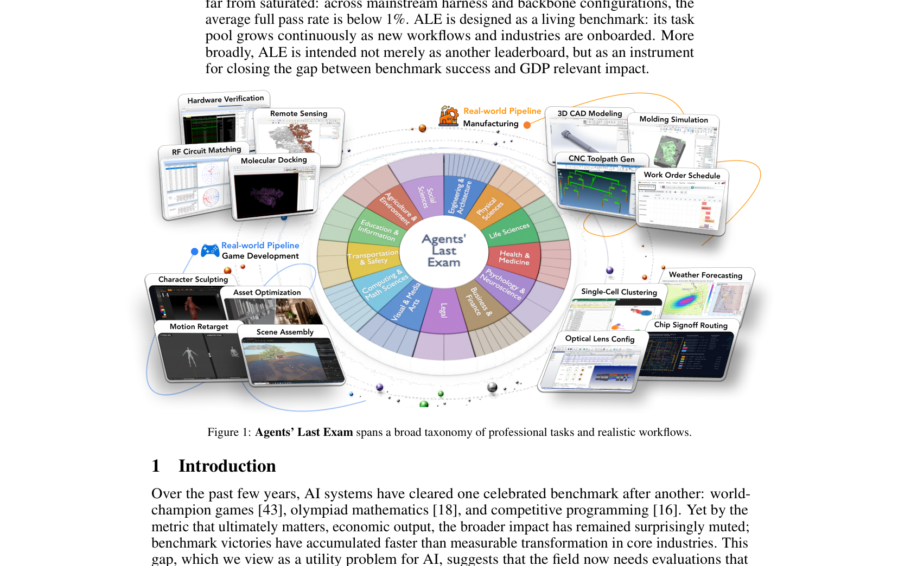
Figure 1: Agents’ Last Exam spans a broad taxonomy of professional tasks and realistic workflows.图 13 可视化了表 1 中 16 个主流 harness–骨干配置的性能与资源消耗之间的关系。由此可得出三点观察。
Abstract Recent AI systems have achieved strong results on a wide range of benchmarks, yet these gains have not translated into economically meaningful deployment across many professional domains. We argue that this gap is largely an evaluation problem: widely used benchmarks lack sustained performance measurement on real and economically valuable workflows. This paper introduces Agents’ Last Exam (ALE), a benchmark designed to evaluate AI agents on long horizon, economically valuable, real world tasks with verifiable outcomes. Developed in collaboration with 250+ industry experts, ALE covers non-physical industries defined with reference to O*NET / SOC 2018 (the U.S. federal occupational taxonomy). It is organized around a task taxonomy with 55 sub fields grouped into 13 industry clusters covering 1K+ tasks. Current results show that the hardest tier remains far from saturated: across mainstream harness and backbone configurations, the average full pass rate is below 1%. ALE is designed as a living benchmark: its task pool grows continuously as new workflows and industries are onboarded. More broadly, ALE is intended not merely as another leaderboard, but as an instrument for closing the gap between benchmark success and GDP relevant impact.
摘要 近期的 AI 系统已在众多基准上取得出色成绩，但这些进展并未转化为诸多专业领域中具有经济意义的实际部署。我们认为，这一差距在很大程度上源于评估本身：广泛使用的基准缺乏对真实且具有经济价值的工作流的持续性能度量。本文提出 Agents' Last Exam（ALE），一个面向长时程、结果可验证、具有经济价值的真实世界任务的 AI agent 评估基准。ALE 由 250 余位行业专家协作构建，覆盖参照美国联邦职业分类 O*NET / SOC 2018 界定的非体力行业；其任务分类体系包含 55 个子领域，归入 13 个行业簇，共计 1K+ 任务。当前结果显示，最难一档远未饱和：在各类主流 harness 与骨干模型配置下，平均完整通过率不足 1%。ALE 定位为一个持续演进的活基准：随着新的工作流与行业不断接入，其任务池持续扩张。更宏观地看，ALE 不只是又一个排行榜，更是弥合基准成绩与 GDP 相关影响之间鸿沟的一项工具。
This gap matters because AI progress is remarkably shaped by the benchmarks the field chooses to optimize. Benchmarks do not merely record capability; they focus research attention, define engineering targets, and often determine which domains become tractable for rapid improvement. The recent history of AI makes this pattern clear: once a domain is captured by a verifiable and widely used evaluation, progress in that domain tends to accelerate, and deployment often follows, like ImageNet [13] played this role in computer vision. For economically central sectors such as finance, law, electrical engineering, and manufacturing, however, comparable evaluations remain underdeveloped. If such benchmarks can be built and eventually saturated, that outcome would signify more than success on a test: it would indicate that AI systems have become capable of performing the underlying professional workflows at a level sufficient for real industrial adoption.
这一差距之所以关键，是因为 AI 的进展在很大程度上由本领域选择优化的基准塑造。基准不只是记录能力：它们聚焦研究注意力、设定工程目标，并常常决定哪些领域能够被快速改进。AI 近期的发展史清晰印证了这一模式：一旦某个领域出现可验证且被广泛采用的评估，该领域的进展便会加速，落地部署往往随之而来——ImageNet [13] 在计算机视觉中正是扮演了这一角色。然而，对金融、法律、电气工程、制造等经济核心部门而言，可比的评估仍付之阙如。若这类基准得以建成并最终饱和，其意义将远超一次测试的成功：它意味着 AI 系统已有能力以足以支撑真实产业采用的水平，完成相应的专业工作流。
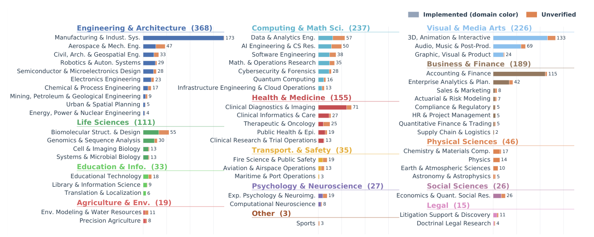
Figure 2: Distribution of 1,490 task instances across the ALE taxonomy. Each row is one of the 55 subdomains, grouped under the 13 top-level domains (parenthetical numbers give domain totals). Stacked bars decompose each subdomain into fully-implemented instances (domain color) and expert submissions awaiting Quality Control (QC) Process (orange). All 55 subdomains receive non-zero coverage. Current runnable task instances target either Linux or Windows virtual machines.
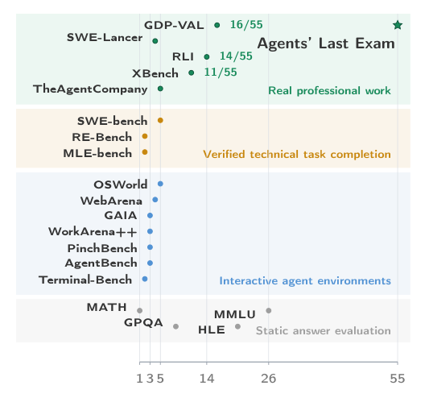
Figure 3: Benchmark positioning map. Prior bench- marks are placed by mapping their published domains onto the ALE domain taxonomy.
Building such evaluations is difficult for structural reasons. First, long-horizon authentic workflows are expensive to collect because they must be sourced from real software and organizational contexts. Prior work often adopts task units that are easier to collect, whether shorter computer-use tasks [51], synthetic environment construction [1], or purely question-answering setups [53]. Second, broad industry coverage with authentic, economically valuable workflows is also hard. It requires sustained access to experts across domains and deep insight into the industrial landscape. Existing benchmarks often evaluate on a limited set of domains [3]. Third, verification is intrinsically hard for real workflows because the output space is heterogeneous. A correct deliverable may be a file, spreadsheet, media artifact, report, design, or model. As a result, benchmarks that measure economically valuable work often rely on human judgment, as in GDPval [37] and the Remote Labor Index [23]. These constraints help explain why existing benchmarks often trade away one of realism, breadth, or verifiability. They jointly motivate Agents’ Last Exam (ALE).
构建此类评估面临结构性的困难。其一，长时程的真实工作流收集代价高昂——它们必须取材于真实的软件与组织环境；先前工作往往退而选择更易获取的任务单元，如较短的计算机使用任务 [51]、合成环境构建 [1] 或纯问答形式 [53]。其二，要以真实且具有经济价值的工作流覆盖广泛的行业同样不易：这既需要与各领域专家建立长期合作，也需要对产业格局的深入理解，而现有基准通常仅在有限的领域上评估 [3]。其三，真实工作流的验证天然困难，因为其输出空间高度异构——合格的交付物可能是文件、电子表格、媒体产物、报告、设计或模型。因此，度量具有经济价值工作的基准往往依赖人工评判，如 GDPval [37] 与 Remote Labor Index [23]。这些约束解释了为何现有基准通常要在真实性、广度与可验证性之间有所取舍——它们共同催生了 Agents' Last Exam（ALE）。
Why “Last Exam”? The name carries a dual aspiration. Last as competence threshold: an agent that passes these industry exams demonstrates readiness to carry out sustained, economically valuable work in that profession, not merely to answer questions about it. Last as difficulty frontier: by grounding evaluation in authentic long-horizon workflows that require professional judgment, ALE sits at the boundary of what current systems can reliably accomplish.
为何名为“最后一考”（Last Exam）？这一名称蕴含双重寓意。其一，Last 意为能力门槛：能通过这些行业考试的 agent，证明的是其已具备在该职业中承担持续、具有经济价值工作的实力，而非仅仅能回答相关问题。其二，Last 意为难度前沿：ALE 将评估锚定于需要专业判断的真实长时程工作流，恰好落在当前系统能力可靠边界之上。
ALE is a benchmark of 1K+ task instances spanning 55 subfields and 13 industry clusters, developed in collaboration with 250+ domain experts. To ensure broad and representative industry coverage, expert ad- visory committees map each domain’s workflow land- scape and identify economically meaningful work- flow families, anchored in the O*NET / SOC 2018 occupational taxonomy [38, 46]. Its task workflows are sourced from real professional practice: rather than inventing synthetic scenarios, experts contribute projects they have already completed, which then undergo multi-round quality control, including first- pass review, engineer dry-runs, and final peer review by expert committees, before admission. Most tasks demand computer use that interleaves GUI interac- tion (desktop applications, browsers, domain-specific software) with CLI operations (shell scripting, code execution, file manipulation), requiring the union of capabilities that existing benchmarks test in isolation.
ALE 包含 1K+ 任务实例，横跨 55 个子领域、13 个行业簇，由 250 余位领域专家协作构建。为实现广泛而具代表性的行业覆盖，专家顾问委员会以 O*NET / SOC 2018 职业分类 [38, 46] 为锚，梳理各领域的工作流版图，并甄别具有经济意义的工作流族。任务工作流全部取材于真实职业实践：专家贡献的是其已完成的项目，而非人工编造的合成场景；项目须经过多轮质量控制——初筛评审、工程师试运行、专家委员会终审——方可收录。多数任务要求同时交织使用 GUI 交互（桌面应用、浏览器、领域专用软件）与 CLI 操作（shell 脚本、代码执行、文件操作），所需能力正是现有基准只能孤立考察的那一并集。
To make heterogeneous real-world outputs verifiable without human judges, ALE standardizes evaluation around structured deliverable-based or milestone-based checks against expert-provided references and rubrics.
为了在无需人工评审的前提下让异构的真实世界输出变得可验证，ALE 将评估标准化为一组结构化检查——或针对最终交付物、或针对关键里程碑——并对照专家提供的参考答案与评分细则进行判定。
ALE’s target evaluation subject is the Generalist Computer-Use Agent (GCUA), such as Claude Code [4] or Codex [33], that combines visual perception, code execution, tool use, and long-horizon planning within a single action loop. ALE’s task surface is, by construction, a superset of GUI- only benchmarks like OSWorld [51] and CLI-only benchmarks like Terminal-Bench [24]. For coverage comparisons, we use the 55 ALE subdomains as a common coordinate system and map each prior benchmark’s published subjects, applications, repositories, or occupations onto this taxonomy (Figure 3). Current results confirm that ALE is far from saturated: the strongest configuration (Codex with GPT-5.5), which already achieves 82% on Terminal-Bench, scores below 50% even on ALE’s easiest tier and under 10% on the hardest; most mainstream agents, including Claude Code, record near-zero pass rates at that difficulty level.
ALE 的目标评估对象是通用计算机使用 agent（GCUA），如 Claude Code [4] 与 Codex [33]，它们在单一动作循环中融合视觉感知、代码执行、工具调用与长时程规划。就任务面而言，ALE 天然构成仅 GUI 基准（如 OSWorld [51]）与仅 CLI 基准（如 Terminal-Bench [24]）的超集。为开展覆盖范围比较，我们以 55 个 ALE 子领域作为公共坐标系，将各既有基准所发布的主题、应用、仓库或职业映射到该分类体系上（图 3）。当前结果证实 ALE 远未饱和：最强配置（Codex 搭载 GPT-5.5）在 Terminal-Bench 上已达 82%，但在 ALE 最易一档得分不足 50%，在最难一档不足 10%；包括 Claude Code 在内的多数主流 agent 在该难度下通过率接近于零。
More broadly, ALE is intended not merely as another leaderboard, but as an instrument for closing the gap between benchmark success and GDP-relevant impact: if frontier AI agents can pass this last exam, then progress on the benchmark may begin to register as real economic transformation.
更宏观地看，ALE 不只是又一个排行榜，而是弥合基准成绩与 GDP 相关影响之间鸿沟的工具：一旦前沿 AI agent 能够通过这最后一考，基准上的进展便可能开始转化为真实的经济变革。
2Benchmark Design and Dataset Construction2 基准设计与数据集构建
2.1Benchmark Design Principles: What Tasks are We Looking for?2.1 基准设计原则：我们需要什么样的任务？
The benchmark is defined by three high-level requirements. They determine which workflows are admitted into the dataset and which are rejected in the public submission portal:
该基准由三项高层要求定义，它们决定了哪些工作流可被数据集收录、哪些会在公开提交入口被拒：
• Representativeness. The workflow should match real professional practice and use the software that domain experts would actually use. For example, architectural experts would typically use
• 代表性。工作流应贴合真实职业实践，并使用领域专家实际会采用的软件。例如，建筑领域的专家通常会用
SolidWorks or Rhino rather than AutoCAD to convert a 2D blueprint into a 3D model.
SolidWorks 或 Rhino（而非 AutoCAD）将 2D 图纸转换为 3D 模型。
• Complexity. A task should be an end-to-end deliverable that would take an expert substantial time, rather than only a few UI operations. The key distinction is between a workflow and an action.
• 复杂性。任务应是需要专家投入可观时间的端到端交付物，而非寥寥几次 UI 操作；关键在于区分“工作流”与“动作”。
Undesired example. “Apply a color filter in DaVinci” is too narrow because it’s a single local edit.
不合格示例。“在 DaVinci 中应用一个颜色滤镜”范围过窄——这只是单次局部编辑。
Better example. “Move a running cheetah into another race video” is suitable because it requires tracking, rotoscoping, compositing, and color matching within one coupled workflow.
更佳示例。“把一只奔跑的猎豹移入另一段赛跑视频”则合格，因为它要求在同一耦合工作流内完成目标跟踪、rotoscoping、合成与色彩匹配。
• Verifiability. The output should admit deterministic checking or an unambiguous rubric tied to observable artifacts. The strongest case is a deterministic deliverable that can be compared directly against a reference output. When exact matching is impossible, the judgment should still reduce to a measurable artifact.
• 可验证性。输出应支持确定性检查，或可依据绑定到可观察产物的无歧义评分细则评判。最理想的情形是确定性交付物可直接与参考输出比对；当精确匹配不可行时，判定仍应能归结为可度量的产物。
Undesired example. “Design an RPG game with monsters” provides no objectively checkable target.
不合格示例。“设计一个有怪物的 RPG 游戏”不提供任何可客观检验的目标。
Better example. “Reproduce the game mota.exe using RPGMaker XP” is verifiable because the resulting map geometry, character attributes, and event states can be automatically compared against a reference version under identical trajectories of user operations.
更佳示例。“使用 RPGMaker XP 复刻游戏 mota.exe”则是可验证的：在相同的用户操作轨迹下，所得的地图几何、角色属性与事件状态可与参考版本自动比对。
2.2Benchmark Scope and Taxonomy: Which Domains Do We Cover?2.2 基准范围与分类体系：我们覆盖哪些领域？
Rather than selecting industries ad hoc or by economic ranking, we ground the ALE taxonomy in SOC 2018 [46] and O*NET [38]: we cluster occupations with similar software-mediated workflows into ALE industries, exclude sectors whose core work is not meaningfully digital, and group the result into 13 domains spanning 55 subdomains (Figure 1; full derivation in Appendix B.1). To enable fair cross-benchmark comparison, we map each prior benchmark’s published categories (subjects, applications, repositories, or occupations) onto the same 55-subdomain taxonomy via an LLM-assisted classifier. The result exposes a coverage gap that no existing benchmark closes: even the union of 16 major prior benchmarks leaves 13 of 55 subdomains entirely uncovered (Table 2).
我们不临时挑选行业，也不按经济体量排序取舍，而是将 ALE 分类体系锚定于 SOC 2018 [46] 与 O*NET [38]：把软件中介工作流相似的职业聚合成 ALE 行业，剔除核心工作并非实质性数字化的部门，再将结果归组为横跨 55 个子领域的 13 个领域（图 1；完整推导见附录 B.1）。为实现公平的跨基准比较，我们借助 LLM 辅助的分类器，将各既有基准发布的类别（主题、应用、仓库或职业）映射到同一 55 子领域分类体系上。结果揭示出一个任何现有基准都未能弥合的覆盖缺口：即便取 16 个主要既有基准的并集，55 个子领域中仍有 13 个完全未被覆盖（表 2）。
2.3Task Construction Pipeline: How are the Tasks Created?2.3 任务构建流水线：任务如何产生？
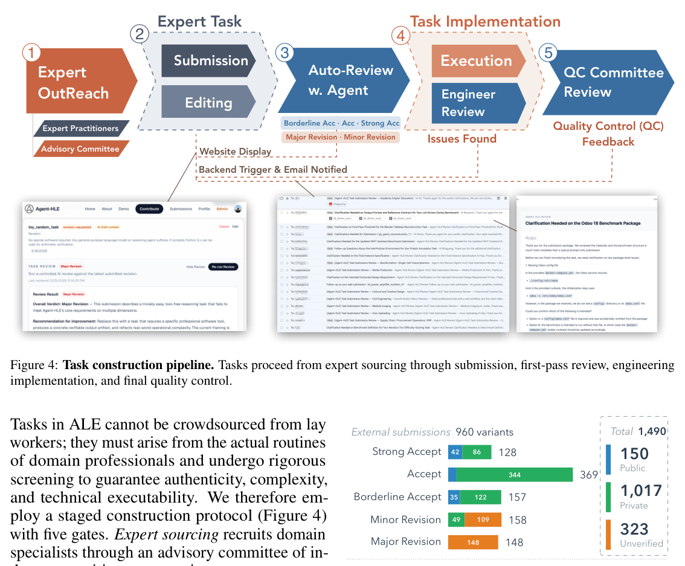
Figure 4: Task construction pipeline. Tasks proceed from expert sourcing through submission, first-pass review, engineering implementation, and final quality control.
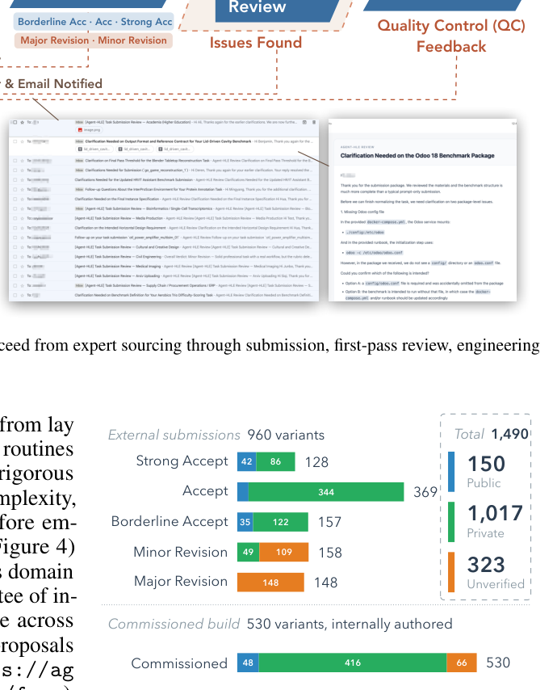
Figure 5: Provenance and review yield. The 1,490 task in- stances split into 960 external submissions (top, by first-pass review verdict) and 530 commissioned tasks (bottom). Each bar is segmented by release state: 150 public, 1,017 private, and 323 unverified pending QC.
Tasks in ALE cannot be crowdsourced from lay workers; they must arise from the actual routines of domain professionals and undergo rigorous screening to guarantee authenticity, complexity, and technical executability. We therefore em- ploy a staged construction protocol (Figure 4) with five gates. Expert sourcing recruits domain specialists through an advisory committee of in- dustry practitioners, ensuring coverage across the taxonomy. Task submission routes proposals through a dedicated web portal (https://ag ents-last-exam.org/submit/new/form), where experts upload past projects that took them days or weeks of professional work and AI- assisted tools help refine each proposal until five core components are fully specified: a natural- language description, input files, target software, expected deliverable, and evaluation specification. First-pass review screens submissions with conference-style decisions (major / minor revision, borderline accept, accept, strong accept); revisions loop back to the expert. Task implementation converts accepted specifications into runnable assets, provisioned software containers, and codified evaluation logic, with engineer dry-runs and automatic routing back to the expert when gaps are found. Final QC is a peer review by the expert committee that verifies reference-output correctness, calibration of evaluation bounds (neither impossibly narrow nor spuriously permissive), and sufficiency of context before the task is admitted. More details are deferred to Appendix B.2.
ALE 的任务不能向非专业众包人员征集，而必须源自领域专业人员的真实日常工作，并经严格筛选以保证真实性、复杂性与技术可执行性。为此，我们采用设五道关卡的分级构建流程（图 4）。专家来源：通过行业从业者组成的顾问委员会招募领域专家，确保覆盖整个分类体系。任务提交：提案经专门的网络入口（https://ag ents-last-exam.org/submit/new/form）提交；专家上传其曾耗费数天乃至数周专业工作的既往项目，AI 辅助工具协助打磨每份提案，直至五个核心组件全部明确：自然语言描述、输入文件、目标软件、期望交付物与评估规格。初筛评审：以会议式决定（大修 / 小修、边缘接收、接收、强接收）筛选提交，修订意见回流给专家。任务实现：将通过的规格转化为可运行资产、预配置的软件容器与固化的评估逻辑，期间由工程师试运行，发现缺口即自动回退给专家。最终 QC：由专家委员会进行同行评审，核验参考输出的正确性、评估界限的校准（既不过窄至无法达成，也不过宽至形同虚设）以及上下文的充分性，通过后任务方被收录。更多细节见附录 B.2。
Public/private release strategy. Benchmark contamination, whether through pre-training data overlap or task-specific optimization, is a central threat to the long-term validity of any public evaluation. ALE addresses this by releasing only 150 of the 1,490 task instances (∼10%) publicly, with the remainder held in a private pool (Figure 5). ALE is further designed for rolling evaluation: private task instances will periodically rotate into the public set while retired public tasks are replaced, maintaining an uncontaminated evaluation surface over successive model generations. Appendix D.1 verifies empirically that the public subset is representative of the full pool.
公开/私有发布策略。基准污染——无论源自预训练数据重叠还是任务特定优化——是威胁任何公开评估长期有效性的核心因素。ALE 的应对方案是：1,490 个任务实例中仅公开 150 个（约 10%），其余保留在私有池中（图 5）。ALE 还进一步设计为滚动评估：私有任务实例周期性轮换进入公开集，退役的公开任务则被替换，从而在相继的模型世代间维持无污染的评估面。附录 D.1 以实证方式验证了公开子集对完整任务池的代表性。
3Evaluation Pipeline3 评估流水线
The previous section describes how expert submissions are collected and converted into verified benchmark instances. This section specifies what happens once a task exists: how it is executed, how
上一节描述了专家提交如何被收集并转换为经核验的基准实例。本节说明任务就位之后发生的事：任务如何被执行、agent 如何
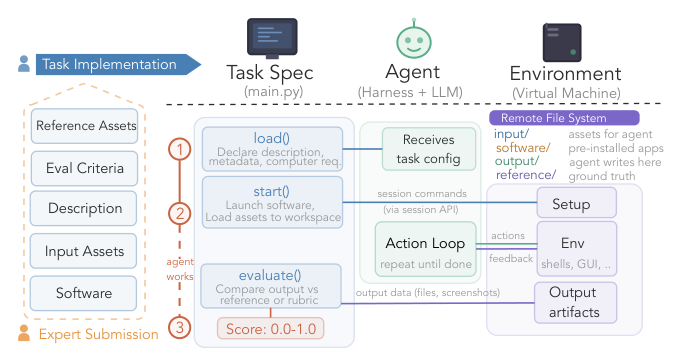
Figure 6: Evaluation pipeline architecture. Each benchmark instance is defined by a Task Specification (main.py) that orchestrates a three-phase lifecycle (load(), start(), evaluate()) over a remote virtual-machine environment. The agent (harness + model) receives only the task description and metadata, interacts with the environment through an action loop, and produces output artifacts that the specification scores against references or rubrics.图 6 展示了端到端的评估流水线。基准实例由三个解耦组件实现，它们经由明确定义的接口交互。任务规格是一个可执行的 main.py，编码了构建阶段提供的五个要素（描述、输入资产、目标软件、参考资产、评估标准），并暴露三个生命周期函数：load() 声明任务并计算资源需求，start() 将虚拟机置备到确定性的初始状态，evaluate() 在 [0, 1] 区间为 agent 输出打分。agent（一个编排基础模型的 harness）只接收任务描述与元数据，随后在截图、shell 输出、鼠标键盘、文件编辑与 API 调用之上运行动作循环，直至终止。环境是一台远程虚拟机，采用规范的四目录布局：input/（只读资产）、software/（预装应用）、output/（agent 唯一可写目标）与 reference/（对 agent 隐藏、仅用于打分的真值产物）。这种解耦使任何符合动作接口的 agent 都能在任何任务上被评估，也使单一规格无需修改即可部署到云端虚拟机或本地容器。各组件接口与目录契约详见附录 C.1，生命周期协议见附录 C.2。
the agent interacts with the environment, and how the outcome is scored. The pipeline is organized around an uncoupling of three components (the task specification, the agent, and the environment) so that they can all be easily interchanged.
与环境交互，以及结果如何被打分。该流水线的组织原则是将三个组件——任务规格、agent、环境——解耦，使三者均可轻松替换。
Terminology. Throughout the paper we use task workflow for an end-to-end professional procedure and task instance for one runnable case of a task workflow (one concrete (input, output) pair, sharing the same evaluate() but differing in input and output data). The rare appearance single “task” refers to the runnable instance level.
术语。全文统一用 task workflow 指端到端的职业流程，用 task instance 指 task workflow 的一个可运行案例（一个具体的 (input, output) 对，共享同一 evaluate() 但输入与输出数据不同）。偶见的单个“task”指可运行实例层面。
3.1Pipeline Architecture3.1 流水线架构
3.2Agent Architecture: From CLI/GUI-agents to Generalist CUA3.2 Agent 架构：从 CLI/GUI agent 到通用 CUA
The tasks in ALE require agents that can read GUI screens, type in dialog boxes, execute shell commands, write and debug code, invoke APIs, and manage long-running sessions, often within a single task workflow. No single existing agent family covers this surface natively, so the benchmark targets a broader agent class that we make explicit here, together with how the prevailing harness architecture is extended to reach it.
ALE 的任务要求 agent 能够读取 GUI 屏幕、在对话框中输入、执行 shell 命令、编写并调试代码、调用 API、管理长时间运行的会话——这些往往要在单个任务工作流内完成。没有任何现有 agent 家族能原生覆盖这一能力面，因此本基准针对一个更广的 agent 类别；我们在此将其明确界定，并说明主流 harness 架构如何扩展以覆盖它。
We decompose an agent’s operational capabilities into five functional layers (Figure 7): Brain (LLM reasoning and planning), Eyes (GUI perception via screenshots), Body (orchestration and control flow), Hands (structured tool invocation), and Feet (the runtime substrate on which actions take effect). This decomposition exposes a clean split among existing families. Traditional CLI-agents such as SWE-agent [52] and ForgeCode [45] have full Brain, Body, Hands, and Feet but lack Eyes by construction; framework-style agents such as OpenClaw are not strictly CLI-only, yet they ship without a native GUI module. GUI-agents built on vision-language action models cover Brain and Eyes but expose only shallow Body, narrow Hands (mostly mouse and keyboard), and restricted Feet, leaving them unable to write code, manage files, or sustain long workflows. ALE’s task workflows demand the union of both surfaces, so the agent class the benchmark evaluates is the Generalist CUA-agent (GCUA): an agent with full capability across all five layers. We adopt the “Generalist” qualifier deliberately, because the industry often equates CUA-agents with GUI-agents; this conflation is incomplete.
我们将 agent 的操作能力分解为五个功能层（图 7）：Brain（LLM 推理与规划）、Eyes（基于截图的 GUI 感知）、Body（编排与控制流）、Hands（结构化工具调用）与 Feet（动作得以生效的运行时基底）。这一分解揭示出既有 agent 家族之间的清晰分野。传统 CLI agent 如 SWE-agent [52] 与 ForgeCode [45] 在构造上具备完整的 Brain、Body、Hands 与 Feet，但天然缺乏 Eyes；框架式 agent 如 OpenClaw 并非严格仅限 CLI，却也不带原生 GUI 模块。建立在视觉-语言-动作模型之上的 GUI agent 覆盖 Brain 与 Eyes，但 Body 浅、Hands 窄（多为鼠标与键盘）、Feet 受限，因而无法编写代码、管理文件或支撑长工作流。ALE 的任务工作流要求两个能力面的并集，因此本基准评估的 agent 类别是 Generalist CUA-agent（GCUA）：在全部五层均具备完整能力的 agent。我们有意识地采用“Generalist”这一限定词，因为业界常把 CUA-agent 等同于 GUI agent，而这种混同并不完整。
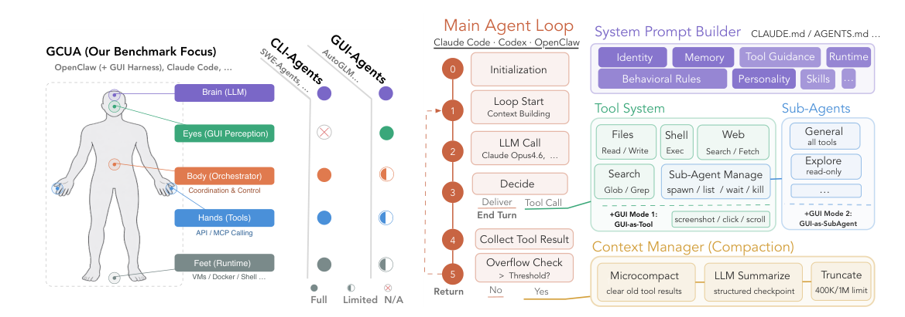
Figure 7: Agent capability taxonomy. Five func- tional layers define an agent’s operational surface. Generalist CUA-agents (GCUA) possess full capabil- ity across all layers; CLI-agents lack visual percep- tion (Eyes); GUI-agents have limited orchestration, tool use, and runtime access (Body, Hands, Feet).
Figure 8: Typical GCUA harness architecture. The main agent loop (left) cycles through context building, LLM inference, action decision, tool execution, and overflow management. The system prompt builder, tool system (including GUI harness via MCP), sub- agents, and context compaction manager are shared across mainstream harness implementations.
The harness layer that mediates model and environment has converged toward a structure rich enough to support GCUA. Early agents revolved around a thin reasoning loop in the style of ReAct [54] (interleaved Think and Action steps); contemporary harnesses such as Claude Code [4], Codex [33], and OpenClaw share a richer macro-architecture that we treat as representative of the modern agent-harness layer (Figure 8): a main agent loop, a modular system prompt builder, a unified tool system, sub-agent dispatch, and a context compaction manager for long-horizon runs. Because these harnesses are CLI-native, lifting them to GCUA reduces to adding GUI capability. We use two modes: GUI-as-Tool exposes GUI operations as ordinary tools in the main loop, while GUI-as-SubAgent delegates GUI interaction to a specialized vision-language sub-agent. We currently reserve GUI-as- SubAgent for models without native vision input, such as DeepSeek V4 [12]. Our primary benchmark evaluation uses GUI-as-Tool to measure integrated visual reasoning and action over the full task. Component-level harness internals are deferred to Appendix C.4.
在模型与环境之间居间协调的 harness 层已收敛为一种足以支撑 GCUA 的结构。早期 agent 围绕 ReAct [54] 式的薄推理循环（交替的 Think 与 Action 步骤）构建；当代 harness 如 Claude Code [4]、Codex [33] 与 OpenClaw 则共享一种更丰富的宏观架构，我们视其为现代 agent-harness 层的代表（图 8）：主 agent 循环、模块化系统提示构建器、统一工具系统、子 agent 分发，以及面向长时程运行的上下文压缩管理器。由于这些 harness 以 CLI 为原生形态，将其提升到 GCUA 只需补足 GUI 能力。我们使用两种模式：GUI-as-Tool 将 GUI 操作作为普通工具暴露在主循环中；GUI-as-SubAgent 则将 GUI 交互委托给专门的视觉-语言子 agent。目前仅对缺乏原生视觉输入的模型（如 DeepSeek V4 [12]）保留 GUI-as-SubAgent。主基准评估采用 GUI-as-Tool，以度量覆盖完整任务的视觉推理与行动整合能力。组件级 harness 内部细节见附录 C.4。
3.3Evaluation Modes3.3 评估模式
The deliverables that evaluate() must score are highly heterogeneous (CAM toolpaths, financial workbooks, 3D meshes, game world states, rendered screenshots, structured filings, free-text reports). Rather than impose a single scoring metric, ALE composes every task’s evaluation along two orthogonal axes. (i) Comparison form: task authors pick from a small palette of artifact modes: exact / hashed values, structured numeric or tabular fields with manifest-driven tolerances, geometric surface or point-cloud distances, visual appearance (vision-LLM judge), behavioral world state under a fixed input trajectory, and free-text rubric scoring. (ii) Composition: the per-artifact signals are combined either by a gate-and-score pattern or by averaging a binary checklist or per-file scores. Gate-and-score is the most common pattern: a binary precondition (e.g., “no toolpath collision,” “file parses without error”) must pass before a continuous quality metric (surface deviation, dimensional accuracy, etc.) is evaluated; failure on the gate forces the task score to 0 regardless of partial progress on other criteria. The full mode taxonomy with per-task-workflow assignments, helper APIs, and worked examples are given in Appendix C.3.
evaluate() 所要打分的交付物高度异构（CAM 刀具路径、财务工作簿、3D 网格、游戏世界状态、渲染截图、结构化申报文件、自由文本报告）。ALE 不强加单一评分指标，而是沿两个正交轴组合每项任务的评估。(i) 比较形式：任务作者从一小组产物模式中挑选——精确 / 哈希值、带清单驱动容差的结构化数值或表格字段、几何曲面或点云距离、视觉外观（vision-LLM 评审）、固定输入轨迹下的行为世界状态，以及自由文本评分细则打分。(ii) 组合方式：各产物信号或按 gate-and-score 模式组合，或通过对二值清单或逐文件得分取平均组合。gate-and-score 是最常见模式：一个二值前置条件（如“刀具路径无碰撞”“文件解析无错误”）必须先通过，随后才评估连续质量指标（表面偏差、尺寸精度等）；一旦门槛失败，无论其他标准上有多少部分进展，任务得分一律强制为 0。完整模式分类、逐任务工作流的分配、辅助 API 与算例见附录 C.3。
ALE deliberately avoids LLM-as-judge wherever a deterministic alternative exists; a task workflow whose only proposed scoring path is “ask a model whether the result looks correct” is rejected at QC and re-engineered to expose a checkable artifact. The minority of task workflows that genuinely require an LLM judge (video clip, game screenshot, rendered scene, etc) are scored not by general-purpose holistic prompts but by narrow, evidence-anchored yes/no probes whose answers code aggregates into the score. Each task workflow exposes a list of task instances (e.g., the 18 workpiece instances in manufacturing/gcode) that share a single evaluate() but differ in input and reference.
只要存在确定性替代方案，ALE 就有意回避 LLM-as-judge；唯一拟议打分路径是“问一个模型结果看起来是否正确”的任务工作流，会在 QC 阶段被拒收，并被重新设计以暴露可检验的产物。确实需要 LLM 评审的少数任务工作流（视频片段、游戏截图、渲染场景等），不以通用的整体性提示打分，而是采用狭窄的、以证据为锚的是/否探针，其答案将聚合结果编码进分数。每个任务工作流暴露一列任务实例（如 manufacturing/gcode 中的 18 个工件实例），它们共享同一 evaluate()，仅输入与参考不同。
4Experiment4 实验
ALE’s task instances are drawn from authentic professional workflows that experts carry out on real computer environments, routinely interleaving shell commands, GUI applications, file manipulation, and web research within a single task. As argued in Section 3.2, this operational surface requires Generalist CUA-agents (GCUA) with full capability across all five functional layers (Brain, Eyes, Body, Hands, Feet). We therefore evaluate all agent systems in GCUA configuration.
ALE 的任务实例取材于专家在真实计算机环境中开展的职业工作流，单个任务内通常交织 shell 命令、GUI 应用、文件操作与网络检索。如第 3.2 节所述，这一操作面要求在全部五个功能层（Brain、Eyes、Body、Hands、Feet）均具备完整能力的 Generalist CUA-agent（GCUA）。因此，我们以 GCUA 配置评估所有 agent 系统。
4.1Main Results4.1 主要结果
To bring every agent into GCUA configuration, each system is extended with GUI-as-Tool mode: a unified CUA MCP bridge exposes 14 desktop-action tools (Table 5) as standard entries in the agent’s tool system, so that a single foundation model reasons over both shell output and visual feedback within one action loop. Table 1 reports mean scores, pass rates, costs, and wall-clock times for agent systems and foundation models. Specifically, mean score is the mean fine-grained task score, full pass
为使每个 agent 进入 GCUA 配置，每个系统均以 GUI-as-Tool 模式扩展：一个统一的 CUA MCP 桥把 14 个桌面操作工具（表 5）作为标准条目接入 agent 的工具系统，使单一基础模型能在同一动作循环内对 shell 输出与视觉反馈进行推理。表 1 报告各 agent 系统与基础模型的平均分、通过率、成本与墙钟时间。具体而言，平均分指细粒度任务得分的均值，full pass
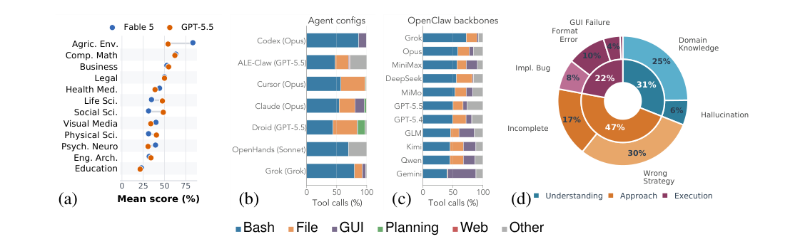
Figure 9: Experiment analysis overview. (a) Domain-level mean scores for Claude Fable 5 and GPT-5.5, each averaged over harnesses with completed runs on the selected public task set; the sparse transportation domain is omitted. (b) Tool-call mix for the best available table-backed configuration per harness. (c) Tool-call mix for backbone models under a fixed OpenClaw harness. (d) Failure root-cause taxonomy for failed Claude Code + Opus 4.7 public-task runs.
rate is the share of tasks receiving full credit. Each run is capped at five hours; the overall timeout rate is 3.8%, ranging from ∼1% for lightweight harnesses to 5.7% for OpenClaw (see Appendix D.2). Rows are grouped into five blocks: (a) mainstream harness–backbone configurations; (b) model sweeps with the harness fixed to OpenClaw+GUI-as-Tool; (c) harness sweeps with the backbone fixed to GPT-5.5; (d) harness sweeps with the backbone fixed to Claude Opus 4.7; and (e) ALE-CLI, the 105 Linux-only task instances that can be attempted by CLI-only agents (ForgeCode, Hermes, Terminus) without GUI desktop access, reported in the lower panel of Table 1 with Codex and Claude Code as GCUA references.
率则指获得满分的任务占比。每次运行以五小时为上限；总体超时率为 3.8%，从轻量 harness 的约 1% 到 OpenClaw 的 5.7% 不等（见附录 D.2）。各行分为五个区块：(a) 主流 harness–骨干配置；(b) harness 固定为 OpenClaw+GUI-as-Tool 的模型扫描；(c) 骨干固定为 GPT-5.5 的 harness 扫描；(d) 骨干固定为 Claude Opus 4.7 的 harness 扫描；(e) ALE-CLI，即 105 个仅限 Linux、可由纯 CLI agent（ForgeCode、Hermes、Terminus）在无 GUI 桌面访问的情况下尝试的任务实例，在表 1 下方面板中报告，并以 Codex 与 Claude Code 作为 GCUA 参照。
ALE-CLI: a harder CLI-focused sub-benchmark. ALE-CLI is a natural comparison point to Terminal-Bench [24], which contains ∼100 terminal-centric tasks at a similar scale. However, ALE- CLI tasks are substantially harder and require longer agent sessions: Codex [33] with GPT-5.5 [35], the strongest configuration that achieves 82% on Terminal-Bench, reaches only a 23.3% overall pass rate on ALE-CLI (37.2% on Near-Term, 19.0% on Full-Spectrum, 0.0% on Last-Exam).
ALE-CLI：一个更难、聚焦 CLI 的子基准。ALE-CLI 是 Terminal-Bench [24] 的天然对照——后者包含约 100 个以终端为中心、规模相当的任务。然而，ALE-CLI 任务实质上更难，需要更长的 agent 会话：在 Terminal-Bench 上取得 82% 的最强配置——Codex [33] 搭载 GPT-5.5 [35]——在 ALE-CLI 上的总体通过率仅 23.3%（Near-Term 37.2%、Full-Spectrum 19.0%、Last-Exam 0.0%）。
Three difficulty tiers. A single run of a frontier agent on one ALE task costs $3–10 on average and takes tens of minutes to hours. Evaluating the full 152-task public set is therefore expensive, so ALE organizes tasks into three difficulty tiers that let the community choose a subset matching its evaluation budget and goal. Near-Term (67 tasks) contains workflows that current frontier agents can partially complete, with top pass rates approaching 40%; these tasks are the most cost-effective target for short-term leaderboard competition and rapid iteration. Full-Spectrum (55 tasks) covers, by design, each of ALE’s 55 subdomains with at least one task instance, ensuring broad domain coverage for comprehensive evaluation. Last-Exam (38 tasks) comprises the hardest workflows, on which most agents achieve a 0% pass rate; these tasks anchor the benchmark’s long-term headroom and are best reserved for milestone evaluations rather than routine testing.
三个难度档。前沿 agent 在单个 ALE 任务上的一次运行平均耗资 3–10 美元，耗时数十分钟至数小时。评估完整的 152 任务公开集因此代价高昂，故 ALE 将任务组织为三个难度档，供社区按自身评估预算与目标选择子集。Near-Term（67 任务）收录当前前沿 agent 可部分完成的工作流，最高通过率接近 40%，是短期排行榜竞争与快速迭代最具性价比的目标。Full-Spectrum（55 任务）在设计上为 ALE 的 55 个子领域各配置至少一个任务实例，确保全面评估所需的广泛领域覆盖。Last-Exam（38 任务）由最难的工作流组成，多数 agent 在其上通过率为 0%；这些任务锚定基准的长期提升空间，宜保留给里程碑式评估而非日常测试。
ALE-Claw: a Self-implemented GCUA reference. We implement ALE-Claw to test whether the basic GCUA components in Section 3.2, namely a single action loop, modular tools, GUI-as-Tool, and context compaction, suffice for achieving a comparable performance to frontier harnesses. ALE-Claw is a simplified implementation derived from OpenClaw [36] and scoped to isolated benchmark runs. It omits product features such as long-term memory management and user preference customization, which are useful for interactive agents such as Claude Code [4] but not required for single-task evaluation. Holding the foundation model fixed, ALE-Claw has comparable performance to default OpenClaw on ALE. Appendix C.4 documents the implementation differences.
ALE-Claw：一个自行实现的 GCUA 参照。我们实现 ALE-Claw，以检验第 3.2 节中的基本 GCUA 组件——单一动作循环、模块化工具、GUI-as-Tool 与上下文压缩——是否足以取得与前沿 harness 相当的性能。ALE-Claw 是从 OpenClaw [36] 衍生的简化实现，范围限定于隔离的基准运行；它省略了长期记忆管理与用户偏好定制等产品特性——这些特性对 Claude Code [4] 这类交互式 agent 有用，但单任务评估并不需要。在固定基础模型的前提下，ALE-Claw 在 ALE 上与默认 OpenClaw 性能相当。附录 C.4 记录了实现层面的差异。
4.2Analysis4.2 分析
Domain-level performance. Figure 9(a) shows mean scores by domain for Claude Fable 5 and GPT-5.5, each averaged over harnesses. The two frontier models exhibit similar domain profiles: computational mathematics and agriculture/environment score highest (∼55–85%), followed by business and legal (∼50–55%), while education remains lowest (below 25%). This shared ranking likely reflects both an imbalance in intrinsic model capability across domains and uneven exposure to tool-use tasks during training, where code-adjacent domains receive far more coverage than specialized professional workflows.
领域级性能。图 9(a) 展示了 Claude Fable 5 与 GPT-5.5 在各 harness 上取平均后的领域得分。两个前沿模型展现出相似的领域画像：计算数学与农业 / 环境得分最高（约 55–85%），商业与法律次之（约 50–55%），教育始终最低（不足 25%）。这一共同排序很可能同时反映了模型内在能力在领域间的不均衡，以及训练中工具使用任务曝光的不均衡——与代码相关的领域获得的覆盖远多于专门的职业工作流。
Tool usage. The tool traces, normalized using the taxonomy in Appendix C.4.1, reveal that both harness and model shape the tool-call mix (Figure 9(b,c)). GUI usage remains below task demand: 34% of public task instances designate graphical software as the primary tool, yet the GUI share stays small across most configurations, as agents execute GUI tasks through Bash/CLI substitutes.
工具使用。经附录 C.4.1 分类体系归一化的工具调用轨迹显示，harness 与模型共同塑造工具调用组合（图 9(b,c)）。GUI 的使用始终低于任务需求：34% 的公开任务实例指定图形软件为主要工具，但在多数配置下 GUI 占比仍然很小——agent 往往经由 Bash/CLI 替代方式执行 GUI 任务。
Failure taxonomy. We classified the failed tasks of Claude Code + Opus 4.7 into a two-level taxonomy (Figure 9(d); details in Appendix D.3). Understanding and Approach failures together account for roughly three quarters of cases, indicating that the dominant bottleneck is domain knowledge rather than execution capability. Lacking specialized knowledge, agents default to ad-hoc scripts instead of the intended domain software, reinforcing the GUI-underutilization pattern above.
失败分类。我们将 Claude Code + Opus 4.7 的失败任务归入一个两级分类体系（图 9(d)；细节见附录 D.3）。理解（Understanding）与方法（Approach）两类失败合计约占四分之三的案例，表明主导瓶颈是领域知识而非执行能力。由于缺乏专门知识，agent 退而求助于临时脚本，而非既定的领域软件，进一步强化了上述 GUI 利用不足的模式。
Additional analysis. Appendix D.4 further decomposes the performance variation into model and harness effects, finding that the choice of foundation model accounts for roughly 3× the spread of the choice of agent harness among well-engineered systems. Appendix D.5 examines the cost, time, and token efficiency of each configuration (Figure 13), showing that higher resource consumption does not reliably translate to better performance. Appendix D.6 provides per-task instance score heatmaps (Figures 14–16) that visualize every task–agent combination across the three tiers.
补充分析。附录 D.4 进一步把性能差异分解为模型效应与 harness 效应，发现在工程良好的系统之间，基础模型的选择造成的成绩离散度约为 agent harness 选择的 3 倍。附录 D.5 考察各配置的成本、时间与 token 效率（图 13），表明更高的资源消耗并不能可靠地转化为更好的性能。附录 D.6 提供逐任务实例得分热图（图 14–16），将三个难度档上的每一个任务–agent 组合可视化。
5Related Work5 相关工作
6Conclusion6 结论
We introduced ALE, a benchmark of 960 expert-authored task workflows (1,490 task instances) across 55 digital industries, sourced from work experts have already shipped, anchored in the SOC/O*NET taxonomy, and scored through deterministic checks and structured rubrics rather than open-ended LLM judging. Frontier agents clear only a small fraction today; we release ALE as an instrument for closing the gap between benchmark success and GDP-relevant impact, where saturation would signal that agents can sustain the long-horizon, tool-intensive work professional practice actually requires.
我们提出了 ALE：一个包含 960 个专家撰写的任务工作流（1,490 个任务实例）、横跨 55 个数字化行业的基准。其任务取材于专家已交付的工作，锚定于 SOC/O*NET 分类体系，并通过确定性检查与结构化评分细则打分，而非开放式的 LLM 评判。前沿 agent 目前只能通过其中一小部分；我们发布 ALE，作为弥合基准成功与 GDP 相关影响之间鸿沟的工具——一旦该基准趋于饱和，即意味着 agent 已能持续完成职业实践真正要求的长时程、工具密集型工作。
7Broader Impact7 更广泛的影响
The premise of ALE is to quantitatively measure the usefulness of agents on increasingly complex, multi-step tasks that reflect real professional work requiring planning, perception, and creative problem-solving. Although agents currently pass only a small fraction of ALE tasks, continued advances in data and training protocols in response to more sophisticated benchmarks are likely to improve agentic capabilities. As a potentially disruptive technology, agentic AI may reshape labor markets, particularly entry-level roles held by workers with bachelor’s or doctoral degrees, in ways that mirror earlier disruptions to blue-collar work caused by the automation of physical labor. By providing early, measurable signals of these changes, ALE can help policymakers, educators, employers, and workers anticipate workforce transitions and create new roles that keep pace with potential job displacement as agents become more capable. Finally, by democratizing benchmark development across domain experts and making governance, access policies, and evaluation procedures explicit and transparent, benchmarks such as ALE may support more informed regulation and the responsible development of increasingly powerful agentic technologies.
ALE 的前提是定量衡量 agent 在日益复杂的多步任务上的实用性，这些任务反映了需要规划、感知与创造性问题求解的真实职业工作。尽管 agent 目前只能通过 ALE 任务的一小部分，但随着数据和训练协议为应对更复杂的基准而持续改进，agentic 能力有望不断提升。作为一种潜在的颠覆性技术，agentic AI 可能重塑劳动力市场——尤其是由拥有学士或博士学位的劳动者担任的入门级岗位——其冲击方式类似于体力劳动自动化当年对蓝领工作的影响。通过为这些变化提供早期、可度量的信号，ALE 可帮助政策制定者、教育者、雇主与劳动者预判劳动力转型，并在 agent 能力增强、岗位替代风险上升之际，创造与之同步的新角色。最后，通过把基准开发向各领域专家开放，并使治理、访问政策与评估程序明确透明，ALE 这类基准或可支持更明智的监管，以及日益强大的 agentic 技术的负责任发展。
Acknowledgments and Disclosure of Funding致谢与资助披露
We gratefully acknowledge the Tianqiao & Chrissy Chen Institute (TCCI), Snorkel AI, and UniPat AI for their financial and credit support.
我们衷心感谢 Tianqiao & Chrissy Chen Institute（TCCI）、Snorkel AI 与 UniPat AI 提供的资金与信用支持。
ReferencesReferences（参考文献，条目保留英文原文）
[1] Pranjal Aggarwal, Graham Neubig, and Sean Welleck. Gym-anything: Turn any software into an agent
[1] Pranjal Aggarwal, Graham Neubig, and Sean Welleck. Gym-anything: Turn any software into an agent
[2] Alibaba Cloud. Alibaba unveils qwen3.6-plus to accelerate agentic ai deployment for enterprises and
[2] Alibaba Cloud. Alibaba unveils qwen3.6-plus to accelerate agentic ai deployment for enterprises and
[4] Anthropic. Claude code: An agentic coding tool. https://docs.anthropic.com/en/docs/claud
[4] Anthropic. Claude code: An agentic coding tool. https://docs.anthropic.com/en/docs/claud
[6] Anthropic. Claude opus 4.6 system card. https://www-cdn.anthropic.com/14e4fb01875d2a69f
[6] Anthropic. Claude opus 4.6 system card. https://www-cdn.anthropic.com/14e4fb01875d2a69f
[7] Anthropic. Introducing claude opus 4.7. https://www.anthropic.com/news/claude-opus-4-7,
[7] Anthropic. Introducing claude opus 4.7. https://www.anthropic.com/news/claude-opus-4-7,
[8] Anthropic. Introducing claude opus 4.8. https://www.anthropic.com/news/claude-opus-4-8,
[8] Anthropic. Introducing claude opus 4.8. https://www.anthropic.com/news/claude-opus-4-8,
[9] Anthropic. Claude sonnet 4.6. https://www.anthropic.com/claude/sonnet, 2026. Accessed:
[9] Anthropic. Claude sonnet 4.6. https://www.anthropic.com/claude/sonnet, 2026. Accessed:
[11] Cursor. Introducing composer 2.5. https://cursor.com/blog/composer-2-5, 2026. Accessed:
[11] Cursor. Introducing composer 2.5. https://cursor.com/blog/composer-2-5, 2026. Accessed:
[12] DeepSeek. Models & pricing. https://api-docs.deepseek.com/quick_start/pricing, 2026.
[12] DeepSeek. Models & pricing. https://api-docs.deepseek.com/quick_start/pricing, 2026.
[14] Docker. Droid. https://docs.docker.com/ai/sandboxes/agents/droid/, 2026. Accessed:
[14] Docker. Droid. https://docs.docker.com/ai/sandboxes/agents/droid/, 2026. Accessed:
[15] Google. Gemini cli. https://google-gemini.github.io/gemini-cli/, 2025. Accessed:
[15] Google. Gemini cli. https://google-gemini.github.io/gemini-cli/, 2025. Accessed:
[17] Google. Gemini 3.1 pro: A smarter model for your most complex tasks. https://blog.google/in
[17] Google. Gemini 3.1 pro: A smarter model for your most complex tasks. https://blog.google/in
novation-and-ai/models-and-research/gemini-models/gemini-3-1-pro/, 2026. Accessed: 2026-05-05.novation-and-ai/models-and-research/gemini-models/gemini-3-1-pro/, 2026. Accessed: 2026-05-05.
[20] Dan Hendrycks, Collin Burns, Steven Basart, Andy Zou, Mantas Mazeika, Dawn Song, and Jacob
[20] Dan Hendrycks, Collin Burns, Steven Basart, Andy Zou, Mantas Mazeika, Dawn Song, and Jacob
Steinhardt. Measuring massive multitask language understanding. Proceedings of the International Conference on Learning Representations (ICLR), 2021.
Steinhardt. Measuring massive multitask language understanding. Proceedings of the International Conference on Learning Representations (ICLR), 2021.
[21] Carlos E. Jimenez, John Yang, Alexander Wettig, Shunyu Yao, Kexin Pei, Ofir Press, and Karthik R.
[21] Carlos E. Jimenez, John Yang, Alexander Wettig, Shunyu Yao, Kexin Pei, Ofir Press, and Karthik R.
Narasimhan. Swe-bench: Can language models resolve real-world github issues? In The Twelfth International Conference on Learning Representations, ICLR 2024, Vienna, Austria, May 7-11, 2024. OpenReview.net, 2024.
Narasimhan. Swe-bench: Can language models resolve real-world github issues? In The Twelfth International Conference on Learning Representations, ICLR 2024, Vienna, Austria, May 7-11, 2024. OpenReview.net, 2024.
[23] Mantas Mazeika, Alice Gatti, Cristina Menghini, Udari Madhushani Sehwag, Shivam Singhal, Yury
[23] Mantas Mazeika, Alice Gatti, Cristina Menghini, Udari Madhushani Sehwag, Shivam Singhal, Yury
Orlovskiy, Steven Basart, Manasi Sharma, Denis Peskoff, Elaine Lau, Jaehyuk Lim, Lachlan Carroll, Alice Blair, Vinaya Sivakumar, Sumana Basu, et al. Remote labor index: Measuring ai automation of remote work, 2025.
Orlovskiy, Steven Basart, Manasi Sharma, Denis Peskoff, Elaine Lau, Jaehyuk Lim, Lachlan Carroll, Alice Blair, Vinaya Sivakumar, Sumana Basu, et al. Remote labor index: Measuring ai automation of remote work, 2025.
[24] Mike A. Merrill, Alexander G. Shaw, Nicholas Carlini, Boxuan Li, Harsh Raj, Ivan Bercovich, Lin Shi,
[24] Mike A. Merrill, Alexander G. Shaw, Nicholas Carlini, Boxuan Li, Harsh Raj, Ivan Bercovich, Lin Shi,
Jeong Yeon Shin, Thomas Walshe, E. Kelly Buchanan, Junhong Shen, Guanghao Ye, Haowei Lin, Jason Poulos, Maoyu Wang, Marianna Nezhurina, Jenia Jitsev, Di Lu, Orfeas Menis Mastromichalakis, Zhiwei Xu, Zizhao Chen, Yue Liu, Robert Zhang, Leon Liangyu Chen, Anurag Kashyap, Jan-Lucas Uslu, Jeffrey Li, Jianbo Wu, Minghao Yan, Song Bian, Vedang Sharma, Ke Sun, Steven Dillmann, Akshay Anand, Andrew Lanpouthakoun, Bardia Koopah, Changran Hu, Etash Guha, Gabriel H. S. Dreiman, Jiacheng Zhu, Karl Krauth, Li Zhong, Niklas Muennighoff, Robert Amanfu, Shangyin Tan, Shreyas Pimpalgaonkar, Tushar Aggarwal, Xiangning Lin, Xin Lan, Xuandong Zhao, Yiqing Liang, Yuanli Wang, Zilong Wang, Changzhi Zhou, David Heineman, Hange Liu, Harsh Trivedi, John Yang, Junhong Lin, Manish Shetty, Michael Yang, Nabil Omi, Negin Raoof, Shanda Li, Terry Yue Zhuo, Wuwei Lin, Yiwei Dai, Yuxin Wang, Wenhao Chai, Shang Zhou, Dariush Wahdany, Ziyu She, Jiaming Hu, Zhikang Dong, Yuxuan Zhu, Sasha Cui, Ahson Saiyed, Arinbjörn Kolbeinsson, Jesse Hu, Christopher Michael Rytting, Ryan Marten, Yixin Wang, Alex Dimakis, Andy Konwinski, and Ludwig Schmidt. Terminal-bench: Benchmarking agents on hard, realistic tasks in command line interfaces. In The Fourteenth International Conference on Learning Representations, ICLR 2026, 2026.
Jeong Yeon Shin, Thomas Walshe, E. Kelly Buchanan, Junhong Shen, Guanghao Ye, Haowei Lin, Jason Poulos, Maoyu Wang, Marianna Nezhurina, Jenia Jitsev, Di Lu, Orfeas Menis Mastromichalakis, Zhiwei Xu, Zizhao Chen, Yue Liu, Robert Zhang, Leon Liangyu Chen, Anurag Kashyap, Jan-Lucas Uslu, Jeffrey Li, Jianbo Wu, Minghao Yan, Song Bian, Vedang Sharma, Ke Sun, Steven Dillmann, Akshay Anand, Andrew Lanpouthakoun, Bardia Koopah, Changran Hu, Etash Guha, Gabriel H. S. Dreiman, Jiacheng Zhu, Karl Krauth, Li Zhong, Niklas Muennighoff, Robert Amanfu, Shangyin Tan, Shreyas Pimpalgaonkar, Tushar Aggarwal, Xiangning Lin, Xin Lan, Xuandong Zhao, Yiqing Liang, Yuanli Wang, Zilong Wang, Changzhi Zhou, David Heineman, Hange Liu, Harsh Trivedi, John Yang, Junhong Lin, Manish Shetty, Michael Yang, Nabil Omi, Negin Raoof, Shanda Li, Terry Yue Zhuo, Wuwei Lin, Yiwei Dai, Yuxin Wang, Wenhao Chai, Shang Zhou, Dariush Wahdany, Ziyu She, Jiaming Hu, Zhikang Dong, Yuxuan Zhu, Sasha Cui, Ahson Saiyed, Arinbjörn Kolbeinsson, Jesse Hu, Christopher Michael Rytting, Ryan Marten, Yixin Wang, Alex Dimakis, Andy Konwinski, and Ludwig Schmidt. Terminal-bench: Benchmarking agents on hard, realistic tasks in command line interfaces. In The Fourteenth International Conference on Learning Representations, ICLR 2026, 2026.
[25] Grégoire Mialon, Clémentine Fourrier, Thomas Wolf 0008, Yann LeCun, and Thomas Scialom. Gaia: a
[25] Grégoire Mialon, Clémentine Fourrier, Thomas Wolf 0008, Yann LeCun, and Thomas Scialom. Gaia: a
[27] MiniMax. Minimax-m2.7. https://huggingface.co/MiniMaxAI/MiniMax-M2.7, 2026. Accessed:
[27] MiniMax. Minimax-m2.7. https://huggingface.co/MiniMaxAI/MiniMax-M2.7, 2026. Accessed:
[29] National Center for O*NET Development. O*NET 30.2 Database, 2026. URL https://www.onetce
[29] National Center for O*NET Development. O*NET 30.2 Database, 2026. URL https://www.onetce
nter.org/database.html. Sponsored by the U.S. Department of Labor, Employment and Training Administration.
nter.org/database.html. Sponsored by the U.S. Department of Labor, Employment and Training Administration.
[32] Nous Research. Hermes agent cli. https://hermes-agent.ai/tools/hermes-agent-cli, 2026.
[32] Nous Research. Hermes agent cli. https://hermes-agent.ai/tools/hermes-agent-cli, 2026.
[34] OpenAI. Introducing gpt-5.4. https://openai.com/index/introducing-gpt-5-4/, 2026.
[34] OpenAI. Introducing gpt-5.4. https://openai.com/index/introducing-gpt-5-4/, 2026.
[35] OpenAI. Introducing gpt-5.5. https://openai.com/index/introducing-gpt-5-5/, 2026.
[35] OpenAI. Introducing gpt-5.5. https://openai.com/index/introducing-gpt-5-5/, 2026.
Fishman, Marwan Aljubeh, Phoebe Thacker, Laurance Fauconnet, Natalie S. Kim, Patrick Chao, Samuel Miserendino, Gildas Chabot, David Li, Michael Sharman, Alexandra Barr, Amelia Glaese, and Jerry Tworek. Gdpval: Evaluating ai model performance on real-world economically valuable tasks, 2025.
Fishman, Marwan Aljubeh, Phoebe Thacker, Laurance Fauconnet, Natalie S. Kim, Patrick Chao, Samuel Miserendino, Gildas Chabot, David Li, Michael Sharman, Alexandra Barr, Amelia Glaese, and Jerry Tworek. Gdpval: Evaluating ai model performance on real-world economically valuable tasks, 2025.
[38] N. G. Peterson, M. D. Mumford, W. C. Borman, P. R. Jeanneret, et al. Understanding work using the
[38] N. G. Peterson, M. D. Mumford, W. C. Borman, P. R. Jeanneret, et al. Understanding work using the
[39] Long Phan, Alice Gatti, Nathaniel Li, Adam Khoja, Ryan Kim, Richard Ren, Jason Hausenloy, Oliver
[39] Long Phan, Alice Gatti, Nathaniel Li, Adam Khoja, Ryan Kim, Richard Ren, Jason Hausenloy, Oliver
[40] Dilip K. Prasad, Deepu Rajan, Lily Rachmawati, Eshan Rajabally, and Chai Quek. Video processing
[40] Dilip K. Prasad, Deepu Rajan, Lily Rachmawati, Eshan Rajabally, and Chai Quek. Video processing
[41] Qwen Team. Qwen3.7: The agent frontier. https://qwen.ai/blog?id=qwen3.7, 2026. Accessed:
[41] Qwen Team. Qwen3.7: The agent frontier. https://qwen.ai/blog?id=qwen3.7, 2026. Accessed:
[42] David Rein, Betty Li Hou, Asa Cooper Stickland, Jackson Petty, Richard Yuanzhe Pang, Julien Dirani,
[42] David Rein, Betty Li Hou, Asa Cooper Stickland, Jackson Petty, Richard Yuanzhe Pang, Julien Dirani,
[45] Tailcall. ForgeCode: Ai enabled pair programmer for claude, gpt, o series, grok, deepseek, gemini and
[45] Tailcall. ForgeCode: Ai enabled pair programmer for claude, gpt, o series, grok, deepseek, gemini and
[49] Xingyao Wang, Boxuan Li, Yufan Song, Frank F. Xu, Xiangru Tang, Mingchen Zhuge, Jiayi Pan, Yueqi
[49] Xingyao Wang, Boxuan Li, Yufan Song, Frank F. Xu, Xiangru Tang, Mingchen Zhuge, Jiayi Pan, Yueqi
Song, Bowen Li, Jaskirat Singh, et al. Openhands: An open platform for AI software developers as generalist agents. In The Thirteenth International Conference on Learning Representations, 2025.
Song, Bowen Li, Jaskirat Singh, et al. Openhands: An open platform for AI software developers as generalist agents. In The Thirteenth International Conference on Learning Representations, 2025.
[51] Tianbao Xie, Danyang Zhang, Jixuan Chen, Xiaochuan Li, Siheng Zhao, Ruisheng Cao, Toh Jing Hua,
[51] Tianbao Xie, Danyang Zhang, Jixuan Chen, Xiaochuan Li, Siheng Zhao, Ruisheng Cao, Toh Jing Hua,
Zhoujun Cheng, Dongchan Shin, Fangyu Lei, Yitao Liu, Yiheng Xu, Shuyan Zhou, Silvio Savarese, Caiming Xiong, Victor Zhong, and Tao Yu. Osworld: Benchmarking multimodal agents for open-ended tasks in real computer environments. In Amir Globersons, Lester Mackey, Danielle Belgrave, Angela Fan, Ulrich Paquet, Jakub M. Tomczak, and Cheng Zhang, editors, Advances in Neural Information Processing Systems 38: Annual Conference on Neural Information Processing Systems 2024, NeurIPS 2024, Vancouver, BC, Canada, December 10 - 15, 2024, 2024.
Zhoujun Cheng, Dongchan Shin, Fangyu Lei, Yitao Liu, Yiheng Xu, Shuyan Zhou, Silvio Savarese, Caiming Xiong, Victor Zhong, and Tao Yu. Osworld: Benchmarking multimodal agents for open-ended tasks in real computer environments. In Amir Globersons, Lester Mackey, Danielle Belgrave, Angela Fan, Ulrich Paquet, Jakub M. Tomczak, and Cheng Zhang, editors, Advances in Neural Information Processing Systems 38: Annual Conference on Neural Information Processing Systems 2024, NeurIPS 2024, Vancouver, BC, Canada, December 10 - 15, 2024, 2024.
Hu, Zixia Jia, Yang Liu, Tao Peng, Yixin Ren, Ran Tian, Zaiyuan Wang, Yanglihong Xiao, Gang Yao, Lingyue Yin, Ge Zhang, Chun Zhang, Jianpeng Jiao, Zilong Zheng, and Yuan Gong. $onemillion-bench: How far are language agents from human experts?, 2026. URL https://arxiv.org/abs/2603.07980.
Hu, Zixia Jia, Yang Liu, Tao Peng, Yixin Ren, Ran Tian, Zaiyuan Wang, Yanglihong Xiao, Gang Yao, Lingyue Yin, Ge Zhang, Chun Zhang, Jianpeng Jiao, Zilong Zheng, and Yuan Gong. $onemillion-bench: How far are language agents from human experts?, 2026. URL https://arxiv.org/abs/2603.07980.
[54] Shunyu Yao, Jeffrey Zhao, Dian Yu, Nan Du, Izhak Shafran, Karthik R. Narasimhan, and Yuan Cao.
[54] Shunyu Yao, Jeffrey Zhao, Dian Yu, Nan Du, Izhak Shafran, Karthik R. Narasimhan, and Yuan Cao.
[56] Shuyan Zhou, Frank F. Xu, Hao Zhu, Xuhui Zhou, Robert Lo, Abishek Sridhar, Xianyi Cheng, Tianyue
[56] Shuyan Zhou, Frank F. Xu, Hao Zhu, Xuhui Zhou, Robert Lo, Abishek Sridhar, Xianyi Cheng, Tianyue
Ou, Yonatan Bisk, Daniel Fried, Uri Alon, and Graham Neubig. Webarena: A realistic web environment for building autonomous agents. In The Twelfth International Conference on Learning Representations, ICLR 2024, Vienna, Austria, May 7-11, 2024. OpenReview.net, 2024.
Ou, Yonatan Bisk, Daniel Fried, Uri Alon, and Graham Neubig. Webarena: A realistic web environment for building autonomous agents. In The Twelfth International Conference on Learning Representations, ICLR 2024, Vienna, Austria, May 7-11, 2024. OpenReview.net, 2024.
Appendix Table of Contents附录目录
A Authors 16A 作者 16
A.1 Contributors & Affiliations . . . . . . . . . . . . . . . . . . . . . . . . . . . . . . 16
A.1 贡献者与机构信息 . . . . . . . . . . . . . . . . . . . . . . . . . . . . . . 16
B Benchmark Construction Details 18B 基准构建细节 18
B.1 Taxonomy Details . . . . . . . . . . . . . . . . . . . . . . . . . . . . . . . . . . . 18
B.1 分类体系细节 . . . . . . . . . . . . . . . . . . . . . . . . . . . . . . . . 18
B.2 Task Construction Pipeline Details . . . . . . . . . . . . . . . . . . . . . . . . . . 20
B.2 任务构建流水线细节 . . . . . . . . . . . . . . . . . . . . . . . . . . . . 20
B.3 Industry Task Cards and Metadata . . . . . . . . . . . . . . . . . . . . . . . . . . 21
B.3 行业任务卡片与元数据 . . . . . . . . . . . . . . . . . . . . . . . . . . 21
C Evaluation Pipeline Details 27C 评估流水线细节 27
C.1 Pipeline Architecture Details . . . . . . . . . . . . . . . . . . . . . . . . . . . . . 27
C.1 流水线架构细节 . . . . . . . . . . . . . . . . . . . . . . . . . . . . . . . 27
C.2 Task Specification Protocol . . . . . . . . . . . . . . . . . . . . . . . . . . . . . . 27
C.2 任务规格协议 . . . . . . . . . . . . . . . . . . . . . . . . . . . . . . . . 27
C.3 Evaluation Modes: Full Taxonomy and Worked Examples . . . . . . . . . . . . . 28
C.3 评估模式：完整分类与算例 . . . . . . . . . . . . . . . . . . . . . . 28
C.4 Agent Harness Internals . . . . . . . . . . . . . . . . . . . . . . . . . . . . . . . . 32
C.4 Agent Harness 内部机制 . . . . . . . . . . . . . . . . . . . . . . . . . . 32
D Extended Experiment Results and Analysis 34
D 扩展实验结果与分析 34
D.1 Public-Subset Representativeness . . . . . . . . . . . . . . . . . . . . . . . . . . . 34
D.1 公开子集的代表性 . . . . . . . . . . . . . . . . . . . . . . . . . . . . . . 34
D.2 Timeout Analysis . . . . . . . . . . . . . . . . . . . . . . . . . . . . . . . . . . . 34
D.2 超时分析 . . . . . . . . . . . . . . . . . . . . . . . . . . . . . . . . . . . 34
D.3 Failure Taxonomy Classification . . . . . . . . . . . . . . . . . . . . . . . . . . . 35
D.3 失败分类体系 . . . . . . . . . . . . . . . . . . . . . . . . . . . . . . . . 35
D.4 Model vs. Harness Effect . . . . . . . . . . . . . . . . . . . . . . . . . . . . . . . 36
D.4 模型与 harness 效应对比 . . . . . . . . . . . . . . . . . . . . . . . . . . . . . 36
D.5 Cost, Time, and Token Efficiency . . . . . . . . . . . . . . . . . . . . . . . . . . . 37
D.5 成本、时间与 token 效率 . . . . . . . . . . . . . . . . . . . . . . . . . . . . 37
D.6 Per-Task Instance Score Heatmaps . . . . . . . . . . . . . . . . . . . . . . . . . . 37
D.6 逐任务实例得分热图 . . . . . . . . . . . . . . . . . . . . . . . . . . . . . . . 37
AAuthorsA 作者
Each contributor below is listed with their full affiliation (superscript), keyed to the numbered institution list at the end of this section.
下方每位贡献者均标注其完整机构信息（以上标编号表示），对应本节末尾的编号机构列表。
A.1 Contributors & AffiliationsA.1 贡献者与机构信息
Organization & Execution Team. Yiyou Sun1, Xinyang Han1, Weichen Zhang1, Xiang Liu2, Yuanbo Pang1, Tianyu Wang3, Yuhan Cao1, Yixiao Huang1, Zhaowei Zhang4, Chris Duroiu1, Haoyun
组织与执行团队。Yiyou Sun1, Xinyang Han1, Weichen Zhang1, Xiang Liu2, Yuanbo Pang1, Tianyu Wang3, Yuhan Cao1, Yixiao Huang1, Zhaowei Zhang4, Chris Duroiu1, Haoyun
Zhang1, Jeffrey Lin1, Weishu Zhang1, Tyler Zeng1, Ying Yan3, Bo Liu5, Hanson Wen1, Mingyang Xu6, Xiaoyuan Liu1, Zimeng Chen1, Weiyan Shi7, Amanda Dsouza8, Vincent Sunn Chen8, Jingxu Xie1, Sheldon Huang110, Dewen Lei9, Hanxuan Zhang10, Zonglin Di11, Dawn Song1
Zhang1, Jeffrey Lin1, Weishu Zhang1, Tyler Zeng1, Ying Yan3, Bo Liu5, Hanson Wen1, Mingyang Xu6, Xiaoyuan Liu1, Zimeng Chen1, Weiyan Shi7, Amanda Dsouza8, Vincent Sunn Chen8, Jingxu Xie1, Sheldon Huang110, Dewen Lei9, Hanxuan Zhang10, Zonglin Di11, Dawn Song1
Advisory Committee. Patrick Bryant12, Carl Boettiger1, Yamini Rangan13, Bradley Rothenberg14, Kyle Steinfeld1, Arvind Rao6, Tapio Schneider15, Georgios Yannakakis16, Laure Zanna17, Kaan Ozbay17, Ida Sim18, Tarek Zohdi1, George Em Karniadakis19, Jack Gallant1, Teresa Head-Gordon1
顾问委员会。Patrick Bryant12, Carl Boettiger1, Yamini Rangan13, Bradley Rothenberg14, Kyle Steinfeld1, Arvind Rao6, Tapio Schneider15, Georgios Yannakakis16, Laure Zanna17, Kaan Ozbay17, Ida Sim18, Tarek Zohdi1, George Em Karniadakis19, Jack Gallant1, Teresa Head-Gordon1
Data Contributors. Chris Yuhao Liu11, Rongwang Hu3, Yafei Cheng3, Aras Bacho15, Zengyi Qin20, Alan Yuille21, Yixiong Chen21, Hao Liu5, Lin Zeng3, Bo Chen3, Zhendong Li22, Litian Gong23, Shashank Muralidhar Bharadwaj24, Thorben Jansen25, HAIXIANG TANG26, Jianhong Tu11, Jixian Liu21, Maojia Song27, Ruheng Wang28, Shengcao Cao26, Yanxin Zhang24, Yingxuan Yang1, Zongzheng Zhang3, Honglin Bao29, Hyunjun Kim30, Peiran Xu31, Shuo Lu3, Zheng Zhang32,
数据贡献者。Chris Yuhao Liu11, Rongwang Hu3, Yafei Cheng3, Aras Bacho15, Zengyi Qin20, Alan Yuille21, Yixiong Chen21, Hao Liu5, Lin Zeng3, Bo Chen3, Zhendong Li22, Litian Gong23, Shashank Muralidhar Bharadwaj24, Thorben Jansen25, HAIXIANG TANG26, Jianhong Tu11, Jixian Liu21, Maojia Song27, Ruheng Wang28, Shengcao Cao26, Yanxin Zhang24, Yingxuan Yang1, Zongzheng Zhang3, Honglin Bao29, Hyunjun Kim30, Peiran Xu31, Shuo Lu3, Zheng Zhang32,
Zhonghua Wang33, Aditya Prakash34, Bohan Lyu1, Chang Ma35, Haoxuan Chen5, Hengduan Fan3, Molei Tao36, Roman Sitelew37, Russell Alan Poldrack5, Yang Liu38, Yang Liu11, Yichen Wu39, Yuanze Lin40, Zhenglu Li41, Zibu Wei3, Zijiao Chen5, Abderrahim Bendahi42, Alexander Schubert18,
Zhonghua Wang33, Aditya Prakash34, Bohan Lyu1, Chang Ma35, Haoxuan Chen5, Hengduan Fan3, Molei Tao36, Roman Sitelew37, Russell Alan Poldrack5, Yang Liu38, Yang Liu11, Yichen Wu39, Yuanze Lin40, Zhenglu Li41, Zibu Wei3, Zijiao Chen5, Abderrahim Bendahi42, Alexander Schubert18,
Chase Broderick35, Chengzhi Liu43, Haoran Sun44, Haoyang Li45, Haoyue Hua3, Jiayuan Ding46, Jing Huang47, Shangding Gu1, Tuan Vinh48, Xiatao Sun44, Yanqiong Jiang41, Yiran Hu1,9, Zechen Xu49, Ziao Yang50, Chenguang Wang11, Costas Spanos1, Dongrong Yang5, Haocheng Wang1, Jiayi Cheng17, JICHENG WANG51, Junbo Peng52, Kangqi Zhang6, Keying Kuang1, Lichao Sun22, Ming Yin53, Orson Xu54, Vincent Siu11, Wanzhe Liao3, Wenqi Shi28, Wenxi Deng1, Xiaopan Zhang23, Yangjunfeng Zhu55, Yifan Shen56, Yi Jiang28, Yinsheng Li57, Yongshuo Zong58, Youbang Pan3, Yuan Li47, Yuchen Zhu36, Yunshi Zhang59, Zhenning Yang6, Ziyan Rao60, Alireza Rafiei52, Andrew
Chase Broderick35, Chengzhi Liu43, Haoran Sun44, Haoyang Li45, Haoyue Hua3, Jiayuan Ding46, Jing Huang47, Shangding Gu1, Tuan Vinh48, Xiatao Sun44, Yanqiong Jiang41, Yiran Hu1,9, Zechen Xu49, Ziao Yang50, Chenguang Wang11, Costas Spanos1, Dongrong Yang5, Haocheng Wang1, Jiayi Cheng17, JICHENG WANG51, Junbo Peng52, Kangqi Zhang6, Keying Kuang1, Lichao Sun22, Ming Yin53, Orson Xu54, Vincent Siu11, Wanzhe Liao3, Wenqi Shi28, Wenxi Deng1, Xiaopan Zhang23, Yangjunfeng Zhu55, Yifan Shen56, Yi Jiang28, Yinsheng Li57, Yongshuo Zong58, Youbang Pan3, Yuan Li47, Yuchen Zhu36, Yunshi Zhang59, Zhenning Yang6, Ziyan Rao60, Alireza Rafiei52, Andrew
Glover35, Bixuan Ren49, Boqin Yuan45, Chonghao Cai61, Deren Lei42, Hanwen Xing62, Haoran Jin6, Hector Gomez63, Ishaan Singh Chandok64, Jiaming Hu65, Jianxin Sun66, Justin Purnomo1, Kunyang Sun1, Lei Ding11, Longtai Liao67, Lukas Kim1, Ming Liu68, Qingpo Wuwu3, Ran Jin69, Ruiqi Zhang1, Ting Sun3, Wenbo Huang26, Xuandong Zhao70, Xuhuan Shen1, Yifan Zhang26, Yi Li1, Yingze Wang1, Yixin Wang5, Yushi Yang40, Zhen Dong43, Zhiling Yan22, Zhongxing Xu33, Zibo Zhao71, Zixin Jiang49, Ali Emami52, Andy Zeyi Liu44, Angela Wu1, Aylin Caliskan35, Baihe Huang1, Baixiang Huang52, Benjamin Yang35, Benran Zhang41, Brian Zhao72, Carlo Bosio1, Charlie Guo73, Che Liu74, Chenchen Du75, Chen Dai5, Chenlong Zhang43, Chenyu Li76, Chenyu Zhu3, Chi Zhang3, Core Francisco Park64, Daofeng Li77, Dehao Wu26, Dowling Wong78, Erin Kasson77, Fangyu Wu54, Fan Xu1, Fiona Shen44, Haimin Hu21, Haitao Li3, Hang Zhou79, Hannah Szlyk77, Hanning Zhang43, Hanwen Zhang64, Hao Fan77, Haoran Ye3, HaoYang Shang80, Haoyue Bai24, Hengyu Fu1, Hongwei Li43, Huiqi Wang1, Jiachen Li23, Jialu Wang11, Jiaming Liu56, Jiawei Shen77, Jierui Zuo35, Jingxuan Fan64, Jingyan Li3, Jirong Yang6, Jonah So43, Jorin Overwiening64, Joseph Cavanagh1, Joseph Lee35, Junge Zhang23, Kaiyuan Liu35, Kaustubh Dhole52, Kevin Qinghong Lin40, Kunpeng Zhang35, Kyle Montgomery11, Layna Paraboschi77, Liana3, Lihui Liu81, Liwei Zhou21, Lu Lu1, Mengyuan “Millie” Wu54, Mikko Tolonen82, Mingxuan Yan23, Minqi Shi3, Murphy Niu43, Pan Lu5, Patricia
Glover35, Bixuan Ren49, Boqin Yuan45, Chonghao Cai61, Deren Lei42, Hanwen Xing62, Haoran Jin6, Hector Gomez63, Ishaan Singh Chandok64, Jiaming Hu65, Jianxin Sun66, Justin Purnomo1, Kunyang Sun1, Lei Ding11, Longtai Liao67, Lukas Kim1, Ming Liu68, Qingpo Wuwu3, Ran Jin69, Ruiqi Zhang1, Ting Sun3, Wenbo Huang26, Xuandong Zhao70, Xuhuan Shen1, Yifan Zhang26, Yi Li1, Yingze Wang1, Yixin Wang5, Yushi Yang40, Zhen Dong43, Zhiling Yan22, Zhongxing Xu33, Zibo Zhao71, Zixin Jiang49, Ali Emami52, Andy Zeyi Liu44, Angela Wu1, Aylin Caliskan35, Baihe Huang1, Baixiang Huang52, Benjamin Yang35, Benran Zhang41, Brian Zhao72, Carlo Bosio1, Charlie Guo73, Che Liu74, Chenchen Du75, Chen Dai5, Chenlong Zhang43, Chenyu Li76, Chenyu Zhu3, Chi Zhang3, Core Francisco Park64, Daofeng Li77, Dehao Wu26, Dowling Wong78, Erin Kasson77, Fangyu Wu54, Fan Xu1, Fiona Shen44, Haimin Hu21, Haitao Li3, Hang Zhou79, Hannah Szlyk77, Hanning Zhang43, Hanwen Zhang64, Hao Fan77, Haoran Ye3, HaoYang Shang80, Haoyue Bai24, Hengyu Fu1, Hongwei Li43, Huiqi Wang1, Jiachen Li23, Jialu Wang11, Jiaming Liu56, Jiawei Shen77, Jierui Zuo35, Jingxuan Fan64, Jingyan Li3, Jirong Yang6, Jonah So43, Jorin Overwiening64, Joseph Cavanagh1, Joseph Lee35, Junge Zhang23, Kaiyuan Liu35, Kaustubh Dhole52, Kevin Qinghong Lin40, Kunpeng Zhang35, Kyle Montgomery11, Layna Paraboschi77, Liana3, Lihui Liu81, Liwei Zhou21, Lu Lu1, Mengyuan “Millie” Wu54, Mikko Tolonen82, Mingxuan Yan23, Minqi Shi3, Murphy Niu43, Pan Lu5, Patricia
Cavazos-Rehg77, Qijian Zhao3, Qiuyang Mang1, Rimika Jaiswal43, Ruiling Xu26, Run-Ze Fan83, Ruoxi Ning9, Santanu Bosu Antu44, Scott Rankin1, Sen Yang44, Shi Gu84, Shi Qiu85, Sichen Zhu36, Sihan Xu6, Siqi Zhu26, Song Zhang3, Sophia Sun62, Stefano De Castro1, Swati Rajwal52, Tianneng Shi1, Tianxing Chen3, Tianyue Zhou1, Ting Wang77, Ventus Shaw3, Vladislav Susoy64, Weihang Xiao62, Wei Wang47, Wenbo Lv3, Wenjin Zhang77, Wenshuo Zhang3, Wenyu Liang3, Xiaohu Yu86, Xiao Li77, Xiaoli Yang5, Xin Lan87, Xinyu Wang24, Xuan Liu45, Xuewen Chen3, Xu Pan64, Yan Zhu1, Yicheng Lyu3, Yifan Gu3, Yimin Zhao35, Ying Zhang3, Yin Ren64, Yipu Chen36, Yiren Rong1, Yi Shao57, Yishu Zhu1, Yizhi Zhang88, Yongyi Xiong89, Yuangang Li90, Yuchen Wu35, Yuhaohua
Cavazos-Rehg77, Qijian Zhao3, Qiuyang Mang1, Rimika Jaiswal43, Ruiling Xu26, Run-Ze Fan83, Ruoxi Ning9, Santanu Bosu Antu44, Scott Rankin1, Sen Yang44, Shi Gu84, Shi Qiu85, Sichen Zhu36, Sihan Xu6, Siqi Zhu26, Song Zhang3, Sophia Sun62, Stefano De Castro1, Swati Rajwal52, Tianneng Shi1, Tianxing Chen3, Tianyue Zhou1, Ting Wang77, Ventus Shaw3, Vladislav Susoy64, Weihang Xiao62, Wei Wang47, Wenbo Lv3, Wenjin Zhang77, Wenshuo Zhang3, Wenyu Liang3, Xiaohu Yu86, Xiao Li77, Xiaoli Yang5, Xin Lan87, Xinyu Wang24, Xuan Liu45, Xuewen Chen3, Xu Pan64, Yan Zhu1, Yicheng Lyu3, Yifan Gu3, Yimin Zhao35, Ying Zhang3, Yin Ren64, Yipu Chen36, Yiren Rong1, Yi Shao57, Yishu Zhu1, Yizhi Zhang88, Yongyi Xiong89, Yuangang Li90, Yuchen Wu35, Yuhaohua
Zheng7, Yuhao Wu77, Yunfu Deng24, Yushan Li1, Yu Wu82, Yuzheng Xu91,92, Yuzhou Nie43, Zehao Wang23, Zhehang Du47, Zhengming Yu84, Zhihan Jiang54, Zhi Li93, Zhixu Li23, Zhuoran Yi94, Tao Sun1, Zhun Wang1, Justin Xu40, Helena Casademunt64, Wenjia Chen95, Cheng Cheng6, Nawen
Zheng7, Yuhao Wu77, Yunfu Deng24, Yushan Li1, Yu Wu82, Yuzheng Xu91,92, Yuzhou Nie43, Zehao Wang23, Zhehang Du47, Zhengming Yu84, Zhihan Jiang54, Zhi Li93, Zhixu Li23, Zhuoran Yi94, Tao Sun1, Zhun Wang1, Justin Xu40, Helena Casademunt64, Wenjia Chen95, Cheng Cheng6, Nawen
Deng96, Rao Fu19, Tianfu Fu56, Yifan Han3, Zhenyu He1, Qiao Jin48, Langlang Li1, Yuetai Li35, Sylvia Liu3, Subhabrata Mukherjee46, Yunqi Ouyang3, He Ren97, Dawei Shi98, Haoran Wu99, Zhiyue Wu3, Hannah Yao100, Jenny Yu95, Rhea Zhan1, Luqing Zhou101, Blake Zhu98, Junfan Zhu3, Sanjiv Das102, Yanjun Gao103, Wenbo Guo43, Erika J Schneider49, Bing Liu42, Zhiyong Lu48, Yian Ma45, Mark Mueller1, Radha Poovendran35, Somayeh Sojoudi1, Huaxiu Yao85, Yinglun Zhu23, Yegor Denisov-Blanch5, Changran Hu1, Vincent Koc104, Hezheng Yin105, Naomi Xia105, Xinyi Bai58, Arsh Shah Dilbagi106, Jing Gu107, Yutong Liu42, Lin Shi76, Qizheng Zhang5, Yuexing Hao108, Xiaoming Li108, Xiangyi Li109, Bingran You109,1, Wenjun Ke15
Deng96, Rao Fu19, Tianfu Fu56, Yifan Han3, Zhenyu He1, Qiao Jin48, Langlang Li1, Yuetai Li35, Sylvia Liu3, Subhabrata Mukherjee46, Yunqi Ouyang3, He Ren97, Dawei Shi98, Haoran Wu99, Zhiyue Wu3, Hannah Yao100, Jenny Yu95, Rhea Zhan1, Luqing Zhou101, Blake Zhu98, Junfan Zhu3, Sanjiv Das102, Yanjun Gao103, Wenbo Guo43, Erika J Schneider49, Bing Liu42, Zhiyong Lu48, Yian Ma45, Mark Mueller1, Radha Poovendran35, Somayeh Sojoudi1, Huaxiu Yao85, Yinglun Zhu23, Yegor Denisov-Blanch5, Changran Hu1, Vincent Koc104, Hezheng Yin105, Naomi Xia105, Xinyi Bai58, Arsh Shah Dilbagi106, Jing Gu107, Yutong Liu42, Lin Shi76, Qizheng Zhang5, Yuexing Hao108, Xiaoming Li108, Xiangyi Li109, Bingran You109,1, Wenjun Ke15
Affiliations机构信息
BBenchmark Construction DetailsB 基准构建细节
B.1 Taxonomy DetailsB.1 分类体系细节
B.1.1 Taxonomy DefinitionB.1.1 分类体系定义
Scope. ALE evaluates whether generalist computer-use agents, operating through digital interfaces, software tools, files, and APIs, can complete valuable professional work across fields. The taxonomy centers on workflows whose primary outputs can be produced at a computer, depend on domain expertise, and yield artifacts that are objectively evaluable.
范围。ALE 评估通用计算机使用 agent 能否借助数字界面、软件工具、文件与 API，跨领域完成有价值的职业工作。该分类体系聚焦于此类工作流：其主要产出可于计算机上生成、依赖领域专业知识，并产生可客观评估的产物。
Occupational backbone. We use SOC 2018 as the occupational backbone and O*NET to interpret occupational content through linked task, work-activity, and tools-and-technology records [46, 38, 29]. SOC 2018 provides a standard classification of U.S. occupations, while O*NET provides occupation- level records describing work content, activities, tasks, and technology use. SOC 2018 describes the structure of U.S. work across 23 major groups, 98 minor groups, 459 broad occupations, and 867 detailed occupations. To derive ALE’s workflow-level taxonomy, we screen these occupation records for in-scope digital workflows, consolidate the retained occupational evidence into subdomains, and supplement SOC/O*NET where stable frontier workflows are absent or under-specified.
职业骨干。我们以 SOC 2018 作为职业骨干，并借助 O*NET 关联的任务、工作活动与工具技术记录来解读职业内容 [46, 38, 29]。SOC 2018 提供美国职业的标准分类，O*NET 则提供描述工作内容、活动、任务与技术使用的职业级记录。SOC 2018 将美国的工作结构划分为 23 个大类、98 个中类、459 个广域职业与 867 个细目职业。为导出 ALE 的工作流级分类体系，我们先从这些职业记录中筛选出范围内的数字化工作流，再将保留的职业证据整合为子领域，并在稳定的前沿工作流缺失或界定不清之处补充 SOC/O*NET。
Screening procedure. The initial screen applies the scope definition to the 1,016 entries in O*NET 30.2 Occupation Data [29] using a fixed GPT-4o mini prompt at temperature 0. Each prompt instance includes the SOC code and title, O*NET description, task statements, work activities, and technology examples. After O*NET variants are consolidated under shared SOC base codes, 117 unique SOC base codes remain.
筛选流程。初始筛选将范围定义应用于 O*NET 30.2 Occupation Data [29] 的 1,016 条记录，使用固定的 GPT-4o mini 提示、温度设为 0。每个提示实例包含 SOC 代码与名称、O*NET 描述、任务陈述、工作活动与技术示例。将 O*NET 变体归并到共享的 SOC 基础代码之下后，共剩余 117 个唯一的 SOC 基础代码。
Subdomain construction. The screening stage identifies occupation-level evidence, which we then organize into workflow-level subdomains. We group SOC codes whose task statements, work activi- ties, and tools-and-technology records describe a common class of artifact-producing professional work. Field, methodology, and work product are the primary dimensions used to set subdomain boundaries, with LLM-assisted research and domain-expert review used to check borderline assign- ments. A SOC code can be assigned to more than one subdomain when its work content contains separable workflows. This process yields 51 SOC-anchored subdomains.
子领域构建。筛选阶段识别职业级证据，随后我们将其组织为工作流级子领域：把任务陈述、工作活动与工具技术记录指向同类产物型职业工作的 SOC 代码归为一组。领域、方法与工作产物是划定子领域边界的主要维度，并以 LLM 辅助调研与领域专家评审核查边界归属。当某个 SOC 代码的工作内容包含可分离的工作流时，可将其指派到多个子领域。该过程最终产出 51 个以 SOC 为锚的子领域。
Frontier extension. SOC/O*NET anchors the taxonomy in established occupations. ALE further adds a frontier supplement for emerging digital workflows not yet represented in SOC 2018 but already present in current research and professional practice, as reflected in recent NIH, NSF, and field-specific technical roadmaps [30, 31, 47, 48, 44]. The supplement adds four frontier subdomains and seven extensions to SOC-anchored subdomains, yielding 55 subdomains in total.
前沿扩展。SOC/O*NET 将分类体系锚定于既有职业。ALE 进一步增设前沿补充，覆盖 SOC 2018 尚未收录、但已见于当前研究与职业实践的新兴数字化工作流——如近期的 NIH、NSF 与各领域技术路线图所反映的 [30, 31, 47, 48, 44]。该补充新增四个前沿子领域，并为以 SOC 为锚的子领域增加七项扩展，最终共得 55 个子领域。
Result. The final taxonomy contains 55 workflow-level subdomains grouped into 13 domains.
结果。最终分类体系包含 55 个工作流级子领域，归入 13 个领域。
B.1.2 Industry Landscape ReviewB.1.2 行业图景综述
Collection context. Subdomain workflow landscapes provide collection context for task workflows within each subdomain. Each landscape summarizes the work setting, practitioner roles, digital inputs, workflow dependencies, and output artifacts associated with a class of professional workflows. The records are based on field references, workflow documentation, LLM-assisted research, and expert review. They are used to organize candidate task families and to check that collected tasks specify realistic inputs, practice-appropriate deliverables, and verifiable success criteria. This section includes four illustrative subdomain workflow landscapes.
收集背景。子领域工作流图景为各子领域内的任务工作流提供收集背景。每份图景概括与一类职业工作流相关的工作环境、从业者角色、数字输入、工作流依赖与输出产物。这些记录取材于领域参考文献、工作流文档、LLM 辅助调研与专家评审，用于组织候选任务族，并核查所收集任务是否指定了真实的输入、符合实践惯例的交付物与可验证的成功标准。本节给出四个示例性的子领域工作流图景。
B.1.3 Manufacturing & Industrial OperationsB.1.3 制造业与工业运营
Manufacturing & Industrial Operations covers workflows that turn CAD geometry, bills of materials, process specifications, and production targets into routings, toolpaths, line layouts, control logic, and inspection plans. A recurring handoff risk is consistency between the digital plan and the physical process: controller dialects, fixture geometry, alarm priorities, and tolerance stacks are tracked across CAM, controls, industrial engineering, and quality review.
制造业与工业运营覆盖把 CAD 几何、物料清单、工艺规范与生产目标转化为工艺路线、刀具路径、产线布局、控制逻辑与检验计划的工作流。一个反复出现的交接风险是数字规划与物理过程之间的一致性：控制器方言、夹具几何、报警优先级与公差叠加需要在 CAM、控制、工业工程与质量评审各环节之间持续跟踪。
Work starts from a part model, material requirements, and a production target. Process planners assign machine classes and routings; CAM programmers generate toolpaths, post G-code, and verify cutter motion in stock simulation; industrial engineers balance station times against takt; controls engineers
工作从零件模型、物料需求与生产目标出发。工艺规划员指派机床类别与工艺路线；CAM 程序员生成刀具路径、后处理 G 代码，并在毛坯仿真中验证刀具运动；工业工程师在各工位时间与生产节拍之间做平衡；控制工程师
write PLC logic, SCADA screens, alarm priorities, and safety interlocks; quality engineers author SPC plans, control limits, and first-article inspection procedures. The resulting artifacts include routing plans, posted code, simulation outputs, control files, SPC plans, and inspection packages. When a feature drifts out of specification, the inspection record can be compared with the process history and, when needed, route the workflow back to fixture, parameter, or toolpath revision.
编写 PLC 逻辑、SCADA 画面、报警优先级与安全联锁；质量工程师则编写 SPC 计划、控制限与首件检验规程。产生的产物包括工艺路线计划、后处理代码、仿真输出、控制文件、SPC 计划与检验包。当某个特征漂移超出规格时，可将检验记录与工艺历史比对，必要时将工作流回退至夹具、参数或刀具路径的修订。
B.1.4 Biomolecular Structure & DesignB.1.4 生物分子结构与设计
Biomolecular Structure & Design covers computational workflows that precede wet-lab execution. Typical inputs include a target hypothesis, candidate sequences or ligands, structural templates, assay constraints, and host-organism requirements. A recurring handoff risk is consistency between the model and the biological material: protonation states, retained waters, MSA depth, codon usage, and assembly-junction fidelity are tracked from computational design through experimental handoff.
生物分子结构与设计覆盖湿实验执行之前的计算工作流。典型输入包括目标假设、候选序列或配体、结构模板、测定约束与宿主生物体要求。一个反复出现的交接风险是模型与生物材料之间的一致性：质子化状态、保留水分子、MSA 深度、密码子使用与组装接点保真度，需要从计算设计到实验交接全程跟踪。
Work starts from a protein to inhibit, a binder to design, or a pathway to express. Computational chemists dock candidate ligands and run molecular dynamics; structural biologists query structure predictors for relevant conformations; protein designers filter sequences through inverse-folding and stability models; bioinformaticians build MSAs and codon-optimize for the host; synthetic biologists draft plasmid maps and assembly junctions. The resulting artifacts include ranked ligand poses, structure models, sequence designs, codon-optimized constructs, plasmid maps, and design registry entries. If a binder fails to bind, a predicted pose is contradicted, or a pathway misses titer, the recorded assumptions may help identify the in-silico layer to revisit.
工作从待抑制的蛋白质、待设计的结合体或待表达的通路出发。计算化学家对接候选配体并运行分子动力学；结构生物学家查询结构预测器以获取相关构象；蛋白质设计者以逆折叠与稳定性模型过滤序列；生物信息学家构建 MSA 并针对宿主做密码子优化；合成生物学家起草质粒图谱与组装接点。产生的产物包括排序后的配体构象、结构模型、序列设计、密码子优化后的构建体、质粒图谱与设计登记条目。若结合体无法结合、预测构象被推翻或通路未达滴度，记录在案的假设或有助于定位需要 revisited 的 in-silico 层。
B.1.5 3D, Animation & Interactive MediaB.1.5 3D、动画与交互媒体
3D, Animation & Interactive Media covers workflows that convert scripts, storyboards, look briefs, and gameplay requirements into rendered frames or runtime states. Assets move through geometry, rigging, material, animation, lighting, compositing, and engine stages. A recurring handoff risk is that scale, coordinate frames, import settings, color spaces, and timing metadata are preserved as authored assets move across tools.
3D、动画与交互媒体覆盖把剧本、分镜、视觉风格简报与玩法需求转化为渲染帧或运行时状态的工作流。资产依次经过几何、绑定、材质、动画、灯光、合成与引擎等阶段。一个反复出现的交接风险是：授权资产跨工具流转时，尺度、坐标系、导入设置、色彩空间与时间元数据能否原样保留。
Work starts from a script, storyboard, and look brief. Concept artists establish the visual language; modelers build geometry within scale, topology, and polygon-budget constraints; look-development artists author materials and textures; riggers wire skeletons and deformers; animators key motion against the rig and camera; lighting technical directors stage scenes; FX artists simulate particles, fluids, and destruction; compositors layer rendered elements, while runtime engineers and technical artists integrate assets into gameplay logic, shaders, naming conventions, and pipeline layouts. The resulting artifacts include models, rigs, texture sets, material graphs, animation clips, lighting setups, compositing files, and engine scenes. When a shot or build returns with incorrect scale, color, or timing, the asset graph can help locate the layer that introduced the drift.
工作从剧本、分镜与视觉风格简报出发。概念艺术家确立视觉语言；建模师在尺度、拓扑与多边形预算约束内构建几何；look-development 艺术家制作材质与纹理；绑定师搭建骨架与变形器；动画师对照绑定与摄像机为动作打关键帧；灯光技术指导布置场景；FX 艺术家模拟粒子、流体与破碎；合成师叠加渲染元素；运行时工程师与技术美术则把资产集成进玩法逻辑、着色器、命名规范与管线布局。产生的产物包括模型、绑定、纹理集、材质图、动画片段、灯光设置、合成文件与引擎场景。当某个镜头或构建版本返回时出现尺度、颜色或时序错误，资产图可帮助定位引入漂移的环节。
B.1.6 Robotics & Autonomous SystemsB.1.6 机器人学与自主系统
Robotics & Autonomous Systems covers workflows that translate task specifications and environ- ment models into robot descriptions, perception calibration, controllers, planners, safety logic, and simulation assets. A recurring handoff risk is the sim-to-real gap: kinematic descriptions, sensor transforms, controller gains, planner parameters, and simulator assumptions are tracked from digital twin to hardware.
机器人学与自主系统覆盖把任务规格与环境模型转化为机器人描述、感知标定、控制器、规划器、安全逻辑与仿真资产的工作流。一个反复出现的交接风险是 sim-to-real 差距：运动学描述、传感器变换、控制器增益、规划器参数与仿真器假设，需要从数字孪生到硬件全程跟踪。
Work starts from a task specification, such as picking a part, reaching a target site, or navigating a constrained route. Mechanical engineers fix the URDF and joint limits; perception engineers calibrate sensors, validate transforms, and test perception against expected noise; controls engineers tune gains and design safety controllers; motion planners and trajectory optimizers compose plans under kinematic and dynamic constraints; behavior engineers connect state machines, behavior trees, or learned policies to failure modes; simulation engineers maintain the digital twin; safety engineers map the system to hazard analyses. The resulting artifacts include URDFs, calibration files, controller parameters, planner configurations, behavior specifications, simulation scenarios, and hardware-in-the-loop test records. When hardware behavior diverges from simulation, the recorded mismatch may inform updates to the simulator, controller, or policy before the system returns to the validation bench.
工作从任务规格出发，例如抓取一个零件、到达目标地点或沿受限路径导航。机械工程师确定 URDF 与关节限位；感知工程师标定传感器、验证变换，并对照预期噪声测试感知；控制工程师调节增益并设计安全控制器；运动规划与轨迹优化人员在运动学与动力学约束下组合规划；行为工程师把状态机、行为树或学习到的策略与失效模式相关联；仿真工程师维护数字孪生；安全工程师将系统映射到危害分析。产生的产物包括 URDF、标定文件、控制器参数、规划器配置、行为规格、仿真场景与硬件在环测试记录。当硬件行为偏离仿真时，记录的不匹配可为仿真器、控制器或策略的更新提供依据，随后系统重新回到验证台。
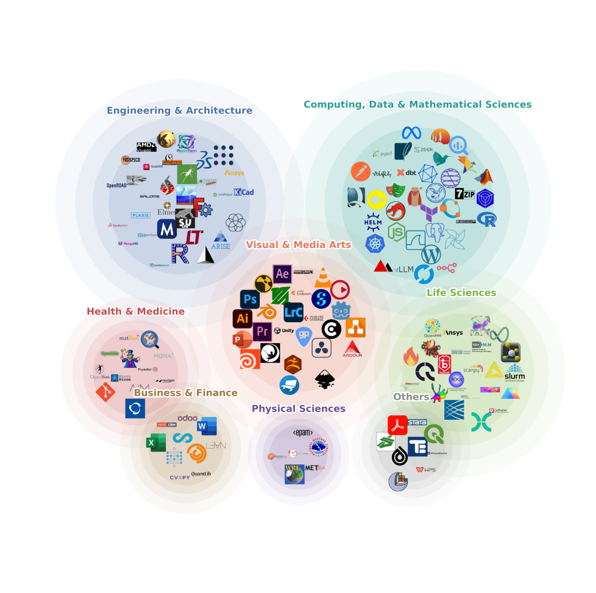
Figure 10: Software ecosystem covered by ALE tasks. Each icon is a distinct application or toolchain that appears in at least one task workflow, positioned within its primary ALE domain. Overlap regions hold tools that span multiple domains (e.g., creative-suite applications shared between Visual & Media Arts and Engineering). The figure is qualitative; quantitative per-subdomain instance counts appear in Figure 2.
B.2 Task Construction Pipeline DetailsB.2 任务构建流水线细节
This appendix expands on the staged construction protocol summarized in Section 2.3 and depicted in Figure 4. The protocol converts an expert’s workflow submission into a benchmark instance through five gates: expert sourcing, task submission and editing, first-pass review, task implementation, and final QC and acceptance.
本附录扩展第 2.3 节概述、图 4 描绘的分级构建协议。该协议通过五道关卡把专家的工作流提交转化为基准实例：专家来源、任务提交与编辑、初筛评审、任务实现、最终 QC 与收录。
Expert sourcing. The pipeline begins with targeted expert outreach. To ensure coverage across the defined taxonomies, we established an advisory committee comprising leading industry professionals and expert practitioners. This committee anchors the recruitment of domain specialists who perform complex software workflows in their daily practice.
专家来源。流水线始于有针对性的专家联络。为确保覆盖既定分类体系，我们组建了一个由领先行业专家与资深从业者组成的顾问委员会，由其支撑招募在日常实践中执行复杂软件工作流的领域专家。
Task submission and editing. Tasks originate directly from these practitioners through a dedicated web submission portal (https://agents-last-exam.org/submit/new/form). The structural overhead for experts is kept deliberately low; they are asked to upload their own past projects that historically took them days or weeks to complete. AI-assisted tools on the portal help practitioners iteratively refine their proposals until the core components are fully specified: a natural language description, the input files, the target software and tools, the expected output deliverable, and a
任务提交与编辑。任务直接来自这些从业者，经由专门的网络提交入口（https://agents-last-exam.org/submit/new/form）。专家所需承担的结构性负担被刻意压到最低：他们只需上传自己过去耗时数天乃至数周完成的既往项目。入口上的 AI 辅助工具帮助从业者迭代打磨提案，直至核心组件全部明确：自然语言描述、输入文件、目标软件与工具、期望输出交付物，以及
clear evaluation specification. For source-grounded tasks, public papers [40, 19], datasets, standards, and workflow documentation may also define input assets, label sets, or reference artifacts; the task bundle retains these source records as part of its material provenance.
一份明确的评估规格。对有出处的任务，公开论文 [40, 19]、数据集、标准与工作流文档也可用于定义输入资产、标签集或参考产物；任务包会保留这些来源记录，作为其材料溯源的一部分。
First-pass review. Upon submission, tasks undergo a first review round that functions as a screening gate. Submissions receive feedback in the form of standard conference-style decisions: major / minor revision, borderline accept, accept, and strong accept. Any revision-based
初筛评审。提交后，任务进入作为筛选闸门的首轮评审。提交者收到标准会议式决定的反馈：大修 / 小修、边缘接收、接收与强接收。任何要求修订的
decision loops the proposal back to the expert for further editing.
决定都会把提案回流给专家继续编辑。
Task implementation. Proposed tasks must then be translated from written specifications into executable benchmark environments. During implementation, an engineering team converts the expert’s intent into runnable assets, provisions the necessary software containers, and codifies the evaluation logic. This process involves a rigorous engineer review and dry-run execution. If the engineer discovers gaps in the task logic or missing dependencies, the system triggers an automatic email notification, routing the task log back to the expert to unblock development.
任务实现。随后必须将提案任务从书面规格转化为可执行的基准环境。实现过程中，工程团队把专家意图转化为可运行资产，置备必要的软件容器，并固化评估逻辑。该过程包括严格的工程师评审与试运行。若工程师发现任务逻辑存在缺口或依赖缺失，系统会触发自动邮件通知，把任务日志回传给专家以解除开发阻塞。
Final QC and acceptance. Before a fully implemented task is admitted to the benchmark, it passes a final quality control gate overseen by the expert committee. This peer-review step evaluates both reproducibility and evaluation integrity. Specifically, reviewers check whether the expert’s reference output is fundamentally correct, whether the evaluation bounds are properly calibrated (e.g., neither impossibly narrow nor spuriously permissive), and whether the problem context provides sufficient information to reach the final state. Issues found at this stage send the task back for final adjustments prior to acceptance.
最终 QC 与收录。在完全实现的任务被基准收录之前，它须经过由专家委员会监督的最终质量控制闸门。这一同行评审环节同时评估可复现性与评估完整性。具体而言，评审者检查专家的参考输出是否在根本上正确、评估界限是否校准得当（例如既不过窄至无法达成，也不过宽至形同虚设），以及问题情境是否提供了到达最终状态的充分信息。在此阶段发现的问题会将任务退回做最后调整，随后方可收录。
B.3 Industry Task Cards and MetadataB.3 行业任务卡片与元数据
B.3.1 Representative Task CardsB.3.1 代表性任务卡片
We present representative task cards to illustrate how ALE task instances are specified, executed, and scored. Each card summarizes the agent-facing request, input materials, expected deliverables, evaluation rubric, observed score, and observed outcome for one executed task instance. All trajectories shown here were produced by the Claude Code harness running Claude Opus 4.7. These cards are intended to make the benchmark construction and evaluation protocol concrete at the instance level, complementing the aggregate coverage and performance results reported in the main text.
我们呈现代表性任务卡片，以说明 ALE 任务实例如何被规定、执行与打分。每张卡片概括一个已执行任务实例的面向 agent 的请求、输入材料、期望交付物、评估细则、观测得分与观测结果。此处展示的所有轨迹均由运行 Claude Opus 4.7 的 Claude Code harness 产生。这些卡片旨在让基准构建与评估协议在实例层面具体化，与正文报告的总体覆盖与性能结果互为补充。
Task Card 1: Injection Mold-Flow Analysis PARTIAL
任务卡片 1：注塑模流分析 PARTIAL
• Staged Moldex3D project with mesh, material, and four-cavity geometry. • process_spec.json specifying fill, pack, cool, and warp process settings. • results_template.json defining every metric required in the final JSON.
• 分阶段的 Moldex3D 项目，含网格、材料与四腔几何。• 规定填充、保压、冷却与翘曲工艺设置的 process_spec.json。• 定义最终 JSON 所需全部指标的 results_template.json。
• Hard gates reject missing, malformed, or all-null results.json. • The main score compares each numeric field with a hidden solver reference within 1 percent relative tolerance. • Generated project artifacts can provide limited partial credit only when the main metrics are weak.
• 硬门槛拒绝缺失、格式错误或全空的 results.json。• 主评分将每个数值字段与隐藏的求解器参考在 1 percent 相对容差内比较。• 仅当主指标表现薄弱时，生成的项目产物才可提供有限的部分得分。
• Saved Moldex3D project after the configured simulation run. • output/results.json populated with injection pressure, V/P switch pressure, clamp force, cooling/cycle times, volume, and weight fields.
• 完成配置仿真运行后保存的 Moldex3D 项目。• 已填充注射压力、V/P 切换压力、锁模力、冷却 / 循环时间、体积与重量字段的 output/results.json。
• Score: 0.4762. The agent reached the right Moldex3D setup workflow and submitted results.json, but the score indicates only partial numeric/result credit. • Failure mode: the submitted metrics were not reliably extracted from completed solver outputs; some values were estimated rather than measured CAE results. • Interpretation: successful GUI setup was insufficient without closed-loop numerical verification: wait for result files, inspect or export solver data, then populate the JSON.
• 得分：0.4762。agent 走通了正确的 Moldex3D 设置工作流并提交 results.json，但得分表明仅获得部分数值 / 结果分。• 失败模式：提交的指标未能从已完成的求解器输出中可靠提取；部分数值系估计值而非实测 CAE 结果。• 解读：仅有成功的 GUI 设置并不足够，还须闭环数值验证——等待结果文件、检查或导出求解器数据，再填充 JSON。
Task Card 2: Orchestral Music Transcription FAIL
任务卡片 2：管弦乐记谱 FAIL
• Audio reference and task_brief.json with title, composer, tempo, instruments, and GM programs. • Dorico environment for score engraving and export. • Output-path requirements for PDF, MIDI, and overview screenshot.
• 音频参考与含标题、作曲家、速度、乐器与 GM 音色的 task_brief.json。• 用于乐谱制谱与导出的 Dorico 环境。• PDF、MIDI 与总览截图的输出路径要求。
• Missing PDF, missing MIDI, or missing/invalid notation screenshot triggers a hard zero. • After the gates pass, pitch and rhythm each contribute 30 percent, dynamics 20 percent, instrument assignment 10 percent, and score layout 10 percent. • The MIDI is compared to a reference MIDI after track pairing and quantization.
• 缺 PDF、缺 MIDI 或缺失 / 无效的乐谱截图触发硬零分。• 门槛通过后，音高与节奏各占 30 percent，力度占 20 percent，乐器分配占 10 percent，乐谱排版占 10 percent。• MIDI 经轨道配对与量化后与参考 MIDI 比较。
• transcription.pdf showing a complete, readable full score. • transcription.mid with multitrack timing, pitches, dynamics, and GM Program Change assignments. • overview.png showing a notation UI with the produced score.
• transcription.pdf，呈现完整、可读的总谱。• transcription.mid，含多轨时序、音高、力度与 GM Program Change 分配。• overview.png，显示带所产乐谱的制谱 UI。
• Score: 0.0. The agent found a matching Dorico project and exported transcription.mid, but the required transcription.pdf and overview.png were not confirmed. • Failure mode: the submission contained part of the required package, but the scoring hard gates require a complete score/MIDI/screenshot bundle before musical accuracy is evaluated. • Interpretation: partial tool use did not translate into reliable multi-artifact delivery for a creative-production task.
• 得分：0.0。agent 找到了匹配的 Dorico 项目并导出 transcription.mid，但所需的 transcription.pdf 与 overview.png 未获确认。• 失败模式：提交物只包含所需包的一部分，而评分硬门槛要求先具备完整的乐谱 / MIDI / 截图包，才会评估音乐准确性。• 解读：部分工具使用未能转化为创作生产任务所需的可靠多产物交付。
Task Card 3: Reference-Based Chroma Key Compositing FAIL
任务卡片 3：基于参考的色键合成 FAIL
• input.mp4 source clip for the keying workflow. • input.png reference frame defining target composition and foreground placement. • DaVinci Resolve desktop environment and required output path.
• 作为抠像工作流源片段的 input.mp4。• 定义目标构图与前景摆放的参考帧 input.png。• DaVinci Resolve 桌面环境与所需输出路径。
• Remote scoring samples frames from reference/breakpoint.json. • Foreground preservation is gated by roi_input_cv, and quality uses full-frame plus ROI edge IoU. • A local vision judge must also confirm that a real keying-related edit was made rather than a raw-source copy.
• 远程评分从 reference/breakpoint.json 采样帧。• 前景保留由 roi_input_cv 门槛控制，质量则采用全帧加 ROI 边缘 IoU。• 本地视觉评审还须确认进行了真实的抠像相关编辑，而非直接复制原始素材。
• output/output.mp4 containing the composited bird shot. • Frames with foreground preserved, green screen removed, and contour/placement close to the reference.
• 包含合成后飞鸟镜头的 output/output.mp4。• 前景得以保留、绿幕被移除且轮廓 / 摆放接近参考的帧。
• Score: 0.0. The agent used Resolve and exported an MP4, but the output did not satisfy the reference-based chroma-key transformation. • Failure mode: the submission treated a plausible bird-over-sky clip as the target instead of preserving the intended foreground/background relationship from the reference materials. • Interpretation: the error was in visual task grounding rather than software operation alone.
• 得分：0.0。agent 使用了 Resolve 并导出 MP4，但输出未满足基于参考的色键变换。• 失败模式：提交物把一段看似合理的“天空飞鸟”片段当作目标，而未保留参考素材中预期的前景 / 背景关系。• 解读：错误出在视觉任务接地，而非单纯的软件操作。
Task Card 4: Skeletal Animation Reproduction PARTIAL
任务卡片 4：骨骼动画复现 PARTIAL
• Singing.obj static character mesh. • reference.mp4 body-motion target and reference/package.json bone-name requirements. • Blender runtime for rigging, keyframing, rendering, and replay validation.
• Singing.obj 静态角色网格。• 作为身体动作目标的 reference.mp4 与规定骨骼命名要求的 reference/package.json。• 用于绑定、关键帧、渲染与回放验证的 Blender 运行环境。
• Validity gates require both artifacts and a non-trivial animated rig. • Scoring combines video match, replay consistency from final.blend, minimal skeleton coverage, and binary vision checks. • Short or damped motion can lose credit even when the required files are present.
• 有效性门槛同时要求产物与一个非平凡的绑定动画。• 评分综合视频匹配、来自 final.blend 的回放一致性、最小骨骼覆盖与二值视觉检查。• 即便所需文件齐全，动作过短或阻尼过大也可能失分。
• final.blend containing a usable animated rig with the required bone names. • preview.mp4 whose body motion, timing, and pose range match the hidden clean reference.
• final.blend，含具有所需骨骼命名的可用绑定动画。• preview.mp4，其身体动作、时序与姿态范围须与隐藏的干净参考相符。
• Score: 0.4285. The required Blender and preview artifacts existed and contained animation, so the run earned partial credit. • Failure mode: preview.mp4 was about 4 seconds while the reference was about 13.6 seconds, and the motion was damped to reduce mesh distortion. • Interpretation: the submission satisfied file-level validity but not the full motion-fidelity requirement.
• 得分：0.4285。所需的 Blender 与预览产物均存在且含动画，故该运行获得部分得分。• 失败模式：preview.mp4 时长约 4 秒，而参考约 13.6 秒，且动作被施以阻尼以减少网格畸变。• 解读：提交满足了文件级有效性，却未满足完整的动作保真度要求。
Task Card 5: MicroDicom Chest X-Ray Adjudication PARTIAL
任务卡片 5：MicroDicom 胸片裁定 PARTIAL
• Each TSV has hard gates for missing files, malformed headers, invalid reader values, or wrong fixed labels. • Log and impression files must match hidden references exactly by case_id. • Box output must select the hidden-supported reader and achieve IoU at least 0.50 against the gold box.
• 每个 TSV 对缺失文件、格式错误的表头、无效的读片者取值或错误的固定标签均设硬门槛。• 日志与印象文件必须按 case_id 与隐藏参考完全一致。• 框输出必须选出隐藏参考支持的读片者，并对金标准框达到不低于 0.50 的 IoU。
• Nine DICOM chest X-ray cases with a case manifest. • reader_a and reader_b annotation TSVs plus clinical notes. • Rules fixing labels, allowed selected_reader values, and output schemas.
• 九个 DICOM 胸片病例及病例清单。• reader_a 与 reader_b 标注 TSV 以及临床笔记。• 规定标签、允许的 selected_reader 取值与输出模式的规则。
• adjudicated_boxes.tsv with the final reader choice and box per case. • adjudication_log.tsv and final_impressions.tsv with the required rows and fixed labels.
• adjudicated_boxes.tsv，含每例的最终读片者选择与框。• adjudication_log.tsv 与 final_impressions.tsv，含所需行与固定标签。
• Score: 0.3333. The agent wrote the three required TSV files covering all nine cases, but the score indicates only partial agreement with the hidden references. • Failure mode: detailed image review appears only for a few cases; later decisions relied on coordinates and heuristics rather than systematic visual adjudication. • Interpretation: file-format compliance was stronger than case-by-case visual-domain judgment.
• 得分：0.3333。agent 写出了覆盖全部九个病例的三个所需 TSV 文件，但得分表明其与隐藏参考仅部分一致。• 失败模式：细致的图像审查仅见于少数病例；后续决策依赖坐标与启发式规则，而非系统的视觉裁定。• 解读：文件格式合规性优于逐病例的视觉领域判断。
B.3.2 Executed Task InventoryB.3.2 已执行任务清单
The full inventory of the 150 selected public tasks, with task name, task identifier, domain, and a brief description for each, is browsable online under the Benchmark Splits (ALE-V1, 2026/06) tab at https://agenthle.org/demo.
150 个入选公开任务的完整清单——含每个任务的名称、任务标识符、领域与简要描述——可在线浏览，见 https://agenthle.org/demo 的 Benchmark Splits（ALE-V1, 2026/06）标签页。
CEvaluation Pipeline DetailsC 评估流水线细节
C.1 Pipeline Architecture DetailsC.1 流水线架构细节
This appendix expands on the three decoupled components summarized in Section 3.1 and depicted in Figure 6: the task specification, the agent, and the environment.
本附录扩展第 3.1 节概述、图 6 描绘的三个解耦组件：任务规格、agent 与环境。
Task Specification. The task specification is the executable form of an expert submission. It encapsulates five elements provided during the construction pipeline (Section 2.3): a natural-language description, input assets, the required software, reference assets (ground-truth outputs), and evaluation criteria. These are encoded in a single main.py file that exposes three lifecycle functions: load() declares the task description, metadata, and compute requirements; start() provisions the virtual machine into a deterministic starting state by copying input assets and launching the required software; and evaluate() scores the agent’s output artifacts against references or rubrics, returning a normalized score in [0, 1]. The full protocol is detailed in Appendix C.2.
任务规格。任务规格是专家提交的可执行形态，封装了构建流水线（第 2.3 节）提供的五个要素：自然语言描述、输入资产、所需软件、参考资产（真值输出）与评估标准。它们被编码在单个 main.py 文件中，该文件暴露三个生命周期函数：load() 声明任务描述、元数据与计算需求；start() 通过复制输入资产并启动所需软件，将虚拟机置备到确定性的初始状态；evaluate() 对照参考或细则为 agent 的输出产物打分，返回 [0, 1] 区间内的归一化得分。完整协议详见附录 C.2。
Agent. The agent is the system under evaluation, composed of a harness (orchestration middleware) and a model (the foundation model). Upon receiving the task configuration, which consists of a description and associated metadata, the agent enters an action loop: it observes the environment (via screenshots, shell output, or file contents), selects an action (mouse clicks, keystrokes, shell commands, file edits, or API calls), executes it, and repeats until it decides to terminate.
Agent。agent 是被评估的系统，由 harness（编排中间件）与 model（基础模型）组成。收到由描述与相关元数据构成的任务配置后，agent 进入动作循环：观察环境（经由截图、shell 输出或文件内容），选择动作（鼠标点击、键盘输入、shell 命令、文件编辑或 API 调用），执行，并重复直至自行决定终止。
Environment. Each task executes inside a remote virtual machine that hosts the required industrial software and exposes a standardized filesystem layout. Four directories partition the workspace: input/ contains assets the agent reads (e.g., design files, game binaries, raw data); software/ holds pre-installed applications and their dependencies; output/ is the sole writable target where the agent deposits its deliverables; and reference/ stores ground-truth artifacts used exclusively by the scoring function (the agent has no access to this directory during execution). This layout enforces a clean contract: the agent reads from input/, writes to output/, and is scored by comparison against reference/.
环境。每个任务在一台远程虚拟机内执行，该虚拟机承载所需的行业软件并暴露标准化的文件系统布局。四个目录划分工作区：input/ 存放 agent 读取的资产（如设计文件、游戏二进制、原始数据）；software/ 存放预装应用及其依赖；output/ 是 agent 存放交付物的唯一可写目标；reference/ 存放仅供打分函数使用的真值产物（执行期间 agent 无权访问该目录）。这一布局确立了清晰的契约：agent 从 input/ 读取、向 output/ 写入，并通过与 reference/ 的比较被打分。
Compute environment. All task instances are executed on Google Cloud Platform (GCP) virtual machines. The default configuration is c4-standard-4 (4 vCPUs, 16 GB RAM). Tasks that require GPU acceleration (e.g., 3D rendering, simulation) use g2-standard-8 instances equipped with an NVIDIA L4 GPU. A small number of tasks involving heavy numerical simulation are provisioned with higher-memory or multi-core configurations as dictated by the task’s compute requirements declared in load(). These resource assignments are determined per-task based on the software and workload involved.
计算环境。所有任务实例均在 Google Cloud Platform（GCP）虚拟机上执行。默认配置为 c4-standard-4（4 vCPU、16 GB 内存）。需要 GPU 加速的任务（如 3D 渲染、仿真）使用配备 NVIDIA L4 GPU 的 g2-standard-8 实例。少数涉及重度数值仿真的任务，按 load() 中声明的计算需求配置更高内存或多核。这些资源分配依据所涉软件与工作负载逐任务确定。
Decoupled design guarantees. The decoupled design yields two practical guarantees. First, any agent, regardless of its internal architecture, model backbone, or tool configuration, can be evaluated on any task provided it conforms to the action interface (shell commands, GUI interactions, and file I/O). Second, the same task specification can be deployed across different environment backends (cloud VMs or local containers) without modification.
解耦设计的保证。解耦设计带来两项实用保证。其一，任何 agent——无论其内部架构、模型骨干或工具配置如何——只要符合动作接口（shell 命令、GUI 交互与文件 I/O），即可在任何任务上被评估。其二，同一任务规格无需修改即可部署到不同的环境后端（云端虚拟机或本地容器）。
C.2 Task Specification ProtocolC.2 任务规格协议
Every task specification implements three lifecycle phases that together ensure deterministic, repro- ducible evaluation.
每个任务规格实现三个生命周期阶段，共同确保评估的确定性与可复现性。
Phase 1: load() (Initialization). The load() function is purely declarative: it returns a structured task object containing the natural-language description visible to the agent, metadata (filesystem paths, configuration parameters, task-specific constants), and compute requirements (operating system type, hardware specifications). No remote connection is established and no environment state is modified. This phase defines what the task is.
阶段 1：load()（初始化）。load() 函数是纯声明式的：它返回一个结构化任务对象，包含对 agent 可见的自然语言描述、元数据（文件系统路径、配置参数、任务特定常量）与计算需求（操作系统类型、硬件规格）。该阶段不建立远程连接，也不修改环境状态，只定义任务本身。
Phase 2: start() (Environment Preparation). The start() function transforms the virtual machine into the task’s deterministic starting state. Operating through a session API that provides programmatic access to the remote desktop, including file-system operations (create, copy, delete), application management (launch, install), keyboard and mouse control, and screen capture, etc.
阶段 2：start()（环境准备）。start() 函数把虚拟机转化为任务的确定性初始状态。它经由一个会话 API 运作；该 API 提供对远程桌面的编程访问，涵盖文件系统操作（创建、复制、删除）、应用管理（启动、安装）、键盘与鼠标控制、屏幕捕获等。
Phase 3: evaluate() (Scoring). After the agent terminates, the evaluate() function retrieves the agent’s output artifacts from the remote environment and scores them against the reference assets or rubric criteria defined in the specification. The function returns a normalized score in [0, 1]. The concrete evaluation methodology (deliverable-based extraction versus milestone-based reporting, rubric comparison versus reference matching, and the anti-gaming provenance gates that guard against shortcut solutions) is summarized in Section 3.3 and detailed in Appendix C.3.
阶段 3：evaluate()（打分）。agent 终止后，evaluate() 函数从远程环境取回 agent 的输出产物，并按规格中定义的参考资产或细则标准打分，返回 [0, 1] 区间内的归一化得分。具体评估方法——基于交付物的抽取与基于里程碑的报告、细则比较与参考匹配，以及防走捷径的溯源闸门——概述于第 3.3 节，详见附录 C.3。
C.3 Evaluation Modes: Full Taxonomy and Worked ExamplesC.3 评估模式：完整分类与算例
This appendix expands Section 3.3. We document (i) where the scoring code runs, (ii) the artifact modes that a task author can choose for the comparison, (iii) the score-composition patterns observed across the benchmark, and (iv) the helper layer that backs LLM-as-judge evaluations. Concrete task implementations are cited throughout so that readers can inspect the full source.
本附录扩展第 3.3 节，记录：(i) 打分代码在哪里运行；(ii) 任务作者可为比较选择的产物模式；(iii) 基准中观察到的得分组合模式；(iv) 支撑 LLM-as-judge 评估的辅助层。行文全程引用具体任务实现，便于读者查看完整源码。
C.3.1 Execution LocaleC.3.1 执行位置
Host-side scoring (default). The harness pulls the agent’s artifact off the VM with session.read_file or session.read_bytes, then runs the scoring code in the host Python process. This is the default whenever (a) the artifact is small enough to transfer and (b) the scoring tooling is available off-VM. Examples:
主机侧打分（默认）。harness 用 session.read_file 或 session.read_bytes 从虚拟机拉取 agent 的产物，再在主机 Python 进程中运行打分代码。只要 (a) 产物足够小可传输且 (b) 打分工具在虚拟机之外可用，即采用此默认方式。示例：
• finance/equity_research_summary reads the produced LibreOffice workbook bytes and calls score_workbook_bytes against a manifest. • cybersecurity/snake_crackme reads a flag file, normalizes the text, and compares the SHA- 256 of every candidate against the expected digest. • photography/raw_photo_processing compares exported file pairs against a reference mani- fest.
• finance/equity_research_summary 读取产出的 LibreOffice 工作簿字节，并对照清单调用 score_workbook_bytes。• cybersecurity/snake_crackme 读取 flag 文件、归一化文本，再将每个候选的 SHA-256 与期望摘要比较。• photography/raw_photo_processing 将导出的文件对与参考清单比较。
Host-side scoring is preferred because the scoring code is more easily reviewed, version-controlled, and re-run offline against a saved trajectory.
主机侧打分之所以受青睐，是因为打分代码更易评审、纳入版本控制，并可离线对保存的轨迹重跑。
VM-side verifier. When the artifact requires software that cannot be reasonably moved off the VM (CAD/CAM kernels, headless 3D renderers, vendor-licensed engines, very large geometry), evaluate() uploads a per-task script from tasks/<task>/scripts/ into a temporary directory on the VM and invokes it with session.run_command; the script prints a JSON result on stdout, which the host parses into a score. Examples:
虚拟机侧验证器。当产物所需的软件无法被合理移出虚拟机（CAD/CAM 内核、无头 3D 渲染器、厂商授权引擎、超大几何体）时，evaluate() 会把一个逐任务脚本从 tasks/<task>/scripts/ 上传到虚拟机的临时目录，并以 session.run_command 调用；脚本在 stdout 打印 JSON 结果，由主机解析为得分。示例：
• manufacturing/gcode uploads check_collision.py, simulate_agent.py, and verify_stl.py to drive PowerMill’s COM API for collision detection and stock simu- lation, then to score the resulting STL surface against a hidden reference STL. • finance/sec_10k_financial_parsing uploads score_outputs.py which uses the VM’s Python environment to score the parsed filings against a multi-file reference manifest.
• manufacturing/gcode 上传 check_collision.py、simulate_agent.py 与 verify_stl.py：先驱动 PowerMill 的 COM API 进行碰撞检测与毛坯仿真，再为所得 STL 曲面与隐藏参考 STL 打分。• finance/sec_10k_financial_parsing 上传 score_outputs.py，利用虚拟机的 Python 环境对照多文件参考清单为解析出的申报文件打分。
The contract is uniform: VM-side verifiers communicate with the host strictly through their stdout JSON, never by writing into output/.
契约是统一的：虚拟机侧验证器只通过 stdout JSON 与主机通信，绝不写入 output/。
C.3.2 Artifact ModesC.3.2 产物模式
Each task workflow author selects one or more of the following modes for the comparison step. Table 3 summarizes the modes and representative task workflows.
每个任务工作流作者为比较步骤选择以下一种或多种模式。表 3 概括各模式及代表性任务工作流。
Exact / hashed values. The deliverable is a short string (a flag, a parsed answer, an identifier). Scoring is byte-equal or hash-equal after normalization. Because the answer is small but the search space is large, this mode is dominant in cybersecurity and a subset of mathematics task workflows.
精确 / 哈希值。交付物是短字符串（flag、解析出的答案、标识符）。归一化后按字节相等或哈希相等打分。由于答案很小而搜索空间很大，该模式在网络安全与部分数学任务工作流中占主导。
Structured tabular / numeric. The deliverable is a table or a multi-field record (cells of a workbook, line items of a financial filing, parameters of a calibration). The reference is a manifest of (field,
结构化表格 / 数值。交付物是表格或多字段记录（工作簿的单元格、财务申报的行项目、标定参数）。参考是一份 (field,
Table 3: Evaluation modes available to task workflow authors. Most ALE task workflows combine two or more modes (e.g., a behavioral gate with a geometric score).
value, tolerance) tuples; per-field credit is granted within tolerance and aggregated. This mode is dominant in finance, accounting, and clinical-data-standards task workflows.
value, tolerance) 元组；在容差内按字段给分并聚合。该模式在金融、会计与临床数据标准类任务工作流中占主导。
Geometric / spatial. The deliverable is a 3D mesh, a point cloud, or any spatially-embedded artifact. Scoring uses surface-distance functions (e.g., 10,000 surface samples scored against a reference STL in gcode, with credit for each fraction-within-threshold band).
几何 / 空间。交付物是 3D 网格、点云或任何空间嵌入的产物。打分采用曲面距离函数（例如在 gcode 中对参考 STL 取 10,000 个曲面采样点打分，并按各阈值内比例区间给分）。
Visual appearance. The deliverable’s correctness is most naturally judged by human eye (a rendered scene, a recolored photo, a UI screenshot). The host calls a vision LLM judge with the agent and reference images side by side and a rubric question.
视觉外观。交付物的正确性最宜由人眼判断（渲染场景、重新上色的照片、UI 截图）。主机调用视觉 LLM 评审，将 agent 图像与参考图像并排呈现，并附一条细则问题。
Behavioral / world state. The deliverable is the state of an interactive system after the agent’s edits. Scoring replays the system under a fixed trajectory and dumps a comparable state (game map, simulation log, NPC events).
行为 / 世界状态。交付物是 agent 编辑后交互系统的状态。打分在固定轨迹下重放系统并转储可比较的状态（游戏地图、仿真日志、NPC 事件）。
Free-text / semantic. The deliverable is a written report. Scoring is a rubric of yes/no or graded sub-criteria, evaluated by an LLM judge.
自由文本 / 语义。交付物是书面报告。打分依据一组是 / 否或分级子标准构成的细则，由 LLM 评审执行。
Executable artifact. The deliverable is a program, a model, or a pipeline. Scoring runs the artifact against a held-out test set or oracle and aggregates per-instance correctness.
可执行产物。交付物是程序、模型或流水线。打分让产物在留出测试集或 oracle 上运行，并聚合逐实例正确性。
C.3.3 Score-Composition PatternsC.3.3 得分组合模式
Per-mode scores are combined into the final [0, 1] value by one of four patterns:
各模式的得分按以下四种模式之一组合为最终的 [0, 1] 值：
Gate-and-score. A hard precondition that forces 0 on failure, followed by a continuous score. Used to prevent reward hacking by superficially close artifacts. Canonical example: in manufacturing/gcode, a PowerMill collision/gouge gate must pass before any geometric similar- ity is awarded; otherwise the task workflow scores 0 regardless of how close the simulated stock model is to the reference.
Gate-and-score。先设一个失败即强制得 0 的硬前置条件，再接连续得分，用以防止表面上接近的产物带来的 reward hacking。典型例子：在 manufacturing/gcode 中，必须先通过 PowerMill 的碰撞 / 过切门槛，方可获得几何相似性得分；否则无论模拟毛坯模型与参考多么接近，任务工作流一律得 0 分。
Weighted rubric. An expert-defined weighted sum over multiple sub-metrics, e.g. gcode’s
加权细则。对多个子指标做专家定义的加权和，如 gcode 的
score = 0.70 · frac_within(0.3 mm) + 0.30 · frac_within(2.0 mm)
score = 0.70 · frac_within(0.3 mm) + 0.30 · frac_within(2.0 mm)
on the surface-distance distribution between agent and reference STLs. Weights are part of the task spec and are reviewed during the QC stage of Section 2.3.
该式作用于 agent STL 与参考 STL 之间的曲面距离分布。权重是任务规格的一部分，并在第 2.3 节的 QC 阶段接受评审。
Binary checklist averaging. The deliverable is judged by N independent yes/no questions, and the score is the mean. The game/mota_reproduction task workflow uses this pattern over a set of vision-LLM probes (engine identification, character sprite presence, map layout match).
二值清单取平均。交付物由 N 个独立的是 / 否问题评判，得分即其均值。game/mota_reproduction 任务工作流在一系列 vision-LLM 探针（引擎识别、角色 sprite 是否存在、地图布局匹配）上采用该模式。
Pairwise file aggregation. When the deliverable is a directory of files matched against a reference directory, the helper utils.evaluation.collect_matching_files pairs each agent file with its reference, runs the same scoring function on every pair, and returns the mean.
成对文件聚合。当交付物是与参考目录匹配的文件目录时，辅助函数 utils.evaluation.collect_matching_files 将每个 agent 文件与其参考配对，对每对运行同一打分函数，并返回均值。
C.3.4 Judge Types and the LLM-Judge Helper LayerC.3.4 评审类型与 LLM 评审辅助层
Avoid LLM judges by default. ALE deliberately suppresses the use of LLM-as-judge wherever a deterministic alternative exists. The standing rule for every accepted task workflow is: if the deliverable can be reduced to bytes, fields, geometry, world state, or executable behavior, the scoring code must operate on those signals, not on a model’s holistic opinion of the result. A task that proposes “ask GPT-4 whether the result looks correct” is rejected at the QC stage of Section 2.3 and either re-engineered to expose a checkable artifact or dropped. This is enforced for three reasons: (i) judge models drift across releases, which would silently re-rank agents; (ii) general-purpose “does this look right?” prompts are too soft to discriminate near-correct from correct, which is exactly the regime where the benchmark needs to resolve agents; and (iii) deterministic judges can be re-run offline against a saved trajectory by anyone who has the artifact, with no API cost.
默认避免 LLM 评审。只要存在确定性替代方案，ALE 就有意抑制 LLM-as-judge 的使用。每个被收录任务工作流的常设规则是：若交付物可归结为字节、字段、几何、世界状态或可执行行为，打分代码就必须作用于这些信号，而非模型对结果的整体印象。提出“问 GPT-4 结果看起来是否正确”的任务会在第 2.3 节的 QC 阶段被拒收，或被重新设计以暴露可检验的产物，或直接弃用。这一规则有三条理由：(i) 评审模型随版本漂移，会悄然重排 agent 名次；(ii) 通用的“这看起来对吗？”提示过于宽松，难以区分接近正确与正确——而这恰是基准最需要分辨 agent 的区间；(iii) 确定性评审可由任何持有产物的人离线对保存的轨迹重跑，且无 API 成本。
When LLM judging is unavoidable. A small set of task workflows have no objective code-based reference, primarily creative or perceptual deliverables such as rendered scenes, music-production sessions, UV-mapped textures, and animation previews. For these, ALE uses the helper layer in utils/evaluation.py:
当 LLM 评审不可避免时。少数任务工作流没有客观的基于代码的参考，主要是创意性或感知性交付物，如渲染场景、音乐制作会话、UV 贴图纹理与动画预览。对这类任务，ALE 使用 utils/evaluation.py 中的辅助层：
• llm_vision_yes_no_judge: a single targeted yes/no visual question over an (agent image, reference image) pair. • llm_vision_binary_questions_sync / llm_vision_binary_checklist_judge: a list of independent yes/no probes whose final score is a fraction. • llm_vision_judge / llm_vision_json_judge: a graded or JSON-structured rubric over a small fixed set of fields.
• llm_vision_yes_no_judge：对（agent 图像，参考图像）对提出单个有针对性的是 / 否视觉问题。• llm_vision_binary_questions_sync / llm_vision_binary_checklist_judge：一组独立的是 / 否探针，最终得分为通过比例。• llm_vision_judge / llm_vision_json_judge：对小规模固定字段集施加分级或 JSON 结构化细则。
Targeted probes, not general judging. The single most important property of ALE’s LLM-judged workflows is that the prompts never ask the model to score the artifact in the abstract. Every prompt is a narrow, evidence-anchored yes/no probe, written by the task author with reference to (a) the specific software the workflow uses and (b) failure modes the author has observed in pilot agent runs. The model is asked one structurally tight question at a time; the score is composed by code from those answers. The following are verbatim probes from current task workflows:
有针对性的探针，而非笼统评审。ALE 的 LLM 评审工作流最重要的特性是：提示从不要求模型抽象地为产物打分。每条提示都是狭窄的、以证据为锚的是 / 否探针，由任务作者参照 (a) 工作流所用的具体软件与 (b) 作者在试运行 agent 时观察到的失效模式撰写。模型每次只被问一个结构紧凑的问题；得分由代码依据这些答案组合而成。以下为当前任务工作流探针的逐字摘录：
• game/mota_reproduction (replay-time engine and state checks): – “Does the first image show that the game is developed using RPGMakerXP? One can identify
• game/mota_reproduction（回放时的引擎与状态检查）：– “第一张图是否表明游戏是用 RPGMakerXP 开发的？可通过
whether there is an ‘orange sun-like circle’ in the top-left corner of the game window.” (gate) – “Does the first image show with the same map layout as in the original game?” – “Does the first image show with the same player status as in the original game?” • audio/timbre_synthesis (proves the agent actually used the DAW): – “Does this image show either (a) a software synthesizer / VST plugin interface with visible
游戏窗口左上角是否有‘橙色太阳般的圆圈’来判断。”（门槛）– “第一张图是否呈现与原游戏相同的地图布局？”– “第一张图是否呈现与原游戏相同的玩家状态？”• audio/timbre_synthesis（证明 agent 确实使用了 DAW）：– “这张图是否显示 (a)
parameters such as oscillators, filters, envelopes, LFOs, or effects, OR (b) a DAW (e.g., Cubase, Ableton, FL Studio, Logic, Reaper) arrangement / piano-roll / mixer view that contains one or more tracks with audio or MIDI clips?” (gate) – “Does this screenshot provide evidence that the user has actually worked on the project, for
参数（如振荡器、滤波器、包络、LFO 或效果器）可见的软件合成器 / VST 插件界面，或 (b) 包含一条或多条音频或 MIDI 剪辑轨道的 DAW（如 Cubase、Ableton、FL Studio、Logic、Reaper）编曲 / 钢琴卷帘 / 混音器视图？”（门槛）– “这张截图是否提供用户确实在该项目上工作过的证据，例如
example a DAW arrangement containing multiple tracks with audio or MIDI clips, a piano roll with notes entered, or a synthesizer plugin whose knobs/sliders are clearly not all in their default/init positions?” • game/uv_reproduction (UV-mapping artifact checks against a fixed reference): – “Is the texture placement and orientation correct enough to pass?” – “Does the candidate preserve the reference material appearance and color palette well enough
包含多条音频或 MIDI 剪辑轨道的 DAW 编曲、已录入音符的钢琴卷帘，或旋钮 / 滑块明显不在默认 / 初始位置的合成器插件？”• game/uv_reproduction（对照固定参考的 UV 贴图产物检查）：– “纹理摆放与朝向是否正确到足以通过？”– “候选是否足够好地保留了参考材质外观与调色板，
to pass?” – “Are obvious UV seams, stretching, or texture artifacts absent enough for the result to pass?” • game/high_to_low_modeling (decimation correctness): – “Does the candidate preserve the overall highpoly shape well enough to pass?” – “Does the candidate preserve the main silhouettes across the sampled views well enough to
足以通过？”– “明显的 UV 接缝、拉伸或纹理瑕疵是否少到足以让结果通过？”• game/high_to_low_modeling（减面正确性）：– “候选是否足够好地保留了整体高模形状，足以通过？”– “候选是否在采样视图中足够好地保留了主要轮廓，足以
pass?” – “Does the candidate achieve a meaningful lowpoly reduction rather than effectively submitting
通过？”– “候选是否实现了有意义的低模缩减，而非实际上再次提交
the highpoly again?” – “Are obvious visual artifacts or shape collapses absent enough for the result to pass?” • game/object_generation (missing-geometry restoration): – “Is the missing geometry restored well enough to pass?” – “Is the part placement and alignment correct enough to pass?”
高模？”– “明显的视觉瑕疵或形状塌陷是否少到足以让结果通过？”• game/object_generation（缺失几何修复）：– “缺失的几何是否被修复到足以通过？”– “部件摆放与对齐是否正确到足以通过？”
– “Is the whole object coherent and complete enough to pass?” – “Is the final material appearance acceptable enough to pass?” • game/skeletal_animation_reproduction (replay self-consistency): – “Does the submitted preview match the reference body motion well enough to pass?” – “Does the replay rendered from final.blend agree with the submitted preview well enough
– “整个物体是否连贯完整到足以通过？”– “最终材质外观是否可接受到足以通过？”• game/skeletal_animation_reproduction（回放自洽性）：– “提交的预览是否与参考身体动作匹配到足以通过？”– “由 final.blend 渲染的回放是否与提交的预览一致到足以
to pass?” – “Do the visible skeleton states and poses look natural and non-broken enough to pass?”
通过？”– “可见的骨骼状态与姿态是否自然、无破损到足以通过？”
Three patterns recur across these probes. (1) Each question targets one identifiable artifact (a circle in a corner, a track in a DAW, a UV seam, a silhouette, a pose), not the gestalt of “is the deliverable good.” (2) Many probes are written as gates, i.e., a binary precondition that must hold before the rest of the rubric is even checked, so that an unrelated screenshot or a placeholder file scores 0 before any quality judgment is asked. (3) The remaining probes are phrased as “.. . enough to pass?” rather than as graded preferences, which converts the model into a same-vs.-different comparator against a fixed reference rather than a free-form quality oracle. Together these conventions limit the burden on the LLM to a series of decisions that a domain expert could replicate from the same image, and keep the LLM out of the role of integrator: the integration (weighting, gating, and aggregation across instances) always happens in code.
这些探针中反复出现三种模式。(1) 每个问题都针对一个可识别的产物（角落里的一个圆、DAW 中的一条轨道、一道 UV 接缝、一个轮廓、一个姿态），而非“交付物好不好”的整体印象。(2) 许多探针被写成门槛，即在其他细则被检查之前必须成立的二值前置条件，使无关截图或占位文件在任何质量判断提出之前就得 0 分。(3) 其余探针被表述为“……到足以通过？”，而非分级偏好，这把模型变成对照固定参考的“同与异”比较器，而非自由发挥的质量 oracle。这些约定共同把 LLM 的负担限制在领域专家凭同一张图即可复现的一系列判断上，并让 LLM 退出整合者的角色：整合（跨实例的加权、门槛与聚合）始终在代码中完成。
C.3.5 Empirical Distribution of Judge TypesC.3.5 评审类型的经验分布
To make the design choice “code-based by default, LLM only when unavoidable” concrete, we report the actual distribution of judge types and execution locales at the task-workflow level. The proportions in Table 4 are obtained by static analysis of every main.py in the open-sourced reference task tree together with its accompanying scripts/ directory, scanning for direct invocations of the LLM-judge helpers in utils/evaluation.py and for the use of session.run_command on uploaded Python verifiers.
为把“默认基于代码、仅在不可避免时用 LLM”的设计选择具体化，我们报告任务工作流层面评审类型与执行位置的实际分布。表 4 中的比例来自对开源参考任务树中每个 main.py 及其配套 scripts/ 目录的静态分析：扫描对 utils/evaluation.py 中 LLM 评审辅助函数的直接调用，以及对上传的 Python 验证器使用 session.run_command 的情况。
Within the LLM-judged subset. Vision-grounded primitives dominate: the most- used helpers are llm_vision_judge, llm_vision_binary_checklist_judge, llm_vision_binary_questions_sync, and llm_vision_yes_no_judge. The re- maining helpers (llm_multimodal_binary_questions_sync, llm_multimodal_text, llm_multimodal_json, llm_vision_json_judge, and the video-rubric gemini_video_json_judge) appear in only a handful of task workflows each. Helpers may co-occur within a single task workflow. The concentration on vision helpers reflects the fact that LLM judging is reserved for cases where the deliverable is a rendered scene, photo, screenshot, or short video that has no objective code-based reference.
在 LLM 评审子集内。以视觉为根基的原语占主导：最常用的辅助函数是 llm_vision_judge、llm_vision_binary_checklist_judge、llm_vision_binary_questions_sync 与 llm_vision_yes_no_judge。其余辅助函数（llm_multimodal_binary_questions_sync、llm_multimodal_text、llm_multimodal_json、llm_vision_json_judge 以及视频细则的 gemini_video_json_judge）各自仅出现在少数任务工作流中。辅助函数可在单个任务工作流内共存。对视觉辅助函数的集中使用反映了这样一个事实：LLM 评审被保留用于交付物为渲染场景、照片、截图或短视频、且缺乏客观的基于代码的参考的情形。
Within the VM-side subset. VM-side task workflows are dominated by industries whose deliverable cannot be scored without the on-VM software stack: CAD/CAM (PowerMill, SolidWorks), licensed financial workbooks, and headless 3D rendering. The contract is uniform: a per-task-workflow verifier under tasks/<task-workflow>/scripts/ is uploaded by evaluate() into a temporary directory on the VM, executed via session.run_command, and its JSON stdout is parsed back into a score on the host.
在虚拟机侧子集内。虚拟机侧任务工作流集中于那些没有虚拟机上的软件栈就无法为交付物打分的行业：CAD/CAM（PowerMill、SolidWorks）、受授权保护的财务工作簿以及无头 3D 渲染。契约是统一的：tasks/<task-workflow>/scripts/ 下的逐任务工作流验证器由 evaluate() 上传到虚拟机上的临时目录，经 session.run_command 执行，其 JSON stdout 在主机上被解析回得分。
Composition patterns. A static-analysis estimate finds that the great majority of evaluate() bodies contain at least two early return [0.0] sites preceding a continuous-score path, consistent with the gate-and-score pattern of Section C.3.3. Explicit weighted-rubric expressions of the form a · x + b · y appear in only a small fraction of main.py files; in most task workflows the weighting is encoded inside per-task-workflow scoring scripts under scripts/ (which the static count above does not pick up), so this is a lower bound on the true prevalence of weighted aggregation.
组合模式。静态分析估计发现，绝大多数 evaluate() 函数体在连续得分路径之前至少包含两处提前返回 [0.0] 的位置，与第 C.3.3 节的 gate-and-score 模式一致。形如 a · x + b · y 的显式加权细则表达式仅见于少数 main.py 文件；多数任务工作流把加权编码进 scripts/ 下的逐任务工作流打分脚本（上述静态统计未覆盖此处），因此这是加权聚合真实流行度的下界。
C.3.6 Reference Isolation and RobustnessC.3.6 参考隔离与鲁棒性
Reference isolation. The reference/ directory lives outside the agent’s workspace and is not exposed through any session API a non-evaluator caller would invoke. Most evaluate() implemen- tations begin with a sanity check that lists every required reference path and returns 0.0 early if any path is missing, which both prevents misconfigured runs from silently producing inflated scores and documents the reference contract in the same file as the scoring logic.
参考隔离。reference/ 目录位于 agent 工作区之外，不通过任何非评审调用者会调用的会话 API 暴露。多数 evaluate() 实现以健全性检查开始：列出每个所需的参考路径，若有路径缺失则提前返回 0.0——这既防止配置错误的运行悄然产生虚高得分，也把参考契约记录在与打分逻辑相同的文件中。
Output presence and shape checks. Workflows consistently treat “no output produced” or “output in the wrong shape” as score 0 rather than as a crash, so that an agent that times out or refuses still emits a well-defined number.
输出存在性与形状检查。各工作流一致把“未产生输出”或“输出形状错误”视为 0 分而非崩溃，从而确保超时或拒绝作答的 agent 仍产生一个明确定义的数值。
Determinism. Code-based judges are deterministic by construction. For LLM-judged task workflows, we record the judge model and prompt with the result and make sure that any score can be re-derived from the agent’s saved artifacts.
确定性。基于代码的评审在构造上是确定性的。对 LLM 评审的任务工作流，我们把评审模型与提示连同结果一并记录，并确保任何得分均可从 agent 保存的产物重新推导。
C.3.7 Workflows and Task InstancesC.3.7 工作流与任务实例
A single task workflow (one main.py) exposes a list of task instances, encoded in the codebase as the VARIANTS tuple list: each instance carries instance-specific configuration but shares the same evaluate(). For example, the manufacturing/gcode task workflow declares 18 workpiece instances, each pointing at a different blank PowerMill project but scored by the same collision-gate- then-STL pipeline. Per-instance scores are averaged into a task workflow score, task workflow scores are averaged into industry scores, and industry scores aggregate into the cluster-level results reported in Section 4. The current ALE release contains 960 task workflows and 1,490 task instances in total.
单个任务工作流（一个 main.py）暴露一列任务实例，在代码库中编码为 VARIANTS 元组列表：每个实例携带实例特定的配置，但共享同一 evaluate()。例如，manufacturing/gcode 任务工作流声明 18 个工件实例，各指向不同的空白 PowerMill 项目，但均由同一“先碰撞门槛、后 STL”的流水线打分。逐实例得分平均为任务工作流得分，任务工作流得分平均为行业得分，行业得分再聚合为第 4 节报告的簇级结果。当前 ALE 版本共含 960 个任务工作流与 1,490 个任务实例。
C.4 Agent Harness InternalsC.4 Agent Harness 内部机制
This appendix elaborates on the internal structure of the agent harness introduced in Section 3.2. The architecture described here is shared, at a macro level, across mainstream harness implementations such as Claude Code [4], Codex [33], and OpenClaw, and is faithfully reproduced in our own native implementation.
本附录详述第 3.2 节介绍的 agent harness 的内部结构。此处在宏观层面描述的架构，为 Claude Code [4]、Codex [33] 与 OpenClaw 等主流 harness 实现所共享，并在我们自己的原生实现中得到忠实复现。
Main agent loop. The harness operates a six-phase control loop: 0 Initialization configures the system prompt and tool bindings; 1 Context Building assembles the current conversation state;
主 agent 循环。harness 运行一个六阶段控制循环：0 初始化——配置系统提示与工具绑定；1 上下文构建——组装当前会话状态；
2 LLM Call queries the foundation model; 3 Decide routes the model’s output to either a final delivery or a tool invocation; 4 Collect Tool Result gathers the execution outcome; 5 Overflow Check evaluates whether the accumulated context exceeds a compaction threshold. If not, the loop returns to phase 1; otherwise, context compaction is triggered before the next iteration. The loop terminates when the model elects to deliver rather than act.
2 LLM 调用——查询基础模型；3 决策——把模型输出路由到最终交付或工具调用；4 收集工具结果——获取执行结果；5 溢出检查——评估累积上下文是否超过压缩阈值。若未超过，循环回到阶段 1；否则在下一次迭代前触发上下文压缩。当模型选择交付而非继续行动时，循环终止。
System prompt builder. At initialization, the harness constructs a system prompt from modular components: Identity (agent persona), Memory (persistent cross-session state), Tool Guidance (usage conventions for each tool), Runtime (environment metadata), Behavioral Rules (safety and policy constraints), and Skills (domain-specific capabilities). These components are typically authored through configuration files such as CLAUDE.md or AGENTS.md.
系统提示构建器。初始化时，harness 从模块化组件构造系统提示：Identity（agent 人设）、Memory（跨会话的持久状态）、Tool Guidance（各工具的使用惯例）、Runtime（环境元数据）、Behavioral Rules（安全与策略约束）与 Skills（领域能力）。这些组件通常经由 CLAUDE.md 或 AGENTS.md 等配置文件撰写。
Tool system. The harness exposes a unified tool interface that the model invokes by name: file operations (read, write, glob, grep), shell execution, web search and fetch, and sub-agent management (spawn, list, wait, terminate). Each tool returns structured results that are appended to the conversation context.
工具系统。harness 暴露一个模型按名调用的统一工具接口：文件操作（read、write、glob、grep）、shell 执行、网页搜索与抓取，以及子 agent 管理（spawn、list、wait、terminate）。每个工具返回结构化结果，并追加到会话上下文。
GUI-as-Tool: CUA MCP bridge. The GUI-as-Tool mode extends the tool system with 14 desktop- action tools exposed through an MCP server that wraps a CUA (Computer-Use Agent) HTTP API running on the VM. Table 5 lists the full tool surface.
GUI-as-Tool：CUA MCP 桥。GUI-as-Tool 模式为工具系统扩展了 14 个桌面操作工具，它们经由一个 MCP 服务器暴露；该服务器封装了运行在虚拟机上的 CUA（Computer-Use Agent）HTTP API。表 5 列出完整的工具面。
C.4.1 Tool Surface and TerminologyC.4.1 工具面与术语
Tool taxonomy and per-agent availability. Tool names differ across harnesses, so the analysis in Figure 9 maps raw tool calls into a common taxonomy before aggregation. Bash denotes direct shell or terminal execution, including tools named Bash, bash, shell, exec, run_shell_command, terminal, Execute, bash_command, and execute_code. File denotes direct file-system tools
工具分类与各 agent 的可用性。各 harness 的工具命名不一，因此图 9 的分析先把原始工具调用映射到一个共同分类体系，再做聚合。Bash 表示直接的 shell 或终端执行，包括名为 Bash、bash、shell、exec、run_shell_command、terminal、Execute、bash_command 与 execute_code 的工具。File 表示直接的文件系统工具
such as Read, Write, Edit, Glob, Grep, read_file, write_file, edit_file, patch, and list_directory. GUI denotes the CUA desktop-action surface in Table 5, including wrapper- specific names such as mcp__cua__click, cua___screenshot, and mcp_cua_key. Web denotes browser or retrieval tools such as WebSearch, WebFetch, web_search, web_fetch, webSearch, webFetch, and browser_navigate. Planning/delegation denotes explicit planning, task-tracking, memory, or sub-agent tools such as TodoWrite, task, think, delegate, subagents, and memory_get. Other captures process, session, finish, or harness-internal utilities that do not fit the preceding groups. Finally, Azure desktop refers to the hosted Windows remote-desktop backend used for Windows GUI task execution; it is an execution substrate, not a model provider and not a separate tool class.
如 Read、Write、Edit、Glob、Grep、read_file、write_file、edit_file、patch 与 list_directory。GUI 表示表 5 中的 CUA 桌面操作面，包括封装器特有的名称，如 mcp__cua__click、cua___screenshot 与 mcp_cua_key。Web 表示浏览器或检索工具，如 WebSearch、WebFetch、web_search、web_fetch、webSearch、webFetch 与 browser_navigate。Planning/delegation 表示显式的规划、任务跟踪、记忆或子 agent 工具，如 TodoWrite、task、think、delegate、subagents 与 memory_get。Other 收纳 process、session、finish 或不属于前述各类的 harness 内部实用程序。最后，Azure desktop 指用于 Windows GUI 任务执行的托管 Windows 远程桌面后端；它是执行基底，既非模型提供方，也不是独立的工具类。
Sub-agents. Complex tasks benefit from delegation. The harness can spawn specialized sub-agents (a General sub-agent with access to all tools, an Explore sub-agent restricted to read-only operations, among others) that operate in isolated context windows and return summarized results to the parent loop. This mechanism enables parallel exploration and limits context consumption.
子 agent。复杂任务受益于委托。harness 可派生专门的子 agent（如可访问全部工具的 General 子 agent、限定只读操作的 Explore 子 agent 等），它们在隔离的上下文窗口中运行，并将汇总结果返回给父循环。该机制支持并行探索并限制上下文消耗。
Context manager. Long-horizon professional tasks routinely generate context that exceeds model limits. The context manager implements a three-tier compaction strategy: (1) Microcompaction clears stale tool results in place; (2) LLM-based summarization compresses older conversation segments into structured checkpoints; (3) Truncation enforces hard context-window limits (e.g., 400K or 1M tokens). This graduated approach preserves recent detail while retaining long-range planning state.
上下文管理器。长时程职业任务通常会生成超出模型限制的上下文。上下文管理器实现三级压缩策略：(1) 微压缩——就地清理过期的工具结果；(2) 基于 LLM 的摘要——把较早的会话段压缩为结构化检查点；(3) 截断——强制硬性的上下文窗口限制（如 400K 或 1M token）。这种分级方法在保留近期细节的同时维持长程规划状态。
ALE-Claw vs. OpenClaw. OpenClaw is a personal AI assistant with two main components: a user-interaction runtime and an agent loop. For ALE-Claw, we removed the components that keep a long-lived, multi-user AI assistant alive in production: the scheduled-prompt subsystem, including cron and heartbeats; multi-channel gateways; the skills system; and the plugin framework with lifecycle hooks. These components are not needed to solve a single benchmark task. The simplification reduces the system prompt by ∼65%.
ALE-Claw 与 OpenClaw。OpenClaw 是一个个人 AI 助手，含两个主要组件：用户交互运行时与 agent 循环。对 ALE-Claw，我们移除了让长期运行的多用户 AI 助手在生产环境中存活的组件：定时提示子系统（包括 cron 与 heartbeats）、多通道路径网关、技能系统，以及带生命周期钩子的插件框架——求解单个基准任务并不需要这些组件。该简化使系统提示缩减约 65%。
The agent loop is similar in principle to the design in Figure 8: it takes a task instruction and turns it into a sequence of tool calls and observations until the task is complete. OpenClaw was originally developed in TypeScript [36], which makes direct adaptation to the CUA framework difficult. To resolve this, we rewrote the agent loop in Python and added a small set of CUA-specific adaptations: a composite computer-use tool that matches CUA’s native GUI surface, and a vision-driven GUI sub-agent, delegate_gui, with no OpenClaw analogue. We retained OpenClaw’s load-bearing context-management primitives near-verbatim.
agent 循环在原理上与图 8 的设计相似：接收任务指令，并将其转化为一系列工具调用与观察，直至任务完成。OpenClaw 最初以 TypeScript [36] 开发，这使直接适配 CUA 框架颇为困难。为此，我们用 Python 重写了 agent 循环，并加入一小组 CUA 特有的适配：一个匹配 CUA 原生 GUI 面的复合计算机使用工具，以及一个 OpenClaw 中没有对应物的视觉驱动 GUI 子 agent——delegate_gui。我们几乎逐字保留了 OpenClaw 承载核心功能的上下文管理原语。
ALE-Claw is also of independent interest. By isolating OpenClaw’s agent loop and porting it to Python, we make the design accessible to the broader Python research ecosystem and to the CUA framework specifically, where the original TypeScript implementation cannot be plugged in directly.
ALE-Claw 也具有独立的价值。通过隔离 OpenClaw 的 agent 循环并将其移植到 Python，我们使该设计对更广泛的 Python 研究生态、尤其是 CUA 框架可及——原始的 TypeScript 实现无法直接接入其中。
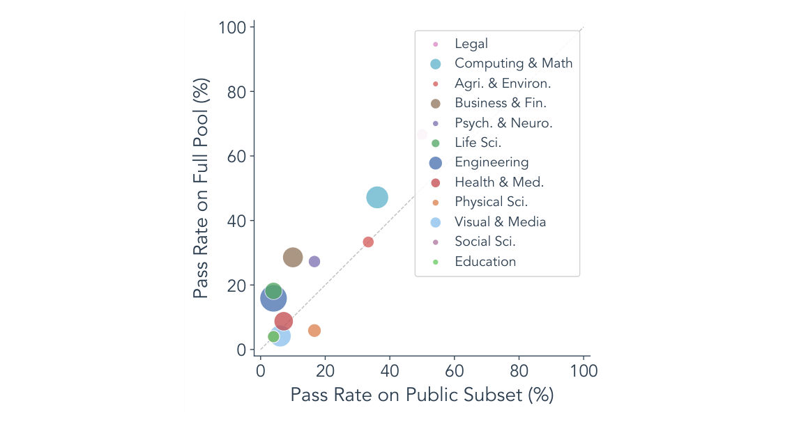
Figure 11: Public-subset representativeness. Pass rate per taxonomy cluster on the public subset (x) vs. the full task pool (y) for Claude Code + Opus 4.7. Point size ∝total task instances per cluster. The strong correlation (r=0.89) confirms the public subset is representative.
The Python port also enables dynamic ablation of the agent harness. Components can be swapped or removed in place, and the resulting performance shift can be measured directly; this workflow is impractical against the original TypeScript runtime. As one concrete future direction, ALE-Claw can serve as a fixed scaffold for benchmarking different GUI models against the same task suite.
Python 移植还支持对 agent harness 的动态消融：组件可就地替换或移除，并直接测得由此产生的性能变化；这一工作流对原始 TypeScript 运行时并不现实。作为一个具体的未来方向，ALE-Claw 可作为固定脚手架，用于在同一任务套件上对不同 GUI 模型做基准测试。
DExtended Experiment Results and AnalysisD 扩展实验结果与分析
D.1 Public-Subset RepresentativenessD.1 公开子集的代表性
To verify that the public subset is representative of the broader benchmark despite its limited size (Section 2.3), we ran Claude Code + Opus 4.7 on the full task pool. The full task pool yield a higher pass rate. The gap arises because the public set includes the full Last-Exam tier, while the private pool contains proportionally more Near-Term-level tasks. Figure 11 compares pass rates per taxonomy cluster on the public subset versus the full task pool. The two axes are strongly correlated (Pearson r=0.89, p<0.001), indicating that the public subset faithfully reflects full-pool difficulty across domains. Most clusters lie above the diagonal because the private pool’s higher share of easier tasks raises each cluster’s full-pool pass rate.
为验证公开子集尽管规模有限仍能代表更大的基准（第 2.3 节），我们在完整任务池上运行了 Claude Code + Opus 4.7。完整任务池产生了更高的通过率。差距的成因在于：公开集包含完整的 Last-Exam 档，而私有池中 Near-Term 级别的任务占比更高。图 11 比较了公开子集与完整任务池在各分类簇上的通过率：两条轴强相关（Pearson r=0.89，p<0.001），表明公开子集忠实地反映了完整任务池在各领域的难度。多数簇位于对角线之上，因为私有池中较易任务的占比更高，抬高了各簇的完整池通过率。
D.2 Timeout AnalysisD.2 超时分析
ALE evaluations use a five hour wall clock cap per run. When a run reaches the cap, the harness stops the agent and the normal evaluator scores whatever artifacts are present in the output directory. In the runs used for Table 1, 3.8% of evaluated runs reached the cap. Runs that reached the cap have a mean score of 20.7, compared with 33.2 for runs that ended earlier.
ALE 评估对每次运行设五小时墙钟上限。运行到达上限时，harness 停止 agent，由常规评估器对输出目录中现存的产物打分。在表 1 所用的运行中，3.8% 的被评估运行到达上限。到达上限的运行平均得分 20.7，而更早结束的运行为 33.2。
D.3 Failure Taxonomy ClassificationD.3 失败分类体系
This appendix documents the two-stage pipeline behind the failure root-cause taxonomy presented in Figure 9.
本附录记录图 9 所示失败根因分类体系背后的两阶段流水线。
D.3.1 Stage 1: Trajectory analysisD.3.1 阶段 1：轨迹分析
For each failed task, an LLM (OpenAI Codex) was given access to the full run arti- fact directory, including the agent interaction log (interaction_log.json), run metadata (run_result.json, agent_result.json), evaluation output (debug/eval/result.json), and event traces (events.jsonl). The LLM was prompted to produce a structured analysis card in Markdown with five mandatory sections:
对每个失败任务，一个 LLM（OpenAI Codex）可访问完整的运行产物目录，包括 agent 交互日志（interaction_log.json）、运行元数据（run_result.json、agent_result.json）、评估输出（debug/eval/result.json）与事件轨迹（events.jsonl）。该 LLM 被提示生成一份 Markdown 结构化分析卡，须含五个必备部分：
1. Conclusion: a one-sentence verdict, an overall judgment (success / partial success / failure), and the single most important problem. 2. Task description: a plain-language explanation of what the task asks, including key constraints and runtime metadata. 3. What the agent did right: correct behaviors, with evidence pointers to specific log entries. 4. What the agent did wrong: observed errors, with evidence pointers. The prompt requires separating confirmed errors from uncertain or inferred causes. 5. Scoring: the final score, raw score breakdown (if available), inferred evaluation criteria, and a confidence rating.
1. 结论：一句话判定、总体判断（成功 / 部分成功 / 失败）与最重要的单个问题。2. 任务描述：用平实语言解释任务要求，包括关键约束与运行时元数据。3. agent 做对了什么：正确行为，附指向具体日志条目的证据指针。4. agent 做错了什么：观察到的错误，附证据指针；提示要求把已确认的错误与不确定或推断的原因分开。5. 打分：最终得分、原始得分分解（如有）、推断的评估标准与置信度评级。
Each claim in the analysis card must cite a specific artifact file and field as evidence. The prompt prohibits reading the full transcript (transcript.jsonl) to keep generation cost bounded; the interaction log provides a sufficient behavioral summary.
分析卡中的每个论断都必须引用具体的产物文件与字段作为证据。提示禁止阅读完整转录（transcript.jsonl），以控制生成成本；交互日志已提供足够的行为摘要。
D.3.2 Stage 2: Taxonomy classificationD.3.2 阶段 2：分类体系归类
Each analysis card was then classified into a two-level failure taxonomy using GPT-4o (temperature 0). The classification prompt defines the following hierarchy:
随后，每张分析卡用 GPT-4o（温度 0）归入两级失败分类体系。分类提示定义如下层级：
• Understanding: the agent lacked knowledge or fabricated information. – Domain Knowledge Gap: the agent’s errors trace back to missing specialized expertise. The
• Understanding：agent 缺乏知识或编造信息。– Domain Knowledge Gap：agent 的错误可追溯到缺乏专门知识。提示指示：“领域专家会避免这个错误吗？若是，归入此类。”– Hallucination/Fabrication：agent 编造数据或结果，而非计算得到。
prompt instructs: “Would a domain expert have avoided this mistake? If yes, classify here.” – Hallucination/Fabrication: the agent invented data or results instead of computing them. • Approach: the agent understood the domain but chose the wrong plan. – Wrong Strategy: the agent violated explicit task constraints or chose a fundamentally wrong
• Approach：agent 理解领域但选择了错误的计划。– Wrong Strategy：agent 违反了明确的任务约束，或选择了并非源于领域无知、却从根本上错误的方法。
method not attributable to domain ignorance. – Incomplete/Abandoned: the agent stopped early or failed to produce required deliverables.
– Incomplete/Abandoned：agent 过早停止或未能产出所需交付物。
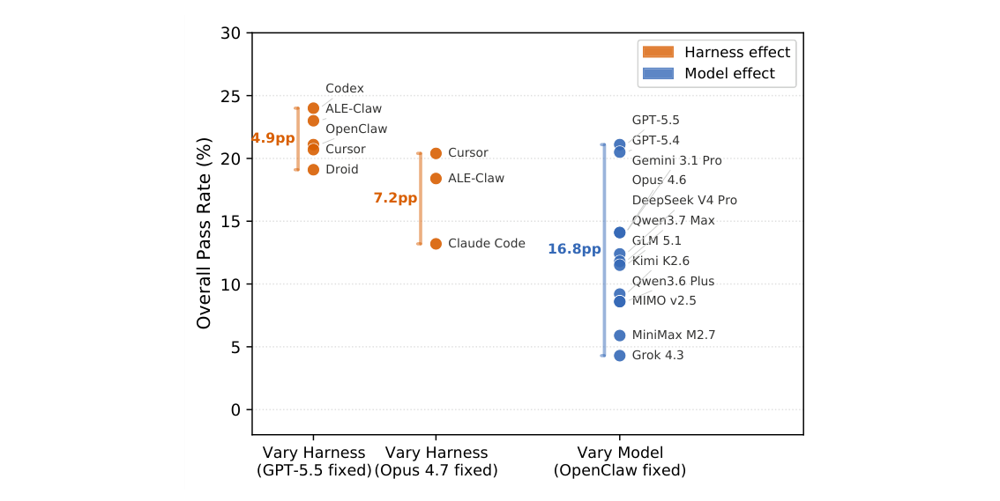
Figure 12: Model choice vs. harness choice. Each dot is one configuration; the vertical bracket shows the full range of overall pass rates. Varying the backbone model under a fixed harness (OpenClaw, 12 models) produces a 16.8 pp spread, roughly 3× the spread observed when varying the harness under a fixed backbone (4.9–7.2 pp).
• Execution: the approach was sound but the implementation was flawed.
• Execution：方法本身合理，但实现有缺陷。
– Implementation Bug: logic errors, calculation mistakes, or data processing bugs. – Output Format Error: output in wrong format, location, or structure.
– Implementation Bug：逻辑错误、计算失误或数据处理缺陷。– Output Format Error：输出格式、位置或结构错误。
• Infrastructure: external constraints unrelated to agent capability.
• Infrastructure：与 agent 能力无关的外部约束。
– GUI/Browser Failure: GUI or browser interaction failed due to tool issues. – Timeout/Resources: the agent ran out of time or computational resources.
– GUI/Browser Failure：因工具问题导致 GUI 或浏览器交互失败。– Timeout/Resources：agent 耗尽了时间或计算资源。
D.3.3 DistributionD.3.3 分布
Nearly half (47%) of classifiable failures stem from Approach errors: wrong strategy (30%) or premature abandonment (17%). Understanding failures account for 31%, dominated by domain knowledge gaps (25%) with a smaller fraction (6%) involving hallucination or data fabrication. The remaining 22% are Execution errors: output format mismatches (10%), implementation bugs (8%), and GUI interaction failures (4%). Timeout and resource-exhaustion cases are excluded from this breakdown because they reflect environment constraints rather than agent reasoning failures; their prevalence is analyzed separately in Appendix D.2.
在可归类的失败中，近一半（47%）源于 Approach 错误：错误策略（30%）或过早放弃（17%）。Understanding 失败占 31%，以领域知识缺口为主（25%），另有较小比例（6%）涉及幻觉或数据编造。其余 22% 为 Execution 错误：输出格式不匹配（10%）、实现缺陷（8%）与 GUI 交互失败（4%）。超时与资源耗尽案例不在此分解之列——它们反映的是环境约束而非 agent 推理失败，其流行度在附录 D.2 中另行分析。
D.4 Model vs. Harness EffectD.4 模型与 harness 效应对比
A natural question raised by Table 1 is whether performance differences are driven primarily by the choice of foundation model or the choice of agent harness. Figure 12 isolates the two factors. Under a fixed OpenClaw harness, swapping the backbone model produces an overall pass-rate spread of 16.8 percentage points (from 4.3% for Grok 4.3 to 21.1% for GPT-5.5). Under a fixed backbone, swapping the harness yields a much narrower spread: 4.9 pp when the backbone is GPT-5.5 (five harnesses, 19.1–24.0%) and 7.2 pp when the backbone is Claude Opus 4.7 (three harnesses, 13.2–20.4%).
表 1 引出的一个自然问题是：性能差异究竟主要由基础模型的选择驱动，还是由 agent harness 的选择驱动。图 12 分离了这两个因素。在固定 OpenClaw harness 下，更换骨干模型产生 16.8 个百分点的总体通过率离散（从 Grok 4.3 的 4.3% 到 GPT-5.5 的 21.1%）；在固定骨干下，更换 harness 产生的离散窄得多：骨干为 GPT-5.5 时为 4.9 个百分点（五个 harness，19.1–24.0%），骨干为 Claude Opus 4.7 时为 7.2 个百分点（三个 harness，13.2–20.4%）。
The pattern is consistent across both backbone choices: among the competitive harnesses evaluated here, engineering differences in prompting strategy, tool routing, and context management account for only a modest share of overall performance variation. The dominant factor is the foundation model’s reasoning and domain knowledge, which aligns with the failure analysis in Section 4.2, where Understanding and Approach errors (both rooted in model capability) constitute the majority of failures.
该模式在两种骨干选择下均一致：在本文评估的具竞争力 harness 中，提示策略、工具路由与上下文管理方面的工程差异仅占总体性能变化的一小部分。主导因素是基础模型的推理与领域知识——这与第 4.2 节的失败分析一致：根植于模型能力的 Understanding 与 Approach 错误构成失败的大多数。
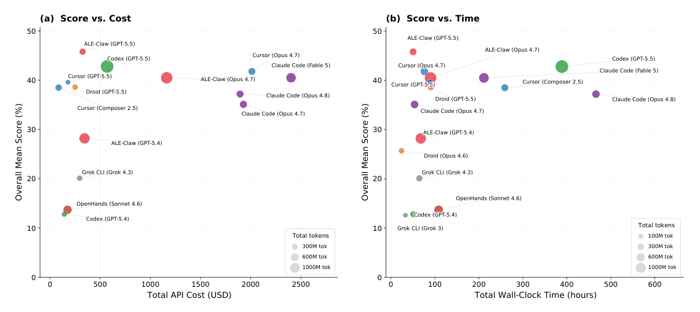
Figure 13: Performance vs. resource consumption for mainstream agent harnesses. Each bubble represents one harness– backbone configuration from Table 1; bubble area is proportional to total token consumption. (a) Overall mean score vs. total API cost (configurations with available cost data). (b) Overall mean score vs. total wall-clock time (all 16 configurations). The ideal operating point is the upper-left corner of each panel (high score, low resource use).图 13 可视化了表 1 中 16 个主流 harness–骨干配置的性能与资源消耗之间的关系。由此可得出三点观察。
D.5 Cost, Time, and Token EfficiencyD.5 成本、时间与 token 效率
Cost and performance are only loosely correlated. In panel (a), ALE-Claw with GPT-5.5 achieves the highest overall mean score (45.8%) at $326 total API cost, while the same harness paired with Opus 4.7 spends 3.6× more ($1 164) yet scores 5.3 percentage points lower (40.5%). Cursor with Composer 2.5 is the most frugal configuration, reaching 38.5% for $87, whereas Claude Code with Fable 5 spends $2 402, the highest of any configuration, for a comparable 40.5%. The spread indicates that higher spending does not reliably translate to better results; the backbone model’s fit to the task distribution and the harness’s token efficiency jointly determine the cost–performance tradeoff.
成本与性能仅松散相关。在面板 (a) 中，ALE-Claw 搭配 GPT-5.5 以 326 美元的总 API 成本取得最高的总体平均分（45.8%）；同一 harness 搭配 Opus 4.7 的花费高出 3.6 倍（$1 164），得分却低 5.3 个百分点（40.5%）。Cursor 搭配 Composer 2.5 是最节俭的配置，以 87 美元达到 38.5%；而 Claude Code 搭配 Fable 5 花费 2 402 美元——所有配置中最高——却只得到相当的 40.5%。这一离散表明，更高的花费并不能可靠地转化为更好的结果：骨干模型对任务分布的契合度与 harness 的 token 效率共同决定成本–性能权衡。
Time efficiency varies widely. Panel (b) reveals that wall-clock time is largely decoupled from score. ALE-Claw (GPT-5.5) achieves the top score in approximately 51 hours of total wall-clock time, whereas Claude Code (Opus 4.8) requires 466 hours for a lower score (37.2%). Droid (Opus 4.6) is the fastest configuration (24 hours) but scores only 25.7%. The variation reflects differences in per-task timeout behavior, retry strategies, and the degree of parallelism in each harness’s action loop.
时间效率差异巨大。面板 (b) 显示墙钟时间与得分在很大程度上脱钩：ALE-Claw（GPT-5.5）以约 51 小时的总墙钟时间取得最高分，而 Claude Code（Opus 4.8）耗时 466 小时却得分更低（37.2%）。Droid（Opus 4.6）是最快的配置（24 小时），但只得 25.7%。这一差异反映了各 harness 在逐任务超时行为、重试策略与动作循环并行程度上的不同。
Token consumption does not predict performance. Bubble sizes in both panels show that token- heavy configurations are not necessarily higher-scoring. ALE-Claw (Opus 4.7) consumes 1 373M tokens yet scores slightly below Cursor (Opus 4.7) at 460M tokens (40.5% vs. 41.8%). Conversely, Cursor (GPT-5.5) uses only 160M tokens while reaching 39.6%, suggesting that concise tool use and efficient context management can compensate for raw token volume.
token 消耗不能预测性能。两个面板中的气泡大小表明，token 消耗大的配置不一定得分更高：ALE-Claw（Opus 4.7）消耗 1 373M token，得分却略低于只用 460M token 的 Cursor（Opus 4.7）（40.5% 对 41.8%）。相反，Cursor（GPT-5.5）仅用 160M token 便达到 39.6%，表明简洁的工具使用与高效的上下文管理可以弥补原始 token 量的不足。
D.6 Per-Task Instance Score HeatmapsD.6 逐任务实例得分热图
Figures 14–16 show the mean score of every task instance under each evaluated agent system. Rows are sorted by descending average score across all systems; columns are grouped by harness and sorted by descending average score within each group. Task instance labels are colored by taxonomy domain (legend inset). Gray cells indicate missing runs.
图 14–16 展示每个任务实例在各被评估 agent 系统下的平均分：各行按所有系统上的平均分降序排列；各列按 harness 分组，并在组内按平均分降序排列。任务实例标签按分类领域着色（图例见插图）。灰色单元格表示缺失的运行。
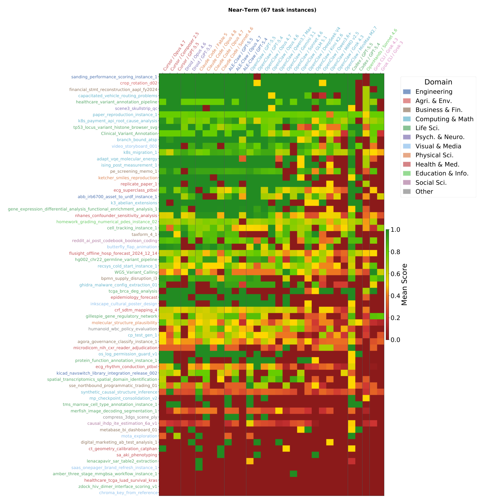
Figure 14: Per-task instance scores: Near-Term tier (67 task instances).
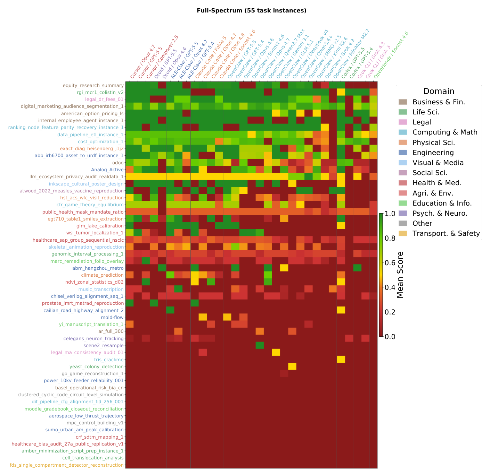
Figure 15: Per-task instance scores: Full-Spectrum tier (55 task instances).
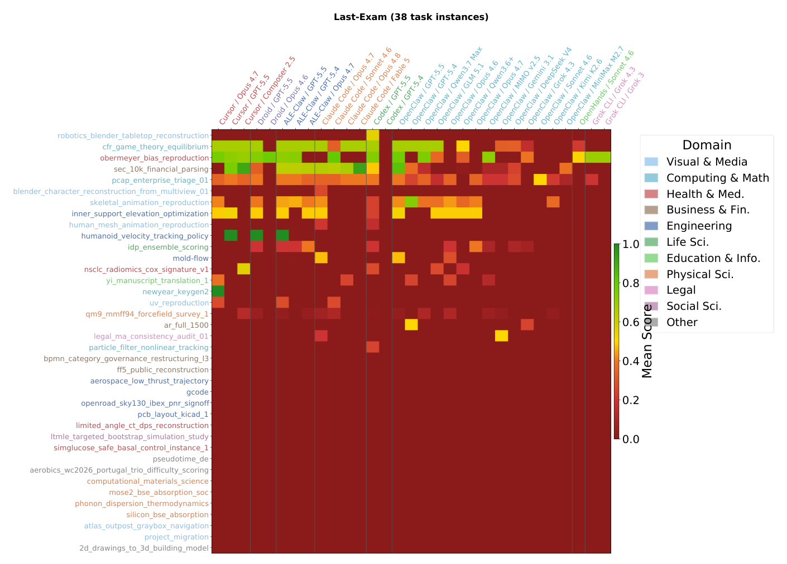
Figure 16: Per-task instance scores: Last-Exam tier (38 task instances).